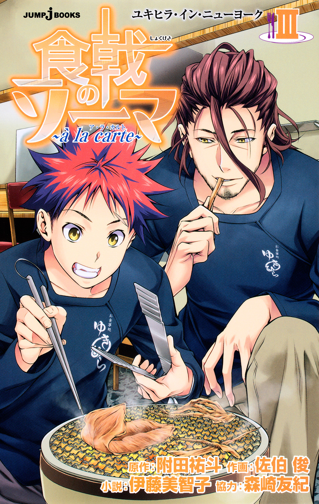
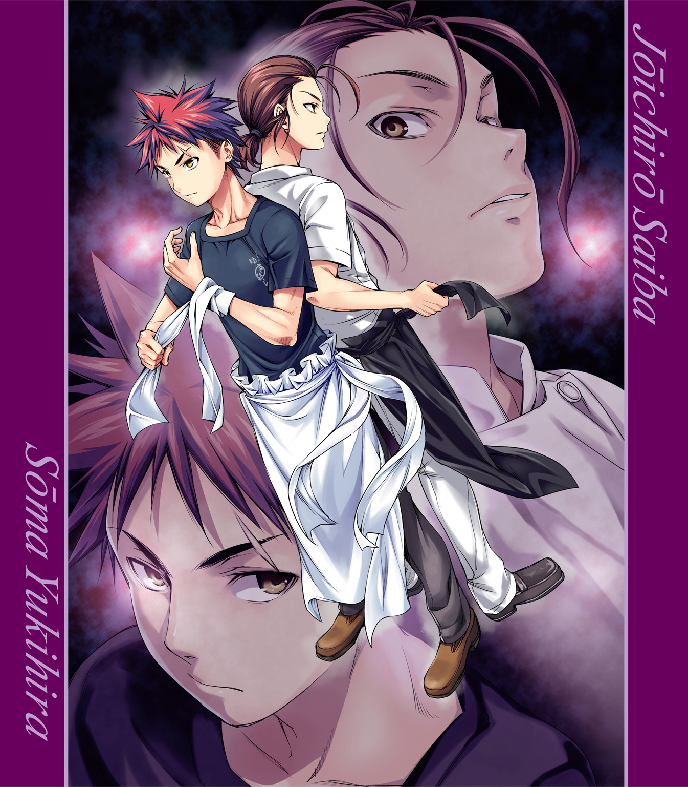
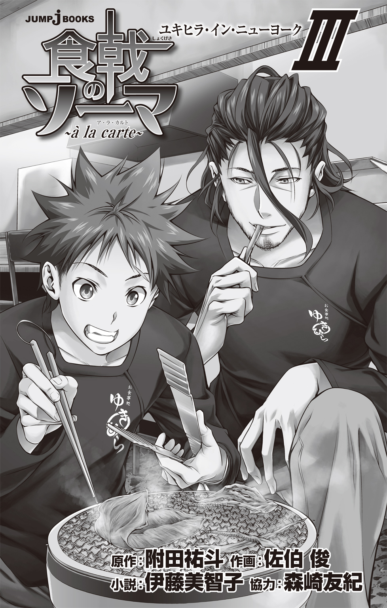
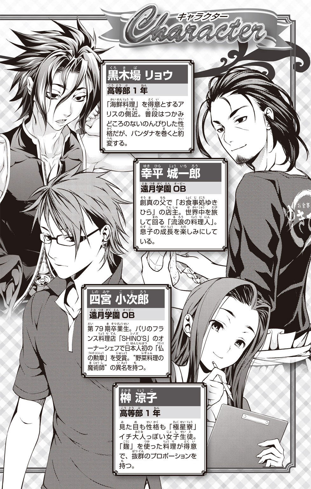
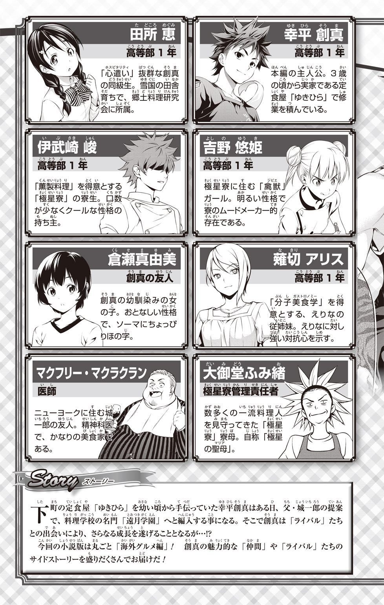
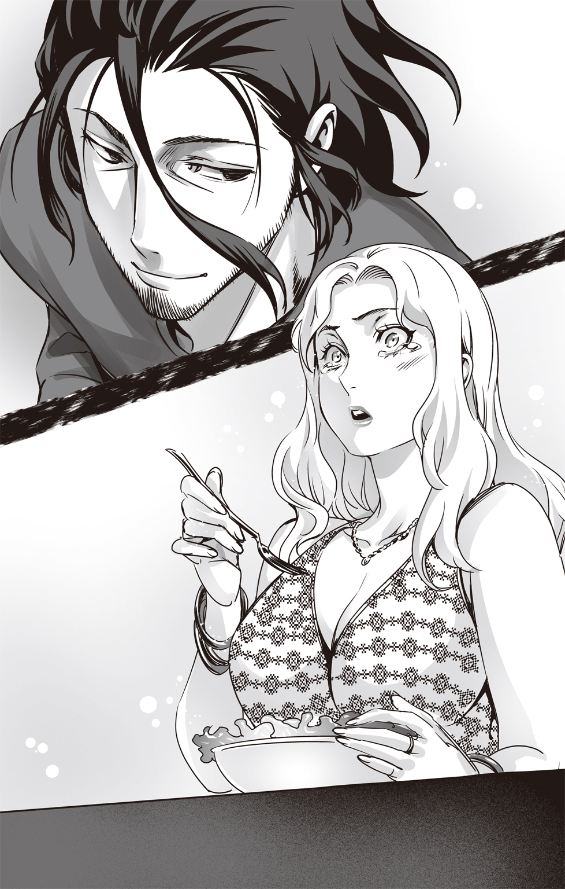
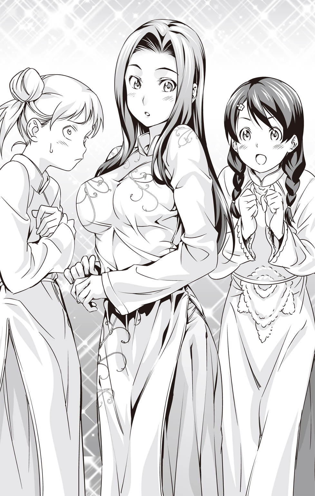
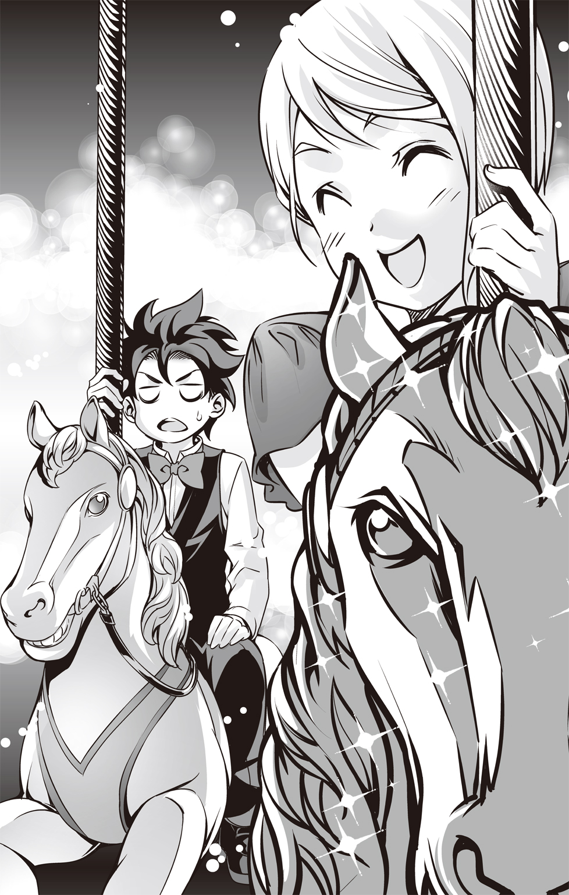
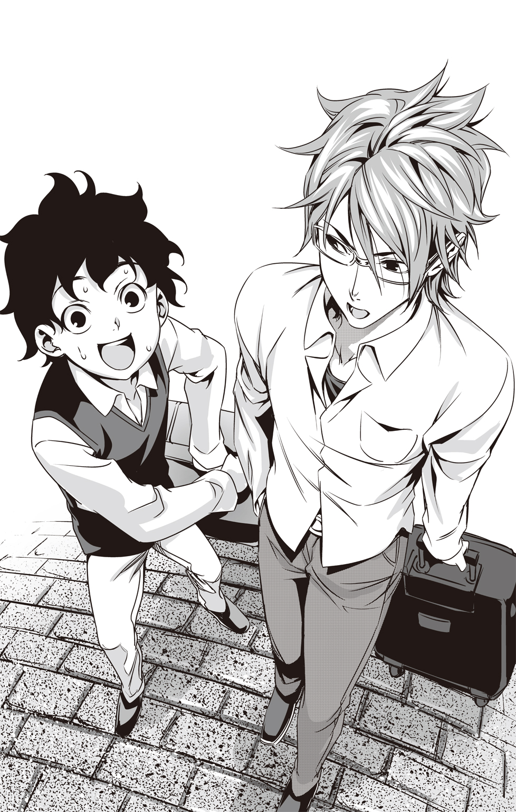
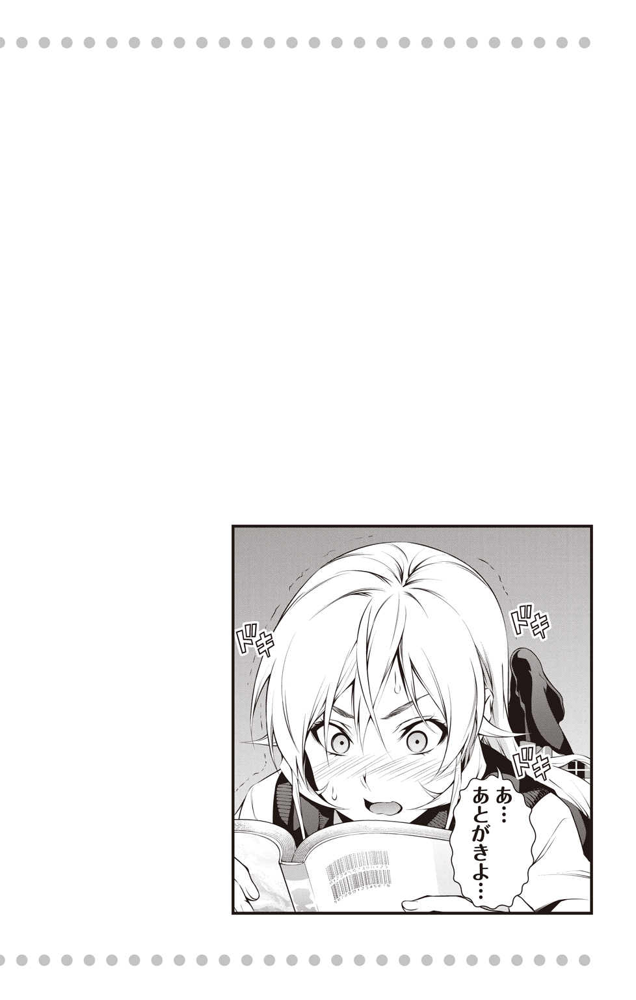

| 食戟のソーマ ～a la carte～ III ユキヒラ・イン・ニューヨーク | |
| 附田祐斗 & 佐伯俊 & 伊藤美智子 | |

この本は縦書きでレイアウトされています。
また、ご覧になる機種により、表示の差が認められることがあります。




食戟のソーマ〜à la carte〜 Ⅲ
Contents
おまけ 倉瀬さんのドキドキ日記
★この作品はフィクションです。実在の人物・団体・事件などには、いっさい関係ありません。
やあ、みんな、元気してる？ ボクは、マクフリー・マクラクラン。
「あんた誰？」だって？ ＨＡＨＡＨＡ、そんなキミは『食戟のソーマ』コミックス１巻の53ページを見てくれ。そこに、「マクフリー医師」って呼ばれてるふくよかないい男がいるだろう？ それがボクだ。
察しのいい読者の方々は、もうわかっていると思うけれど、今回はジョウ（JOE）、つまり、ジョウイチロウ・サイバ――現在はジョウイチロウ・ユキヒラ（幸平城一郞）のお話だ。
でもその前に、ちょっとだけ自己紹介をさせてもらおう。
ボクは、ニューヨークのアッパー・イースト・サイドで精神科医をしている。このあたりは、俳優や金融関係者などが住む高級住宅エリアだ。週末にはマンハッタンの中心にあるセントラルパークで、コーヒー片手に散歩したりなんかする。自分で言うのもなんだけど「luxury」な暮らしをしている。もう一回言うぞ。「luxury」。優雅な暮らしって意味だ。
そんな優雅な暮らしをしているボクがジョウに出会ったのは、もう十数年以上も前に、とある大物議員が主催した誕生日パーティだった。
シェフとして呼ばれていたまだ若かりしころのジョウは、少し長い黒髪をお上品に束ね、白い調理服がよく似合っていた。でも、その黒曜石みたいな瞳はどこか鋭くて、野性的な雰囲気をまとっている。彼が話したいことは身ぶりで伝わってくるけど、彼の英語はスラングまじりの片言だった。
正直、参加者は「こんなまともに英語も話せないようなヤツに何ができるんだ」って思ってたけど、彼が料理を作り始めるとその空気は一変した。ボクは料理のことはよくわからないから、うんちくは語れないけど、多分、和食をベースにしたフレンチやイタリアン、チャイニーズやロシア料理、カザフスタンだか、ウズベキスタンだかの国の料理を融合させたような、なんともエキゾチックなお皿がテーブルに並んだ。どれも目玉が飛び出るぐらいうまい。
野生味と繊細さ。ボク達はあっという間にジョウのパーソナリティと、彼の料理にメロメロになった。
それから、いつの間にか英語がペラペラになったジョウがニューヨークに戻ってくるたびに、誕生日会やら、高級ショップのパーティやら、有名政治家のレセプションやらで、彼は引っ張りだこだった。現地で材料を仕入れて、その場で料理を作る。さながら、出張料理人ってとこだ。
しばらくは世界を回るついでに、ニューヨークにも寄ってくれてたけど、ジョウは突然、ぱたっと来なくなった。まあいつものことだ、そんな風に思っていたけど、二年が経ち、三年が経ち――彼は本当に姿を消してしまった。
やっとのことでジョウを見つけ出し、連絡が取れるようになった時、彼のファミリーネームは「サイバ」から「ユキヒラ」に変わっていた。ジョウの料理を食べられなくて禁断症状に陥ってるみんなは、彼がニューヨークに戻るなり、おあずけを食らった犬のように群がった。
そう、ボク達は犬。ジョウの料理ひとつでゴキゲンになれちゃう犬だ。
まあそんなわけで、ボクとジョウの付き合いはそこそこ長いわけだけれども、正直、ジョウのことを知っているかって聞かれたら、「よく知らない」と答えるだろう。
もちろん、彼の料理から、彼が世界中を旅してきたのかな、という推測はできるけれど、それ以上のことはわからない。彼は、自分自身の修業時代や、生い立ちや、人生を語ろうとはしなかったし、彼が語らない以上、ボクから聞くこともない。彼のファミリーネームが変わったことが何を意味するのか、もちろんボクにはわかっていたけど、あえて結婚したのかどうかはたずねなかった。
彼は優しくて、茶目っ気があって、料理がクソ上手で――彼について、そんなことを知ってるだけで充分じゃないか？
それにボクは精神科医という仕事柄、いろんな人のいろんな過去を聞かされる。知りたくないような個人的なこともね。だから誰かの人生を食べるのはもうお腹いっぱい。お腹いっぱいになるのは、ジョウのクソうまい料理だけで充分だ。
その患者がやってきたのは、セントラルパークで朝晩走るのが気持ちよくなってきた、夏の終わりごろだった。
え？ 「朝晩走ってるのにどうしてそんなに太ってるのか？」だって？ 走っているのはボクじゃない。あんな人の多いセントラルパークで走るのなんて、水着みたいなランニングシャツを着た通勤前の金融ディーラーか、散歩のはずが犬に引っ張られて走る在米駐在員の奥様ぐらいなもんだろう。ボクはそれを窓から見かけるだけ。走ったりなんかしない。この巨体だと膝に負担がかかるからね。ＴＶのクイズ番組で台所用品の新商品を宣伝して大金持ちになるぐらい、ボクと走ることは無縁だ。
アメリカじゃ「太ってるのは自己管理ができていない証拠」とか言われるけど、そんな価値観クソ食らえだ。そういうことに反発して生きてみるのも、人生楽しく生きるコツだと、精神科医の立場から言いたい。
いちいち人の目を気にしない。そんな生き方、最高だ。
話を元に戻そう。
その患者である彼女、緩くカーブした長い栗色の髪に、アッシュブラウンの目をしたジェニファー・ゴンザレスは、ブロードウェイに端役で出ている女優らしい。ボクはミュージカルには全然興味がないから、よくわからないけれど、確かに美人だ。でも、そんなに華があるってわけじゃない。五番街にある高級デパートのバーグドルフで上から下までそろえるような派手なタイプじゃないけど、もしポポカテペトル山に彼女がいたら、ＵＦＯが地球人代表として連れて帰るかもしれないな、という感じ。要するに、ボクの好みだってことだ。
彼女は、アメリカンドリームをつかむためにメキシコから出てきたのだ、と話してくれる。彼女がお金を払ってくれる患者だということは抜きにして、彼女の人生なら興味はある。もし、ボクとジェニファーが恋人になったら、お互いのルーツを理解し合うってことは、大切なことだからね。まあ、現状、ボクの妄想の域を出ないわけだけども。
「それで、どういった問題を抱えているのですか？」
記入してもらったカルテを読み終えて顔を上げると、ボクは人差し指でメガネを押し上げ、仕事用の丁寧な口調でたずねる（普段、ボクは診察中にメガネをかける。そうすると、よりインテリに見えて、女性をときめかせる効果があるのだと、日本のアニメから学習した）。
「眠れないんです」と、ジェニファーは答えてくれる。
「どのぐらい？」
「......一か月ぐらい」
「そんなにですか。他の精神科には行かれましたか？」
「いいえ」
「睡眠薬は？」
「服用していましたがやめました。あまり効かないので」
そう言いながら彼女が渡してくれた睡眠薬を見る。市販の睡眠導入剤で、それなりに副作用もある。
「退薬症状は？ ......つまり、禁断症状はありますか？」
「いえ、特に。本当に全然効いてなかったんだと思います」
「眠れない理由について、思い当たることはありますか？」
「最近、ミュージカルで大きな役をもらえることになったので、そのことに対しての不安はありますが......でも直接の原因ではないと思います」
「そうですか」
「仕事仲間達から、きちんと医者に通って治した方がいいと、こちらを薦められました。薬に頼るより、根本的な治療をすべきだと。私は、できれば稽古時間を削りたくはないのですが......」
「わかりました。少しずつ原因を明らかにしていきましょう」
彼女は毎週、水曜日にここに来ることになった。急に水曜日が待ち遠しくなったのは、言うまでもない。
何年か前から、ＪＦＫ（ジョン・Ｆ・ケネディ）空港にジョウを迎えに行くのは、ボクの役目になっている。市街地までタクシーで来ればいいのに、彼はそれをしない。彼ぐらい稼いでいれば、タクシー代を節約する必要はないだろう、と正直思う。ちゃんと値段を聞いたことはないけど、ジョウが一晩、エグゼクティブな連中に料理を作れば、サザビーズのオークションでアンディ・ウォーホルのシルクスクリーンを一枚落札できるぐらいの額を儲けることができるんじゃないかと踏んでる。ま、ちょっと大げさに見積もってるけどね。
到着ロビーに現れたジョウは、いつも通り、七つ道具の入ったトランクとＴシャツにジーンズというラフな格好だ。彼をボクの愛車・トヨタのディーゼル＝ハイブリッドカーにピックアップして、ビッグアップルの中心に向かってタイヤを走らせる。
「車、換えたんだな。前の古いボルボはどうした？ あんなに自慢してたのに」
ジョウは窓の外に見えるイーストリバーを眺めながらボクにたずねる。
「最近ニューヨークはうるさいんだよ、温室効果ガスがどうのこうのって。ま、でも、音も静かだし、日本車は壊れないから、ちょうどいいやと思ってさ」
「迎えに来てもらってるし何でもいいんだけどな。あ、血圧は？ 下がったか？」
「上が１５８、下が95」
「......おいおい、全然下がってねぇじゃねぇかよ」
ジョウが呆れた顔をしてボクを見る。
「いいんだよ別に。下げるつもりもない」
「おいマック」と、ジョウがボクをたしなめる。ジョウはいつも、親しみをこめてボクをマックと呼ぶ。
「いいかいジョウ、細かい数字なんかにとらわれて、好きなものを食べられなくなって、イライラする方が不健康だと思わないか？ ボクはそんな人生まっぴらごめんだ。どうせいつか死ぬなら、我慢しないでキミの料理を食べて、おいしさのあまり、意識がぶっ飛んでる間に死にたいね」
「まったく、医者の不養生ってのはこのことだな」
ジョウは呆れて笑ったが、ボクにしてみたらウソ偽りのない本心だ。もし、人間が死ぬ時を選べるなら、ボクはジョウが作る「最高のひと皿」を食ってる最中に死にたい。
その「最高のひと皿」は、多分、人によって違うんだろうけど。
エンパイアステートビルの横を抜けて、しばらく運転するとアパートメントの前に到着。車を駐車場に停め、ジョウと一緒に高層アパートメントの六十三階へ向かった。
摩天楼が見渡せる広すぎるボクのアパートメントには、ジョウのための部屋がある。本当はその部屋は、いつか来るべきワイフのものだが、とりあえず今は妄想の中にしかいないので、ジョウに使ってもらうことにしている。
タクシーを使うのを嫌うのと同じように、ジョウはニューヨークに来ても、なぜかホテルに泊まるのを嫌ってうちで過ごす。ジョウの顧客はアッパー・ウエスト・サイドに住む連中が多いので、交通の便を考えたら、セントラルパークを横切らなくていい分、うちよりミッドタウンに宿を取る方が便利だ。最近はトライベッカや、マンハッタンから少し外れたブルックリンにも新しいレストランが増え、注目のスポットになっているし、そちらにも近い。
どうしてジョウがホテルを嫌うのかはわからないけれど、ボクはまったく構わないどころか大歓迎だ。どうせ、ひとりでいても部屋をもてあますだけだし、ジョウが来てくれると、話し相手ができて楽しい。それに、「イッシュクイッパンの恩義」という習慣が日本にはあるらしく、ジョウが家にいる間は、宿代がわりに食事を作ってくれるという幸せなチャンスに恵まれる。ボクがぶっ飛んで死ねる確率が上がるってわけ。
ジョウはトランクから道具を取り出し、さっそくボクに料理を作ってくれた。
「ＨＡＨＡＨＡ、うめぇっ！ ぶっ飛んでるぜ！」
目の前に出された、ジョウ特製「こってりラーメン」を、ボクはガツガツと食べる。日本人みたいにすすって食べるのは無理だが、これでも箸はうまく使えるようになった。
最近はニューヨークでもラーメンブームだ。インド料理などが並ぶエスニックな地域、イーストビレッジには、ラーメン店が軒を連ねている。でも値段が高い。平均的な日本のラーメンの二倍するらしい（とはいえ日本には行ったことないけどね）。
彼がニューヨークに来るたびに、ボクはこの料理をリクエストする。ジョウに頼めば、行列に並ぶ必要もないし、そんじょそこらのラーメン店より遥かにおいしい。
麵に練りこんであるオレンジともレモンとも違う風味（ゆずというものらしい）や、インドネシア発祥の「テンペ」という大豆でできた発酵食品、昆布と椎茸を合わせたという出汁――。動物性のものはほとんど使われていない、ヘルシーなものだ。
これは血圧の高いボクに、ぴったりのラーメン。だから、何杯食っても罪悪感が湧かない。いつもならラーメンを食べて何日かは、健康のためにローファットミルク（低脂肪乳）に切り替えなきゃいけないけど、このラーメンならその必要がない。
「ホントは、塩分考えたら、このラーメンも避けた方がいいんだけどな」
丼を両手で持ち、一滴たりとも残さずスープを飲み干すボクに、ジョウはため息をつく。
「そんな理由でジョウのラーメンが食えなくなるなら、海の水を飲みまくって死んでやるぜ」
「そんな理由で死なれたらユキヒラ・ジョウイチロウの名折れだな。俺がここにいる間に、あんたの体重を三十キロ落としてやるぜ」
「ＨＡＨＡＨＡ、そりゃいい。三十キロ落とせたら、転がって移動するより走った方が速くなるぜ。ＨＡＨＡＨＡ」
ボクは自分で言ったジョークがおかしくて笑い転げたけれど、ジョウにはあんまり受けてなかった。こんなにおもしろいのに残念だ。仕方なく、ボクは話題を変えることにした。
「今回はどのぐらいニューヨークにいるつもりなんだい、ジョウ？」
「はっきり決めちゃいねぇが、また僧正とか、上院議員とかがなんか食わせろって言ってくるだろうから、意外と長い滞在になるかもな。一週間とか、二週間とか......」
「やけに長いな。いつもなら弾丸みたいに一日二日でまたどっかへ飛んでくのに」
「まあ、たまにはひと都市に長くいるのも、悪くないと思ってな」
「何か心境の変化でもあったのか？ さては女か？」
普段ならこんなうかつな軽口は言わない。でも、あまりにもラーメンがおいしくて、ボクの心は飛行船みたいに大きく膨らんでいた。だから許してほしい。
「まあ女っていうよりは......男だな」
「男......！」
ボクは思わず、握っていた箸をぽろりと落とす。
そうか。そっちだったか。
いや、別に普通のことだ。確かに西海岸に比べれば保守的かもしれないけど、ニューヨークは寛容だ。そう、ボクだって寛容だ。ただ、ちょっと驚いただけだ。
「わかった。残念ながらジョウの気持ちを受け入れることはできないけど、友人として今まで通り仲良くしてくれ」
「......おい、何か勘違いしてねぇか？ 俺はストレートだ」
「えっ？ 違うの？」
「違う」
ジョウは呆れたように大きく首を振る。
「もしかしてジョウの秘密に触れてしまったかもしれない」という背徳感と野次馬根性が入り交じった気持ちは、あっという間にちりぢりになった。
「おいおいあんた、精神科医だろ？ もうちょっと人に対して洞察力、磨いた方がいいんじゃねぇのか？」
「キミの場合は難しいんだよ、ジョウ。キミ自身は意識していないかもしれないけどね。それに、プライベートで会う友達には、仕事のスキルを使わないようにしてるのさ」
「へーへー、そうだったな」
「......でも」
仕事の話になったところで、ボクは彼に打ち明けることにした。
「......最近はそれもうまくいかなくてさ」
「何かあったのか？」
下を向くボクに気がついたのか、ジョウは少しまじめなトーンでたずねてくる。
「患者のことが......なかなか見えなくてね」
「患者？ 男か？」
「いや、ヒスパニック系の女性だ。ブロードウェイに出てる役者なんだけどさ」
ボクは、一か月前から診療しているジェニファーについて話を続ける。
「ずっと眠れないらしくて、うちに通ってるんだ。原因をつきとめて、薬に頼らない方法で治したいって言うんだけど。『心あたりはありませんか？』とか、『仕事でイヤなことはありますか？』とか、いろいろ話を聞いてるんだけど、なかなか心を開いてくれないんだよ。何かから目を背けたいというか......そんな気がする」
「気がする？ ずいぶん曖昧だな」
「まあ、まだ一か月だし、心を開くのが遅いタイプなのかもしれないけど」
そこでボクは、少し大きめのため息をつく。すると、ジョウは笑ってこちらを見る。
「あんたは傍若無人に生きてるように見えて、意外と繊細だからな。クールに装ってるくせに、すぐ相手の心境に同情しちまうし。そのあんたがわかんねー患者って言うんだから、案外、手強い相手なのかもしれねぇな」
ジョウは手持ちぶさたに傍にあったダーツを投げる。びゅんっと速い音がして、的の真ん中に命中した。
彼の中にあるこういう鋭さに触れる時、ボクは彼の人生をかいま見る気がする。たくさんの人に出会い、世界中の異文化を取りこみ、でも、確固たる自分自身を持ちながら料理の腕を磨いてきたのだろう、と。
その根底にあるのは、おそらく、とても大きな信念。
食を通して世界へつながろうという気概。
さまざまな理屈は抜きにして、食を通し、世界の平和を願う気持ち――。
彼の料理が人々を魅了するのは、彼もまた考え、悩み抜き、それを乗り越えていくという「人間的な部分」が見えるからだろう。
まあ、ボクがそんな風に思ったところで、彼にとってはそれすら、どうでもいいことだろうと思うけどね。
まじめな言葉にはまじめに答えない。それがボクのフィロソフィー。
「ＨＡＨＡＨＡ、そんなに洞察力が鋭いなら、ボクと替わってほしいよ」
「それはいいけど、確かあんた、料理まったくダメだろ？ 俺と入れ替わったところで苦労するぜ」
「そうだった！ 残念だな。まあ、ジェニファーに会えなくなるのもイヤだしな」
「会えなくなるって......プライベートで会ったりしてるのか？」
「......頭の中ではそういうことになってるけど、実はまだ」
「じゃあまだデートも？」
ボクは首を左右に振る。
「なんだよそれ。今どきハイスクールの生徒だってデートぐらい誘うだろ？ さくっとやっちまえばいいんだよ、さくっと」
そう言ってジョウはゲラゲラ笑っている。さくっとやれって言われても。そもそもやれたら苦労しない。
「いろいろと難しいんだよ。相手は患者だし」
「ハハッ、あんたにそんなまともなところがあったなんてびっくりだな！ 明日死んだらどうすんだ？ デートに誘えなかったこと、一生後悔するぞ」
ボクがいつも言ってるセリフを逆手にとって、まじめな顔でボクを見る。こうなったらもうお手上げ。ジョウに口答えなんてできない。
「よし、ここに呼べ」
「はぁっ？」
「料理は俺が作ってやる。診察兼、晩餐会兼、デートだ！」
ジョウはそう言うと、イタズラを思いついたウォーホルのような笑顔で笑った。
女性を家に誘うのなんて、何年ぶりだろうか？
――などと、ちょっと見栄を張ってみたけど、残念なことに一度もない。最後に女の子とデートしたのは、医学部に入ってすぐのころだ。
ボストン戦のチケットを渡して、ヤンキースタジアムの前で待ち合わせしたけど、彼女は男を連れてきた。「彼も一緒に見たいって」。とたんに彼女が悪魔に見えたね。
「俺がついてりゃ大丈夫だって。仮にうまくいかなかったら、患者の病状を聞いただけって自分の中で折り合いつけりゃいい話じゃねーか。ハハ、楽しみだぜ！」
ジェニファーがやってくる当日、異様な匂いを漂わせつつ、台所にいるジョウの笑い声が聞こえてくる。――ん、異様な匂い？
「......おい、ジョウ、何やってんだ？」
「何って、決まってんだろ？ 新作の『ドリアンのトマトソースがけ』だよ。珍しく市場でいいドリアンが手に入ってさ。ニューヨークで食べられるなんてめったにないぜ！」
「ＮＯォォォォッ！ これから女の子を家に呼ぼうってのに何考えてんだ！ ホントは邪魔する気だろっ！」
「文句は食ってから言え！ ほら」
「うっ......」
そう言われると、食べなきゃいけないような気になってくるから不思議だ。トマトソースがかけられたドリアンをひと口食べてみる。すると。
「うぉぉぉ、ぶっ飛ぶぜ！ 笑えるぐらい全然合わないじゃないか！」
「あ、やっぱり？ じゃ、こっちにするか？ 『アジのイチゴ添え』」
彼は特に悪びれた様子もなく皿を差し出してくる。そっちも少しは興味があったが、今日のボクは安全な道を行くべきだ。ジェニファーのためにも。
「新作は求めてない！ 今まで作ったものにしてくれ」
「ちっ、マックはつまんねー男だな。男は冒険してなんぼだってのに。だからどーて......」
「SHUT UUUUUP! それ以上言ったらいくらジョウでもボクのマグナムが黙っちゃいないぜ！」
「わるかったわるかった。ま、本番はちゃんとすっから安心しろって」
「絶対だからな！ 約束しろよ」
ボクはバルコニーに面した窓を開け、とてつもなく魅惑的なドリアン臭をまとった空気を必死で追い出した。
ジェニファーは時間ぴったりにやってきた。窓が開いているのを見ると、「今日は少し涼しいわね」と控えめに言った。そうだった。六十三階は風が強いから、あまり窓を開けちゃいけないんだった。ドリアンの匂いはもう消えていたらしい。
ボクとジェニファーが向かい合って食卓に着くと、ジョウがジェニファーに質問する。
「アレルギーなどはお持ちではないですか？」
「えっと......」と、なぜかジェニファーが一瞬、言いよどむ。だがすぐに「特にはありません」と笑顔を向ける。
ボクはちょっとだけその態度が気になったけど、楽しい食事に水を差すような気がして、質問を控えることにする。厨房に戻っていったジョウは、慌ただしく調理を始めた。
てっきり一緒に食べるのだと思っていたけれど、もしかしたら気を遣ってくれたのかもしれない。ま、単純に食べるより作るのが好き、ってこともあるのかもしれないけれど。
次から次へと、魅惑的なジョウの料理が運ばれてくる。ボクの少ない料理知識で一生懸命説明すると、ベトナムのフォー（米粉を麵にしたベトナムの名物料理）みたいなものや、トルコ料理のキョフテっていうハンバーグみたいなものや、中国で食べられているという凉粉というゼリー状のぷるぷるした食べ物や、フレンチやイタリアンなどのニュアンスもあって、とにかくワールドワイドだ。
これだけ多国籍な料理を出したら、まとまりなく、バラバラな印象になりがちだけど、もちろんジョウは違う。彼の中で新しいジャンルの料理として昇華され、完成されるから不思議だ。
ボクは「またドリアンのトマトソースがけを出されたらどうしよう」とちょっとドキドキしてたけど、彼は日本人らしい『たしなみ』で遠慮してくれた。
これだけジョウがお膳立てしてくれたのだから、ボクも頑張らなきゃいけない。ジェニファーと親しくなって、妄想を現実にしなくてはならない。
タイミングを見計らって話しかけようとしたけど、そんなことより驚くべきことがボクの目の前で起こっていた。
ジェニファーが――ほとんど料理を食べないのだ。彼女の目の前には、残された料理の皿が増えていく。ジョウがさげようとしても、なぜかそれを制するのだ。
「......もしかして、お腹、空いてませんか？ あまり食べてませんけど」
ボクはあくまで『医者としてあなたを誘いました』風のまま、彼女にたずねてみる。
「いえ、そういうわけじゃないんですけど......」
「お口に合いませんでしたか？」
ジョウが優しい口調でジェニファーに問いかける。おそらくずっと気になっていたんだろうけど、ボクがジェニファーに話しかけるまで、遠慮してくれていたのだろう。
「ごめんなさい。どれもとてもおいしいです。でも......最初に言っておけばよかったんですけど、私、とても偏食なんです。子どものころはサラダもよく食べていたし、何でも食べられたんです。ミスター・ユキヒラはとても有名な料理人だとうかがっていましたし、もしかしたら、今日は食べられるかもしれないと思ったんですが......」
「そうでしたか。こちらこそ、あらかじめ聞かずにすみませんでした」
ボクはジョウにも、ジェニファーにも申し訳ない気持ちになる。
「もし、まだお腹が空いているようでしたら、リクエストしていただけませんか？ ご要望に合わせて、何でも作りますよ」
ジョウが丁寧な口調でジェニファーに語りかけるが、その顔は穏やかだ。ふつうなら目の前で料理を残されたりしたら、イヤだろうと思うのに、ジョウは「No problem」って顔をしてる。こんなとき彼を懐が深い男だな、なんて思う。ボクなんてできることなら、彼女の皿も平らげてしまいたいのに。
そのぐらいジョウはおいしい料理を作っている。だが彼女にとっては違うらしい。
「それならお肉を焼いてもらえますか？」
「肉？」
「カルネ・アサダ・ア・ラ・タンピケーニャというメキシコ料理、ご存じですか？ 私、毎日あれを食べているんです」
ボクが「何それ？」という顔でジョウを見る。
「牛フィレ肉を帯状に薄く開いて焼くステーキのことだ。......わかりました。すぐ用意しましょう。どのぐらい召し上がりますか？」
「二キロほど」
「二キロ！」
ボクとジョウの声が思わず重なった。この細い身体のどこに二キロの肉が入るのだろう。
「私、食事は肉しか食べないんです。それから、食事の時はアルコールよりもコーヒーが好きなので、それも淹れていただけますか？」
「好きなものをリクエストしてほしい」と告げたからだろうか、それまでの控えめな態度とはうって変わり、彼女は少し、リラックスしたように見えた。ボクはジョウの申し出にすごく感謝した。
ジョウが牛フィレを買いに出ている間、ボクはチャンスとばかりにジェニファーに質問することにした。食事のことをとっかかりにすれば、何か彼女のことがわかってくるかもしれない。
「肉は昔から好きなの？」
「前はそうでもなかったんですけど......ニューヨークに来てからかしら。私、身体も小さいし、舞台に立つと体力も使うから、なるべく肉を食べるようにしていたら、他のものは食べたくなくなったの」
「そういえば、大きな役を任されることになったって言ってたけど、役づくりは大変？」
ボクは大してミュージカルなんて興味なかったけど、でも「あなたの話は興味あります」みたいな感じで聞いてみた。それから、態度も少しフランクな感じを心がけてみる。もう少しつっこんだ話をするためには、リラックスしてもらう必要があった。
彼女はタバコを取り出すと、ボクに許可を取ってからゆっくり吸い始めた。本当はこの部屋は禁煙なんだけど、リラックスしてもらうためには仕方がない。
「ええ。出番はそんなにないけれど、主人公の母親役だし、彼女の言葉で主人公がニューヨークに出ていくことを決意するから、大事な役なの」
「大変そうだね。まだ君は若くてきれいだし。お母さんって年でもないしね」
「でも、それを想像力で演じるのが役者の仕事よ」
あまり嫌みにならないよう褒めてみたのに、華麗にスルーされてしまった。しかも、なんかちょっと彼女をディスったように思われたみたい。とんだ勘違いだ。
そのままジェニファーは黙ってしまった。どうやってこの気まずい空気を取り払ったらいいのかと苦慮していたら、「ただいまー」とジョウが帰ってきてくれた。こういうのを、日本では「渡りに船」って言うんだよね、確か。
「いやぁ、肉探すのに手間どっちまって。すぐ作るから待っててくれ」
ジョウはボクらにそう言うと、早々に台所に引っこんでいった。すぐに、肉の焼けるいい匂いが漂ってきた。
その香りで機嫌が戻ったのか、ジョウが運んできた「カルネ」なんとかっていう長い名前の肉料理を、ジェニファーは笑顔でほお張っている。薄い肉なのに嚙むとしっかり肉汁を感じる。そしてマリネの酸味がさらに食欲をそそるのだ。ジョウも交えて食事をしながら、彼女は二キロの肉をぺろりと平らげ、コーヒーを飲み続け、絶え間なく吸い続けたタバコで、あっという間に灰皿が埋まった。
「ミスター・ユキヒラは、どうしてニューヨークに？」
ジョウが用意したメキシコのデザート「フラン」（カスタードプリンみたいなもの）を食べながら、うち解けた調子でジェニファーがたずねる。悔しいけど、彼女はパーフェクトな肉料理を作った彼に興味を持ったようだ。
「みんなが俺の料理を食べたいって言うから、ときどき立ち寄ってるんだ。ニューヨーク以外にもいろいろ行くけどな」
「たとえば？」
「ヨーロッパはだいたい行くし、他にもミャンマーの山奥とか、ネパールとか......あ、頼まれて南極に行ったこともあるけど、あそこは悲惨だな。気圧が低いからさ。水が百度以下で沸騰するから麵ゆでると芯が残ってマジ大変で。てか、すげぇ寒ーし」
「へぇ～」
ジェニファーが笑顔でジョウの話に聞き入っている。完全にジョウに気がある顔だ！ ボクも負けじと二人の会話に参加しようとする。
「でも、一時期来なかったじゃないか、ジョウ。あの時はどうしてたんだい？」
掟破りとは思いつつ、ボクはジョウのプライベートに踏みこむことにする。これはジョウのプライベートを暴いてジェニファーを幻滅させようとか、そんな卑怯な魂胆からでは断じてない。断じて。
「ああ、俺、日本で定食屋やってたんだ。息子と一緒に」
「息子！」
ボクはジョウの思いがけない言葉に驚く。まさか息子がいたなんて。女の子の尻を追いかけていたとか、その程度だと思っていたのに！ ボクは人間的に大きくジョウに突き放された気がして（とっくに突き放されてたけど）この上ない敗北感を味わう。
「......なんだよ隠すなんて水くさい。息子がいるなら、もっと早く教えてくれればいいのに」
「別に隠してねーよ。誰も聞かなかったから答えなかっただけで」
「うっ......まあそうだけど」
そうだった。「ジョウの料理を知ってるだけで充分」って思ってたのはボクだった。
「息子さんは、今、どうしてるの？」
ジョウにたずねるジェニファーの声のトーンが、少し変わった。
「息子は......創真って名前なんだけど、日本で料理学校に通ってる」
「料理学校？ じゃあ、ゆくゆくはジョウと同じ道を行くのか？」
「さー、どーだろーな。それはあいつ次第かな」
「腕はどうなんだ？ キミの息子なら、相当才能があるんじゃないのか？」
「才能......うーん。何をもって才能って言うのかは難しいところがあるな」
珍しくジョウの歯切れが悪い気がした。やはり、同じ道を志していると、息子でもライバルのように感じるのだろうか？
「またまた照れちゃって。アメリカじゃ息子を褒めるなんて普通のことだぜ。なんだかんだで本当は認めてるんだろ？ なんといっても息子だしな」
ボクは、本当に軽い調子でそう言い放つ。すると。
「......親に認められるのなんて、そんなに簡単なことじゃないわ」
ぽつり、とジェニファーが小さくつぶやいた。
ジェニファーが帰ったあと、ソファでジョウがくつろいでいる間に、台所の洗い物をすませることにする。ジョウが作る代わりに、ボクが片づけをする、これがいつものボク達だ。
洗い物をしながら、ジェニファーとの会話を整理してみる。
今日、彼女をここへ呼んだことで、いいことと悪いことが両方あった。
まずはいいこと。それは彼女とうち解けることができたこと。
で、悪いこと。ボクの妄想の中で作られていた清楚で可憐な女性「ジェニファー」が、実はまったく違っていたということ。正直に言うと、ボクは彼女の何も見えていなかったみたい。ま、だからって、ボクの気持ちが変わるわけではないけどね。
皿をさっと洗って、まとめて食洗機にぶちこんだところで、ジョウがキッチンへ入ってきた。多分、見ていたテレビに飽きたのだろう。
「で、キミのかわい子ちゃんのことだけどさ」
いきなりジョウは核心に踏みこむ。
「オレは医者じゃないから、はっきりしたことは言えねぇが......あんな食生活じゃ眠れねぇだろうし、身体もこわすだろうな」
「え？」
「アメリカじゃどうなのか知らねぇけど、日本だと医食同源という言葉がある。医療も食事も本来は身体の健康のためにあって、同じ源から発してるっていう漢方の考え方なんだけどさ。......あんなに肉食って、カフェインとってたら、オレだって眠れねぇ。タバコもちょっと吸いすぎだな」
「そうかなー」
ボクは自分の食生活を顧みる。三食のうち、二食は肉や揚げものが中心の料理だけど、今のところ不自由はないし、いたって健康だ。ボクはジェニファー以上に肉を食べるし、そんなに気にならなかったけれど。
「ってか、今まで食生活のこと、ジェニファーに聞かなかったのか？」
「そういうこと全然言わないんだよ。あんまり質問しすぎても逆効果だしさ。うちは内科じゃないし、専門的には見ないんだけど......確かにキミの言うことも一理あるな、ジョウ。これからは気をつけるよ」
最近アメリカでも、健康ブームでオーガニックの野菜などが人気なのは知っている。食生活が心と結びついているのかどうかは、残念ながらはっきりした科学的根拠があるとは言い切れない。偏食でも健康な人もいる。
彼女の場合はどうなのだろう？
翌日、そんなことを考えながら診察室でカルテを書いていた。次の水曜日、ジェニファーは来ないかもしれない。ミュージカルの練習が佳境で診察どころではないらしい。
本当なら、初日を迎える前に治してあげられるといいんだけど――。
ため息をつき、リラクシングチェアに身体をゆだねる。やっぱりボクは、精神科医として無能なのだろうか。ジョウには心を許すのに、ボクにはそっけないジェニファー。
あの時のジェニファーは、笑顔でジョウの話に聞き入っていた。くっ。またボクのモテない魔法使い記録が更新か。だが相手がジョウならそれも仕方がない。そういえばウォーホルも言ってたな。「誰もが結局、間違った相手とおやすみのキスをすることになる」って。多分ボクとジェニファーもそういうことなんだ。ボクがおやすみのキスをするのは、ジェニファーじゃないってことだ。
ならばせめて、笑顔で彼女をジョウに譲ろう。そうしよう。もはやボクにできることは、医者として精一杯、彼女の悩みを取り除くことだけだ。ま、それもできるかどうか怪しいけど。
そんな風に考えていると、突然、ボクの中で何かが弾けた。
「親に認められるのなんて、そんなに簡単なことじゃないわ」
不意に彼女の声が響く。
あの時の言葉はもしかして、自分のことなのではないだろうか？
彼女も、誰かに認められたいのではないだろうか？
それは根拠のない、小さなひらめきだけど、ボクには砂の中に埋もれたきらめきに思えた。
そうだ。行こう。彼女の稽古場へ。彼女のことをもっと知るために。
さっそくボクは愛車に乗りこんだ。
「ダメです。稽古中はお会いできません」
「そこをなんとか！ お願いします！」
ここはジェニファーの稽古場。ボクはスタッフの人から門前払いを食らってる。
「ダメったらダメです。お帰りください」
タイトスカートにショートヘア、メガネ。門前払いされてなかったらそれなりにボクのタイプなこのスタッフは、まるでストーカーでも見るかのような目でボクを一瞥すると、そのまま去っていった。あんまりだ。ボクはストーカーじゃなくて医者なのに。
仕方なく帰ろうとするとＴシャツを着た別のスタッフが、メガネの子を追いかけて走ってきた。
「すみません、初日のチケットの件ですけど、ジェニファーの分は......」
「ああ、用意しなくていいって言ってたわよ。お父さんは来ないって」
「え、でも......」
「いろいろあるんでしょ。あの子も」
話しながら二人は廊下を歩いていった。
ボクはカルテにあったジェニファーの情報を思い出す。彼女の母親はもう亡くなっている。
それなら――父親は？
「父親ねぇ......」
夕食にトリュフのパスタを食べながらジョウがため息をつく。
「それがジェニファーのトラウマかもしれねーってことか」
ジョウの言葉に、ボクはただ無言で頷く。このパスタがうますぎて今は口を開きたくない。食べることに集中したいがジョウはそれがわからないらしい。
「それで、どうすんだ？」
「............」
「おい、シカトかよ」
「............」
ボクは一気にパスタを食べ終え、水を飲み、ひと息ついてから話を始める。
「......実はボクも悩んでるんだ。今、お父さんのことをジェニファーにつっこんで、彼女の心の均衡を壊したくない。かえって心を閉ざしてしまうかもしれないし、最悪の場合は、舞台に立てなくなってしまうこともある。それだけは避けたいと思ってる。だけど......このままじゃな」
「............」
ジョウはまじめな表情で何か考えているようだった。自分の仕事でもないのに真剣に考えてくれるなんて、彼は本当にナイスガイだ。
「ふわぁっ。わり、眠くなってきた。ま、あとはあんたの仕事だし、好きにすればいーんじゃね」
「はぁっ？」
「あ、そうだ。俺、明日からちょっと出張行ってくる。帰ってきたらジェニファー呼んで、ミュージカルの前祝いしよーぜ」
そう言うとジョウはあくびをしまくりながら部屋へと入っていった。
翌朝、ボクが目覚めた場所はソファだった。ジョウから「ナイスガイ」の称号を剝奪するかどうか、一晩、悩んでるうちに寝落ちしたらしい。そのジョウは、ボクが眠っている間にもう家を出ていってしまったようだ。
さて、残されたボクはどうするべきか。なんとかミュージカルが始まる前に、彼女の憂鬱を取り除かなくてはならない。それはボクにとって崇高な使命のように思えてくる。
ボクは改めて彼女の稽古場に行った。今日は練習が始まる時間の前に、さながら俳優を待つファンのように入口に立つことにする。
通り過ぎていく役者達が、ボクをジロジロ見ながら次々に入っていく。その程度の視線でボクはくじけない。そうだ、崇高な使命を果たすためなのだ。ジェニファーに取り入りたいとか、そんなやましい気持ちはない。まったく、全然、いや多分。
「ドクター？」
声の方を見ると、いつの間にかジェニファーが目の前に立っている。ボクの心臓が早鐘を打った。
「何をしてるんですか、こんなところで？」
何を――？ そう言われると難しい。確かにボクは、何しに来たのか？ 決してストーキングではない。ジェニファーを励ましたい。医者として。男として。
ボクは彼女の両手を両手でつかむと、ずいっと顔を寄せた。
「キミの悩みは、ミュージカルの幕が上がる前に絶対に取り除く！ だから、ボクを信じてほしい！」
「えっ......ええ」
気圧されたのか、彼女はびっくりしたような顔で頷く。
「水曜日の診察は必ず来るんだ。いいね」
「で、でも、次の日は初日だし......」
「いいね」
ボクが有無を言わせないよう彼女に迫ると、「わかったわ」と彼女は静かに頷いた。
水曜日までの残された時間、ボクはジェニファーのカルテを元に、いろいろな友人に電話をかけた。できることはすべてやろうと思った。これで本当に彼女の闇が晴れるのかはわからないけれど。
こんな風に、患者に対して踏みこもうと思ったのははじめてだ。今まで心を開かない患者には「まあでも本人の問題だから」と、あえて首をつっこまなかった。ボクはあくまでも医者で、患者は患者。必要以上の付き合いは好ましくない。そう思ってた。でも今回は違う。「彼女のために」と思える自分がいる。なんだか、愛に生きるボクがボク自身のカッコよさに震えちゃう感じだ。
そして水曜日。彼女は診察室に現れた。
黒いワンピースに身を包んだジェニファーは、明らかに迷惑そうな顔をしている。明日からミュージカルの舞台に立つのに呼び出されたのが、相当イヤだったのだろう。
「それで何でしょうか、ドクター・マクラクラン？」
彼女はわざと丁寧な話し方で、ボクをにらむように見る。
「悪かったね。明日が本番なのに」
「いえ。診察してもらっているのは私ですから」
「ブロードウェイの晴れ舞台......キミのお父さんも喜んだんじゃないかな？」
心の殻の隙間から注意深く中をのぞくようにボクは質問する。案の定、彼女は黙った。
「............」
「キミが眠れない原因は......お父さんだね？」
「！」
ボクの言葉にジェニファーの表情がこわばった。ここまでは想定内だ。問題はここからどうやって彼女の心を解きほぐすか――。
「父は関係ありません」
まっすぐな瞳でジェニファーがボクを見る。しまった。ゆっくり聞き出そうと思ったのに、先手を打たれてしまった。彼女は話を続けないことで心を閉ざす気らしい。ボクはこじ開ける努力をする。
「いや、関係あるはずだ。キミは女優になる夢を追いかけて、メキシコからニューヨークにやってきた。でもお父さんに反対されていた。そうだね？」
「......違う」
「お父さんに認めてほしくて舞台に立とうと一生懸命だった。『親に認められるのなんて簡単なことじゃない』。キミが言ったあの言葉は、ジョウの息子に向かってじゃなく、自分自身への言葉なんじゃないのかい？」
「違う！ 違うって言ってるでしょ！」
彼女は鋭い目でボクをにらみつける。憎悪と嫌悪が混じった汚いものを見る目だった。人の心を容赦なくえぐり、さらしてきたボクが、患者の触れてはいけない部分に到達するたびに向けられるものだ。そんな顔を見たくないから、これまで患者に踏みこまなかったのに。
「あなたが信じてほしいっていうから、わざわざここまで来たのに......こんなの最低だわ」
吐き捨てるように彼女が言う。
ボクはどこかで間違ってしまったのだろうか？
彼女には対症療法ではなく根本治療が必要だと思った。本人もそれを望んでいる。彼女の核心を突けば、拒絶されるかもしれないけれど――もしかしたら受け入れてくれるかもしれない。それは、ボクのうぬぼれだったのだろうか？
刺すような沈黙。ここから先は、ボクはもうどうすることもできない。その時だった。
「やーやー、遅くなって悪かったな！」
ドアが開く音とともに、スーツケースを転がしながら突然ジョウが入ってきた。
「おい、診察中だぞ」
「何堅いこと言ってんだよ。おまえのために来てやったってのに」
そう言ってジョウはスーツケースを入口に置くと、遠慮なくボクの隣に座る。
「いろいろ探してたら遅くなっちまって。本当は昨日あたりに帰るつもりだったんだけどな。ま、初日には間に合ったからいーだろ」
あんぐりと口を開けているボクとジェニファーをよそに、ジョウはひとりで話し続ける。日本人は空気を読む民族だと聞いたことがあるけど、今のジョウにはそのかけらもない。
「んじゃ、さっそくやろーぜ、パーティ！」
ジョウの勢いに押され、なし崩し的にボクの部屋に三人が集まった。
当然のことながら、食卓を囲んで向かい合ったボクとジェニファーは気まずいままで、お互いにひと言も話そうとしない。
「なんだよおまえら。お通夜じゃあるまいし。スマイルスマイル」
「カルネ」なんとかを持ってきたジョウは明るく笑いかける。ジョウの言ってることは正しい。でも、ジェニファーはボクが核心に触れることを嫌がっていたし、ボクはボクで、男として、もとい、医者として自信をなくしていた。やっぱり今回もダメなのかと。
「............」
彼女は不機嫌そうにカルネを食べようとする。と、なぜかジョウが止めた。
「あ、ちょっと待って。今日は肉を食べる前に用意してるものがあるんだ」
そう言ってジョウが運んできた皿は、これまで見たことのない料理だった。細長く切った緑の植物の山に、赤いトマトが入っている。
「......これは？ サラダか？」
「ああ。エンサラーダ・デ・ノパリートス。メキシコ料理だ」
「............！」
ジェニファーの表情がはっとしたようになったのを、ボクは見逃さなかった。
「まあ、とにかく......おあがりよ」
今までと違うトーンでジョウが言う。それは男のボクでも、ぞくっとするほどの色気があった。
ボクはフォークでサラダをひと口食べる。
んんん、うまいぃぃぃっ！
ぬめぬめとした独特の食感に加え、ピクルスのようなほどよい酸味と、砕いて散らしたトルティーヤチップスのぱりぱり感がやみつきになる。ボクの貧弱な知識じゃこの程度の説明しかできないけど、とにかくぶっ飛んでる。
「このサラダ......何なんだ？」
「ウチワサボテンの若い芽を使ったサラダだ。メキシコでは一般的に食べられてる」
「なるほど。絶妙な酸味がたまらん。肉料理にぴったりだな」
さらに食べようとする。と。ジェニファーがうつむいているのが視界に入る。
「......ジェニファー？」
ボクは彼女が怒っていたのを忘れることにして呼びかける。
彼女の頰から、滴がひとつ落ちたように見える。それを皮切りに彼女が口を開いた。
「この味......パパが作ってくれたサラダと同じ味......」
思わずジョウを見る。彼は穏やかに微笑みながら、ジェニファーの話を聞くようにあごでうながした。
「それは？」とボクが改めてたずねる。
「子どものころ、お肉と一緒によく食べてた。ニューヨークに来てから、ずっとこのサラダが食べたいと思って、いろいろ探したわ......でもお店で食べてもパパが作るサラダの味じゃなくて......いつしかあきらめてた......」
ぽつぽつと語るジェニファーの言葉を、聞き逃さないように注意する。
「ジョウ......あなた、どうやってこの味を？」
「ちょっくら行ってきたのさ。メキシコのキミの家まで。そこでもらったサボテンだ」
「えっ！」
ジョウの言葉に、ボクとジェニファーの驚きが重なった。ジョウが出張に行くと言っていたのはこのことだったのか。彼は彼なりに、ジェニファーの悩みへのアプローチを、きちんと考えてくれたのだ。やっぱりジョウはナイスガイだぜ。
「で、サラダの作り方も教えてもらったんだ。あんたの父さんにね」
「パパ......」

ジェニファーの目から涙がこぼれる。
「俺はサラダの作り方を聞いただけで、本当のところお父さんがあんたをどう思ってるのかは知らねーんだ。その答えは多分......マックが知ってるんじゃねーか？ な？」
ジョウは笑ってボクを見る。
おいしいところを持っていきつつも、ここぞという肝心なところは人に華を持たせてくれる。
こんなところもジョウは許せないくらいカッコイイ。憎い。ウルトラスーパー憎い。
ボクは背広のポケットから取り出したものを、彼女に手渡す。それは――一通の手紙だ。
「キミのお父さんからの手紙だ」
「えっ？」
「お父さんのことを調べてメールしたんだ」
まさにボクがこの何日かかけてやったことはこれだった。知り合いに電話しまくって、その知り合いからメキシコのツテをたどった。ジェニファーの父親を見つけて、彼女がブロードウェイに立つことになったと電話で話したのだ。それはまるで、好きな子の家に電話する時にお父さんが出ちゃった、みたいな状況で、ちょっと痺れたね。
「娘さんが舞台に立つって知らせたけど、お父さんはすでにご存じだったよ。いつもブロードウェイの情報はネットでチェックしてたって」
「.........！」
「でも、見に行っていいかどうか、ずっと悩んでいたらしい。そのことがこの手紙には書かれているはずだ」
彼女は手紙を受け取るとゆっくりと封を開けていく。それは、ここ何年かの彼女の重荷をほどくかのような厳かな仕草だった。
手紙を読み終えた彼女は、その場で泣き崩れると、
「パパ......パパ......」
語りかけるように、何度も何度も父親を呼んだ。
ひとしきり泣いてスッキリしたのか、それからジェニファーはボク達に、驚くほど自分のことを話してくれた。
母親が亡くなったのち、二人で支え合いながら父親と暮らした日々。
女優になる夢を語った時、賛成してくれると思ったのに反対され、家を飛び出してしまったこと。
父に対する反発と罪悪感。
父が作る思い出のサラダを「食べたい」と思いながら、いつしか、反発心から「食べない」ようにしていたこと。
認められたくて父親のためにチケットを用意したのに、いざ連絡する踏ん切りがつかなかったこと――。
自分と同じように父親が悩んでいたのを知ったことで、ジェニファーは自分の気持ちに、やっと素直になれたんだと思う。
ジョウのサラダがジェニファーの心を開いたんだ。
誰にでも「最高のひと皿」がある。やっぱりジョウは、そいつを作ることにかけて天才だなって思う。
「次はどこに行くんだい、ジョウ？」
「うーん、どうすっかね。マチュピチュあたり目指してみっか」
ニューヨークでボクがジョウのためにしてあげられる最後のこと――ＪＦＫ空港でボクは旅立つ彼を見送っている。
「今回は本当にジョウに助けられたな。ありがとう」
「俺が何もしなくても、おまえなら患者の気持ちを解きほぐしてやれてただろ」
「そうかなー。でも元々はジョウが息子の話をしなかったら、あの結論に至らなかったと思うけど。それにわざわざメキシコまで。正直、そこまでしてくれるなんて思ってなかったよ」
「親子の情ってやつに、ほだされたってとこだ」
ジョウはあごを触りながら「ふわぁっ」とひとつあくびをする。
「......子は親が思ってる以上に成長してるもんなのかもな」
ぽつりとつぶやくジョウの顔が、これまで見たことのないような愛情に満ちたものに見えてくる。ぶっきらぼうに気にしていないふりをしながら、やっぱり彼にとって「ソーマ」は特別な存在なのだろう。
「なあマック。まだ先になるかもしれないが、もし創真がニューヨークに来たら泊めてやってくれ」
「ああ、いつでも大歓迎だ」
ボクとジョウは握手を交わす。
「じゃあな、ヤブ医者」
「ヤブは余計だ」
ジョウはボクにニッと笑うと、背中で手を振って出発ゲートへと入っていく。
その姿が消えるまで見送る。そう、これがいつものボク達だ。
ジョウの乗っていない愛車の中は、なんだかひと回り広く感じた。出発前にモバイルを確認しメールを開くと、ジェニファーからメッセージが届いていた。
「来週、よかったら父も交えて食事しませんか？ マックに会いたいそうです」
文面に自然と頰が緩む。
誰かのために生きるなんて、まっぴらごめんだって思ってたけど――彼女のためになら、ダイエットのためにセントラルパークを走ってもいいか。ちょっとだけそう思った。
くらせまゆみです。このあいだ しょうがっこう一年生になりました。
ゆきひらそーまくんという男の子と、おなじクラスになりました。
そーまくんの おうちは ていしょくやさん だそうです。
きょうは はるの うんどうかい。
おひるのじかんに、おとうさんと おかあさんを さがしていたら、人がたくさんあつまっています。
「なんだろう？」
そうおもって ちかづいてみると、そーまくんと そーまくんのおとうさんが、おべんとうを みんなに たべてもらっていました。
「さぁさ、『ゆきひら』とくせいの まくのうちべんとうだよ。みんな くったくった！ ニューヨークのベーグルもあるぞ」
そーまくんのおとうさんが、にこにことわらいながら みんなに よびかけます。
『まくのうちべんとう』は こどもがだいすきな、ハンバーグやピザ、ベーグルやタコスとか、がいこくの りょうりも たくさんはいっています。
たのしそうだな、とおもって わたしもちかよると、そーまくんが なにかを ようい しています。
「それなあに？」
わたしがたずねると、そーまくんは にこにこわらって いいました。
「『いちごとぴーまんいため』だよ。オレがつくったんだ～。しんさく なんだぞ！」
めのまえにある りょうりは あまずっぱいかおりと にがいかおりが まじりあっています。
「ほら、おあがりよ」
そのたいようのような えがおに わたしはドキドキします。
「いただきます」
たべようとした そのとき。
「おっ、そうまくんの しんさくか。じょういちろうさんに きたえられてるし......これは きたいできるぞ！」
しょうてんがいの おにいさんたちが カラスみたいに さっとおさらを もっていき、いっきにたべてしまいました。
「うう、わたしのなのに......」
そういいたくても いえなくて、すこしかなしく なりました。すると。
「まずいっ！」
「なんてまずさなんだ！」
おにいさんたちは なみだをながしています。どうやら とても まずかったようです。
「とうちゃん、やっぱりまずいって！」
「ハハハッ。すげぇだろ、そうまのチャレンジせいしん。なんてったって おれの子だからな！」
どうしてだか、「まずい」っていわれたのに そーまくんも おとうさんも いっしょに わらっていて、とってもたのしそうでした。
いつか、そーまくんのりょうり たべてみたいな。
持ち物リストの最後の項目にチェックをいれると、榊涼子は大きく伸びをしてベッドに座った。念には念を、ともう一度ざっと目を通す。リストに漏れていなければ忘れ物はないはずだ。最悪、パスポートと航空券とお金さえあればなんとかなる、とふみ緒も言っていたし。
「りょーこ、準備終わった？」
ノックの音とともに吉野悠姫と田所恵が入ってくる。二人とは同じ屋根の下、極星寮に住む仲間であり、遠月学園中等部に入学してからずっと、涼子が仲良くしてきた親友だ。
「うん。そっちは？」
「いやー、終わったんだけどなんか不安でさぁ」
「できれば涼子ちゃんに見てもらえないかなと思って。あ、もしかして持ち物リスト？」
恵がベッドに置かれたリストに目をやった。涼子はそれを恵に手渡す。
「すごーい、さすが涼子ちゃん」
「そっか、こうやってリストにすれば忘れないもんね。......あ、干し梅持っていくんだ。やっぱいるかな？ 日本食恋しくなったりする？」
「そこまで長い旅じゃないけど、でも、乗り物に酔った時にも効くっていうし......一応、持っていくつもりよ」
「わー、どうしよう！ スーツケースもうパンパンで入らないよ！ 恵は？」
「私のも入らないかも。元々がちょっと小さいから」
「だったら私が多めに持っていくわ。まだ少しスペースに余裕があるし」
「ほんとっ？ さすが涼子。ありがと～！」
悠姫と恵が弾けるような笑顔を見せてくれる。
「私、海外旅行なんてはじめてだから、なんだか緊張しちゃうよ～」
鼓動を確かめるように、恵は胸に手を当てている。
「それなら、私だってそうよ。まさか三人でベトナムに行くことになるなんて」
と、涼子は旅行の提案者である悠姫を見る。この二人と一緒に旅行、しかも海外に行くなんて、遠月学園に入学したばかりのころは思ってもみなかった。
「ふっふっふ。二人とも私の引きの強さに感謝したまえ！ まさかホントに当たるなんて思ってもみなかったけどね！」
得意そうに悠姫が胸を張った。
事の発端は年が明けてすぐ、悠姫が親しくしている地元の猟友会の新年会で、ビンゴで旅行を当てたことだった。
三泊四日、ベトナム・ホーチミンの旅三名様。
歓喜の声を上げて帰ってきた悠姫は、すぐに恵と涼子に一緒に行こうと誘ってくれたのである。三人とも四月から遠月学園高等部へ進学することもあり、中学の卒業旅行にぴったりだと、すぐに話はまとまった。
問題は、中学生だけで海外旅行ができるのか――？
「ああ、それならぜんぜん大丈夫！ ベトナムに叔母さんいるから！」
悠姫が明るくその疑問に答えてくれた。
「えっ、そうなの？」
「向こうで国際結婚したんだよ。叔母さんが空港まで迎えに来てくれるし、家にも泊めてくれるから心配ないって！」
「そっか。それなら安心ね」
「でも、私、本当に海外なんてはじめてだし、大丈夫かな......？」
恵が不安そうな顔を見せると、悠姫がどーんと胸を張って答える。
「だいじょぶだいじょぶ！ うちらだけになるのは飛行機に乗ってる間だけだしさ。それに、なんといっても、しっかり者の涼子がいるから大丈夫だよ。ねーっ！」
悠姫が屈託のない笑顔を涼子に向ける。
涼子は「しょうがないわね」という表情で、二人に微笑んだ。
本当はぜんぜんしっかりしてないんだけどな。
恵と悠姫が自分の部屋に戻っていったあと、図書館で借りたガイドブックに目を通しながら、涼子は小さくため息をつく。
最近特に、周りが思っている自分と、自分が思っている自分が少し違うような気がする。
悠姫や恵は涼子のことを「しっかりしている」と思っているが、涼子自身はそうは思っていない。
ときどき、靴下をおもてうら間違えてはいてしまうこともあるし、小学生のころは「汚職事件」を「お食事券」と勘違いしていたこともある。コンタクトにする前は額にかけたままメガネを探したこともあるし、いまだにうっかりブラジャーをつけ忘れて学校に行って焦ることもある。
涼子自身、そんな自分のことを「ドジだ」と思っていたのだが、遠月学園中等部に入り悠姫や恵と仲良くなると、なぜか頼られるようになってしまった。もし頼られるのに理由があるとしたら、失敗しても「ま、いいか」の精神であまり動じないからかもしれない。確かに悠姫や恵に比べれば、物事に対して心が激しく動くことがない。
このベトナム旅行だって、本当はもっと楽しんでいいはずなのだ。
もちろん、自分ではとても楽しみな「つもり」だが、悠姫のようにはしゃいだ感じはないし、恵のように不安があるわけでもない。それよりも「頼られてるんだし、私がしっかりしなければ」という気持ちの方が強い。だからついこうやって、持ち物リストを念入りに確認したり、頼まれてもいないのにガイドブックを読んでしまったりするのだ。
でも、それもまた楽しい。
悠姫はきっとベトナム雑貨が好きだろうから、悠姫の叔母さんに頼んでお店に連れていってもらおうとか、恵はベトナムスイーツに興味があるだろうから、どんなものがあるのか一緒に探してみようとか、想像するだけでとても楽しい。
私の役目は、二人にこの旅行を心から楽しんでもらうこと――。
涼子はノートを開くと、観光のポイントを簡単に書き記していった。
旅行出発当日。なぜか極星寮の玄関では、寮生達と寮長のふみ緒までもが見送りに出てきてくれた。
「あんた達、くれぐれも気をつけて行くんだよ。忘れ物ないかい？」
「大丈夫ですよふみ緒さん。パスポートも航空券も持ちましたし」
落ち着いて涼子が答えるのとは対照的に、恵はあたふたと服の中を探り出す。スリに狙われないために、パスポートとお金と航空券は別のケースに入れ首からぶら下げているのだ。やっとのことで取り出して確認すると、恵はほっとした表情を見せる。
「よかった。あった......」
「田所、おまえ何回目だ？ 五回ぐらい確認してんじゃねーか？」
同じ寮生の伊武崎峻が呆れたようにため息をつく。
「だ、だって、もしなかったらって考えると不安で......」
「おまえどんだけビビリなんだよ。本当に旅行なんかできるのか？」
「そんなこと言われても......」
伊武崎の言葉にしゅん、と落ちこむ恵に、涼子が慌ててフォローを入れる。
「大丈夫よ、三人で行くんだから」
「ま、用心深いぐらいでちょうどいいんだよ。......ところで悠姫は何やってるのかね？」
ふみ緒さんはいっこうに降りてくる気配のない階段を見上げる。
「そろそろ降りてくると思うんですが」
そう涼子が言うと同時に、
「ごめんごめんおまた、せーっ！」
明るい声で現れた悠姫は、大きなスーツケースをガコンガコンと階段にぶつけながらゆっくりと降りてくる。その場にいる一同はあんぐりと口を開ける。
「なんだいそのスーツケースは。たかが三泊四日だろ？」
「だって、あれもこれもって考えてたら、やっぱりこのぐらい必要かなーって思って！ って恵、荷物それだけ？」
悠姫は機内に持ちこめるぐらいの小さな恵の鞄と自分のスーツケースを比べている。
「うん。なんか荷物重いともたもたしちゃうかもって思って。私、のろまだし......」
「......そっか。確かにそうだよね。......よしっ、私、小さい鞄に入れ替えてくる！」
「そっか、私も大きい鞄に変えた方がいいかな？」
再び大きなスーツケースを持ち上げる悠姫と一緒に階段を昇ろうとする恵を、その場にいる全員がいっせいに引き留める。
「......それでいいだろ。もう行かないと集合時間に遅れるぞ」
「そうだよあんた達、じたばたしてみっともない。少しは涼子を見習って落ち着いたらどうだい？」
ふみ緒の言葉に「え、私？」と涼子はどきっとする。落ち着いてるというよりやりとりを見ていただけなのに。
「......ま、確かに榊がいれば安心か」
「............」
伊武崎の言葉に、今度は別の意味でどきっとする。
「涼子、くれぐれも二人のこと、頼んだよ」
「は、はい......！」
ふみ緒の言葉に、涼子は思わず背筋を伸ばした。
空港に到着した悠姫、恵、涼子は、チェックインカウンターに荷物を預ける。そこからの手順は三人にとって、何もかもがはじめてのことばかりだった。
国内線と違い、飛行機の中に液体を持ちこむにはいろいろと制限があること。
手荷物検査と身体検査を行い、金属反応があると先に輪っかがついている不思議な棒で全身を調べられたりすること。
出国審査でパスポートを出し、国のスタンプを押されること。そのスタンプは国ごとに違うこと。
「私、スタンプ集めちゃおっかな～！」
パスポートに押されたスタンプを、悠姫がニヤニヤと見つめている。
「悠姫、そろそろパスポートしまった方がいいわよ。まだフライトまで時間あるし、落としちゃうといけないから」
「あ、そーだね」
涼子が指摘すると、悠姫は素直にパスポートを首にかけたケースの中にしまう。
一方、恵を見ると、さっきから黙ったままうつむいている。
「どうしたの？ 何かあった？」
「......う、うん。あのね、実は......」
恵は涼子にパスポートを差し出す。ペラペラとめくってみると、なんとそれはふみ緒のパスポートだった。
「えっ、どうしてふみ緒さんのが？」
「まさか、恵、このパスポートで出国したの？」
「ううん、ちゃんと自分のもあるんだけど......ケースの奥に入ってたのを気づかずに持ってきちゃったみたい。どうしよう。パスポートってすごく大切なものなんだよね？」
「どうしようって......あ、でもこれ有効期限が切れてる」
「よかった、それがせめてもの救いね。でもどうして？」
「この間、私の部屋でふみ緒さんとパスポートの話をしたの。『十年前の写真、見る？』って言われて一緒に見てたんだけどその時に紛れたのかなぁ？」
「そうまでして十年前の写真、見てほしかったのかな、ふみ緒さん？」
「どうだろう？」
三人は改めてまじまじとふみ緒の十年前の写真を見つめる。多少皺は少ないものの、十年前と今とで劇的に変わっている印象はなかった。
「乙女心、かな......？」
「乙女心、だね......」
三人は同じ女子としてふみ緒の気持ちを思うと、自然とため息が漏れるのだった。
成田国際空港から、ベトナム最大規模の都市であるホーチミンのタンソンニャット空港までは六時間。その間、三人は飛行機の中で旅の相談をしたり、他愛のないおしゃべりをしたりしながら過ごした。
外国人の客室乗務員（ＣＡ）に、「おれんじじゅーす、ぷりーず」と思い切って英語で伝えるものの、「オレンジジュースでございますね」と流暢な日本語で返され悶絶する悠姫。
見ている映画の音量が調節できず大音量になり、ヘッドフォンの音漏れを注意されて慌てて小さくしようとするものの、さらに大きくなってしまってひんしゅくを買う恵。
読書灯とコールボタンを間違えて押してしまい、客室乗務員にまぶしい笑顔で「お呼びでしょうか？」とたずねられ恐縮してしまう涼子。
それでも三人にとってはすべてが新鮮で、楽しい出来事だった。
飛行機が到着したのは、現地時間で午後三時近くだった。日本との時差はマイナス二時間。
「日本では今、午後五時ね」
「ってことはさ、二時間戻ってきたってこと？」
「えへへ、なんだか得した気分だね～！」
涼子はすぐに時計を現地時間に合わせたが、恵は日本時間のままにしておくことにしたようだ。悠姫にいたっては、そもそも時計を持ってきていない。時間ひとつとっても、それぞれ性格の違いが出る。
こんな時、涼子は少しだけ後悔する。またしっかり者の役割を担ってしまった気がして、「本当は違うのに」と、くすぐったい気持ちになるのだった。
到着ロビーに出たとたん、むしむしする熱気が涼子の頰に張りついてくる。どことなくフルーツのような青い香りが鼻をくすぐった。到着する人を待つ人々のシャツは半袖で、まだ寒い三月の日本とは大違いだ。空は高く、青く、白い太陽が容赦なく照らしている。三人は持ってきたサングラスを、同じタイミングでいっせいにかけた。
「グッドモーニング・ベトナム!!」
「悠姫ちゃん？」
声に振り返ると、悠姫の叔母とベトナム人の旦那さんがワゴン車で迎えに来てくれていた。
「日本から来て疲れたでしょ？」
明るい声でたずねる三十代後半の「カズおばさん」は目元が悠姫によく似ていた。悠姫が遠月学園中等部に入学してすぐ、結婚してホーチミンに移り住んだ。現在は夫婦で日本食のレストランを経営している。迎えに来てくれたワゴンも店の車で『MISHIMA』と書かれている。
道すがら、どうして『MISHIMA』なのかと涼子がたずねると、「なんとなくゴロがいいから」と答えてくれた。こういう感覚的なところは、なんだか悠姫に似ているなぁと思った。そしてカズおばさんは、悠姫に似て好奇心も旺盛だった。
「へぇ～、遠月学園って料理の学校だったんだ！ 悠姫が入学してすぐ、わたしも結婚してベトナムに来たから、全然知らなかったのよね。料理の学校って具体的に何するの？」
「それがさー、すっごく厳しいんだよ！ 実際の調理だけじゃなくて、歴史とか栄養学とか科学っぽいこととかもやらされるんだ～。あ、そういえば恵、全部最下位だったよね？ 高等部に上がれるか私も心配だったんだよ。ホントよかったよ～」
「ううっ、ひどいよ悠姫ちゃん。なにもこんなところでバラさなくても......」
恵が困ったような顔をして悠姫に訴えると、悠姫は「ごめんごめん」と謝った。
遠月学園は中高一貫教育がなされており、それなりの成績を収めれば高等部に上がれる。ただし、高等部に上がってからの振り落としがかなり厳しくなっているのだが。その中で恵は、内部の進学試験の結果が堂々の最下位だった。
しかし涼子は以前から、恵がなぜ成績下位なのかずっと疑問に思っていた。
恵は下ごしらえも丁寧にできるし、刃物を扱う技術だけを見れば普通の生徒達よりも遥かに優れている。
落ち着いてやればいい線いくのに。多分、私なんかよりずっと。
おそらく料理のセンスは、涼子より恵の方が上だろうと素直に思える。下手すると、悠姫や伊武崎よりも上かもしれない。
そして、そんな風に客観的に恵を分析する自分が、涼子はときどき嫌になる。
涼子も遠月学園にいて、仲間達と同じ土俵に立って切磋琢磨しているというのに、まるで他人事のように俯瞰で見てしまう。本来なら、あふれる才能を前にして「悔しい」という気持ちが湧いてきてもいいはずなのに。
こういうところを「落ち着いている」とか、「自信がある」とか見られているのなら、それは違う気がする。
本当はもっとドキドキしたい。
みんなと一緒に泣いたり笑ったり、わくわくしたい。
涼子は窓の景色を見ながらちょっとだけ祈る。
今回の旅で、自分から「こうしたい！」とか「これがいい！」と思えるものが見つかればいいのに――と。
「だから今回の旅で、いろいろベトナム料理を教えてもらえればと思って！ よろしくね、カズおばちゃん」
後部座席から助手席の方に身を乗り出した悠姫がカズおばさんに甘えた声でお願いする。
「でもうちは日本食レストランだからねぇ。ま、近所の友達に頼んでいろいろ見せてもらうようにお願いしておくよ」
「ありがとうございます！ よろしくお願いします」
今度は恵が身を乗り出している。
また一歩、出遅れた。私も楽しみにしてたのに、うまく言えなかった。
涼子はそんな気持ちを悟られないように、再び窓の外に視線を移す。道路を埋め尽くすバイクが次々と車を追い抜いていった。
カズおばさんの家は、空港から市街地へ入ってすぐのところにあるマンションだった。近年のホーチミンは高度成長にともなう建設ラッシュで、新しいマンションやビルが次々と建てられている。カズおばさんはその流れに乗ったマンションを借りていた。
旅の疲れもあるだろうからと、今日は観光はせず、夕食を食べに行くということで話はまとまった。
「空飛ぶお焦げご飯、興味ある？」というカズおばさんの言葉で、街の中心地から少し離れたレストランに足を運ぶ。そこは、店員がお焦げの入った土鍋を割り、中身のお焦げご飯を五、六メートル先に投げ、それを別の店員がキャッチする、というパフォーマンスで知られていた。
涼子、恵、悠姫はその瞬間を撮るつもりでわくわくとカメラを構えていたが、運ばれてきた料理に気を取られ、少し目を離した隙にガシャーンと土鍋が割れる音がしたかと思うと、すでにお焦げご飯は宙を舞ったあとだった。あまりにもあっけなく、あっという間のことで、その場を写真に収めることはできなかった。
パリパリとした香ばしいお焦げご飯に、たっぷりのゴマが食欲をそそる。他にも、エビ入りの紫イモスープや、揚げ豆腐のレモングラスのせなどを堪能した。
マンションに戻ると、三人同じ部屋で川の字になるように布団を敷いてもらった。
「はぁ～、なんか疲れた～！」
枕にボスッと顔を埋めると、悠姫は気だるそうに声を出す。
「疲れたって、まだ何もしてないじゃない」
「そうなんだけどさー。なんかこう、知らない土地に来ると気を遣うよね～」
「その気持ち、私もわかるな。飛行機に乗ってご飯を食べただけなのに、ちょっと疲れちゃったよ」
「じゃあ、今日はもう早く寝ましょう」
「そうだね」
「おやすみなさい」
悠姫と恵の返事を聞くと、涼子は部屋の電気を消して薄い布団にもぐりこんだ。床からひんやりとした感触が伝わってくるが、すぐに体温で生温かくなる。
身体は疲れているはずなのに、なぜか目は冴えている。それでも無理矢理瞼を閉じると、外からときおり聞こえるバイクの音が気になり、目を開いてしまう。仕方なく寝返りを打つと、紙を丸めたような衣擦れの音がする。
「ねぇ......まだ起きてる？」
暗闇の中で不意に恵の声がした。
「うん。疲れてるけど、なんだかうまく眠れない」
「なーんだ、みんな起きてるんじゃん」
二人の声を聞いて安心したのか、悠姫も会話に参加してくる。涼子は、闇に慣れた目で天井を見ていると、木目の模様が何か別のものに見えてくるような気がした。
「なんだか......ちょっと興奮しちゃうね」
「寮にいる時でも、こんな風に三人で並んで寝ないものね」
「それがベトナムにいるんだよ！ 信じられないよね」
少し静かにしゃべろうと意識しているみたいだが、暗闇に響く悠姫の声は、そこに明かりが点ったかのように華やかに聞こえる。逆に恵の声は、いつもよりさらに小さい。
「私、こういうのずっと夢だったんだ。悠姫ちゃんや涼子ちゃんと旅行に来て、普段できないようなおしゃべりするの」
小さい声だけれど、恵の話している内容はしっかり伝わってくる。それはおそらく三年間、同じ寮で生活し続けてきた時間からくるものだろう。
「普段できないようなおしゃべりって何？ 恵、何か言いたいことがあるの？」
「ううん、そういうわけじゃないんだけど......なんとなく」
「はいはーい、私思いついちゃった、普段しない話！ 聞きたいこと聞いてもいい？」
涼子と恵が「うん」と言うと、悠姫は「ふふふふふ」と含むように笑う。
「恋話しよう恋話。お互い好きな人を言いあいっこするの！ こういう時は定番でしょ？」
妙に弾んだ声で提案する悠姫に、涼子は一瞬、どきっとする。
「じゃ、まず私から。......えへへ、ごめん、残念ながらいません！」
「ずるいっ！ 自分で話を振っておいて何よその暴挙！」
悠姫の告白に、思わず涼子は反論してしまう。だがその態度が逆に、悠姫にある確信を持たせてしまったようだ。
「ほーほー、別に涼子だって『いません』って言ったってよかったのに～。その感じだといるんだね？」
「えっ！」
悠姫の指摘に「しまった」と思う。しかし時すでに遅し。悠姫も恵もなぜか上半身を起こし、涼子の方へと身を傾けている。二人の追及に、涼子も仕方なく上半身を起こす。
「涼子ちゃん、好きな人いるんだ～。いいな～」
「どんな人？ うちらの知ってる人？」
「............」
悠姫の質問に静かに頷く。
「やーんだれだれ！」
「私、絶対に言わないよ！」
涼子は一瞬、二人に言おうかどうしようか悩んでしまう。話すことによって、みんなの自分と彼を見る目が変わってしまうのが少し怖い。そして、言うことによって自分がますます、彼を不自然に意識してしまうのではないか。そのことも少し怖かった。
「好きっていうのとは違うんだけど......」
涼子は静かに口を開く。悠姫と恵は期待した表情でこちらを見ている。
言おうか、言うまいか――。
「......ごめん、まだちょっとわからないから、内緒」
そう涼子が言ったとたん、悠姫と恵がどーっと脱力したのが伝わってきた。
「えー、期待したのにぃ～。教えてよ涼子ぉ」
「もうちょっと気持ちに確信が持てたら言うから」
「涼子のいじわるー、いけずー、水くさいーっ！」
「まあまあ悠姫ちゃん。私達もちょっと無理矢理聞いたところもあるし、ね？」
ぶーっとむくれている悠姫を、恵がうまい具合になだめてくれている。たしかに、ここまで引っ張って言わないのは申し訳ないとも思ったが、でもまだ、芽生えたばかりのこの気持ちを大切にしたかった。
彼――伊武崎峻のことが気になりだしたのは、二か月ほど前、年が明けてすぐのことだった。
その日はたくさん雪が降った。
納豆やぬか漬けの様子を見に行こうと涼子は蔵へ出かけていった。だが、扉を開けるには積もった雪をどかさなくてはならない。スコップで雪かきを始めたが、温暖な気候に育った涼子は雪かきになれていなかった。すぐに終わるだろうと思い、手袋もしていなかったため、手が真っ赤になり甲が切れた。
雪かきを続けるが、再び雪がちらつき始め涼子の身体を覆っていく。
蔵に入るのはあきらめようかと思ったその時、スコップを持って通りかかった伊武崎が、黙って雪かきを手伝ってくれた。
お礼を言うと「俺も燻製チップを蔵の中に入れたいだけだから」と、こちらも見ずにぶっきらぼうに伊武崎は答えた。前髪で隠れて表情は見えないが、明らかにお礼を言われてうれしいと思っている気持ちをごまかしているように見える。そのとき涼子は直感的に「ああ、この人は私と同じだな」と思った。
あまり自分の気持ちを表すのが得意ではない。言葉は何の役にも立たないと思っている――。
身勝手な推測かもしれないけれど、伊武崎の中に自分自身が見えた気がした。それから、彼のことが気になり始めた。
だが、日々の生活で彼を見つめれば見つめるほど、伊武崎は涼子とは違っていると感じるようになった。伊武崎は涼子よりも熱い何かを心の中に秘めていた。特に、料理への情熱に関しては、内側から静かに燃える炭のように、何かを抱えているようだった。
そんな激しい伊武崎の情熱とあまり心の動かない自分を比べたことに、涼子は少し申し訳ない気持ちになり、だからこそなおいっそう、その熱さに惹かれた。
心のどこかで、伊武崎が自分に振り向いてくれないのはなんとなくわかっている。きっと伊武崎が好きになるのは悠姫みたいに明るいタイプか、恵みたいに一生懸命なタイプだ。
そしてそんな風に、また恋の行方を最初から決めつけている自分の「大人」っぷりに、嫌気がさすのだった。
翌日、三人はカズおばさんの運転するワゴンに乗りこみ、ホーチミン市内を観光した。
ベトナムはその昔、フランスの統治下にあり、今でも当時の西洋建築が建ち並ぶホーチミンは「東洋のパリ」や「プチパリ」と呼ばれる。『中央郵便局』は、一見するとヨーロッパの駅のような建物で、アーチ状の天井やいくつも並ぶ窓口は、一気に見る者の心を過去へと誘う。同時期に建設された『サイゴン大教会』（当時、ホーチミン市はサイゴンと呼ばれていた）は赤煉瓦づくりの教会で優雅なたたずまいを見せている。
ベトナムの歴史においては、南北分断やベトナム戦争などつらい史実もあるが、それらを乗り越えて今があるのだ。
一九七五年に終結したその戦争については『統一会堂』や『戦争証跡博物館』でたどることができる。
それらの見学を終えた三人は、カズおばさんが薦めるフォー（ベトナムの名物である米粉を麵にした料理）の店に入ったあとも、しばらく何も言葉にできなかった。
三人とも「ベトナム戦争」については、授業で習ったために「知って」いた。だがそれは教科書に印刷されている「文字」であって、実際に何を知っていたのだろうかと思うと、それは雲をつかむような頼りないものだった。
むっとするようなベトナムの空気の中でその史実に触れる時、「知っている」から「わかった」に近づけるような気がする。それはおそらく、こうやって実際に旅をしてみなければわからなかったことかもしれないと、涼子はぼんやり思う。
情報はいくらでもある。得ようと思えばどこにでもある。
ベトナム料理も、目の前にあるフォーも、食べようと思えば日本国内でも本格的に食べられるところはある。
しかし涼子が感じた「わかった」は、おそらく、今、この瞬間、ここでしか得られないものだ。
「ほらほら三人とも。気持ちはわかるけど、早く食べないとのびちゃうよ」
カズおばさんが明るい声で三人にうながす。悠姫と恵はうつむいている。涼子がカズおばさんを見ると、
「ライムをたっぷり搾って、パクチーを山ほど入れるんだよ」
と、おばさんは明るい声で言った。
涼子は黙って頷くと、言われたとおりにライムを搾り、パクチーを山盛り入れて、いっきにフォーを口に運んだ。
「ん～、おいしいっ！ ライムがさっぱりして、日本人の味覚に合うわね！」
明るい声で言う涼子を、恵と悠姫が驚いたように見つめる。
「二人とも食べないの？」
涼子の言葉に、こわばっていた恵と悠姫の顔が少し緩んだ。
「おいしいっ！ 私、フォーの具って鶏しか知らなかったけど、牛も合うんだね」
「恵、私のパクチーあげる」
「えっ、悠姫ちゃん嫌いなの？」
悠姫は恵の丼にドサッとパクチーを載せている。その様子に、涼子は思わず吹き出してしまう。
「......なんか、思うことはいろいろあるけど......結局、どんな時でもお腹は絶対空くのよね」
丼のスープをれんげで飲みながら、涼子はしみじみと言う。
「ホントだね。こうやってご飯食べられるって......幸せなことなんだよね」
「よーし、がんがん食べるぞ、がんがんっ！」
恵の言葉を受けるように、悠姫が生春巻きや揚げ春巻きもがっつき始める。涼子は改めて「この三人で来てよかった」と思わずにはいられない。ともに旅する仲間と同じ感覚を共有できることは、この上なく幸せなことだ。
食事をしたあと、カズおばさんに勧められ、三人はアオザイの店に入った。
アオザイとはベトナムの伝統的な民族衣装だ。長い上着と長いパンツで全身をすっぽりと包みこむ。身体のラインにフィットしたシルエットや、スリットからちらっと覗くウエストがほのかな艶っぽさを漂わせる。
本来は日本の着物と同様にハレの日に着用する礼服で、オーダーメイドが基本だが、カズおばさんの口利きで特別に店にあるものを試着させてもらうことになった。
恵は淡いピンク色を、悠姫はオレンジを、そして涼子は鮮やかな青を選んだ。
「......なんか、イメージしてたのと違うんだけど」
悠姫は胸のところの余裕を確認するかのように手で触っている。少しボリュームが足りないことを気にしているのだろう。
「そうだね......。私もなんかちょっと違うかも」
恵は、パンツの裾が地面に擦れてしまっているのが気になっているらしい。
「それに比べて......」
そう言葉を続けると、恵と悠姫がいっせいに顔を涼子の方へ向ける。

「涼子ちゃんが美しすぎるよ！」
「なんなのこのアジアンビューティーは！ 神様は不公平だーっ！」
「え、そ、そう？」
恵と悠姫の視線を受けて、涼子は少し照れたように微笑む。
「そうだよ！ 形のいい胸とくびれたウエスト、そして大きすぎないおしり！」
「そのまま町を歩いてたら、絶対男の人に声かけられるよ、きっと」
悠姫も恵も、なぜか興奮している。
「せっかくだから三人で写真撮ろうよ」
「お、いいね～！」
恵の提案で、涼子を真ん中に三人で写真を撮ってもらう。三人のはにかんだ笑顔が、いい感じに写っていた。
「よし、ＳＮＳのグループに上げちゃおっ！」
言うが早いか、悠姫はそのままスマホをいじり始める。涼子が慌てて悠姫に寄る。
「ああ上げるって！」
「大丈夫だよ。見るのはグループに入ってる寮の人だけだし。ふみ緒さんも様子が知りたいって言ってたしさ」
「え、でででも、そんなわざわざ写真をアップしなくても......」
「えー、せっかくかわいいんだからいいじゃん！」
「そうだよ涼子ちゃん。恥ずかしがることないよ」
珍しく恵までが悠姫のノリにつきあっている。涼子が悠姫のスマホを見ると、すでに写真がアップロードされたところだった。
「............っ！」
「見られたくない」という気持ちと「見てほしい」という複雑な気持ちで、涼子の頰は真っ赤に染まっている。
「あ、もう返事きたよ。......おおっ、まさかの伊武崎から！ 早いなぁ」
「！」
悠姫の言葉に涼子の心臓が跳ねる。
「『榊、エロ過ぎる。それに比べて田所と吉野は......』だって！ なんだあのむっつりスケベ！ さいてー！」
頼んでもいないのに悠姫が大声で読み上げる。そばにいた恵をはじめ、カズおばさんや、おそらく何を話しているかわかっていない現地の女性店員も苦笑している。
しかし涼子は笑っていいのか照れていいのかわからず、顔が緩んだようになっている。
そしてそんな自分のことを「珍しく心が動いている」と実感するのだ。きっと、旅行という非日常がそうさせているのだろうと、涼子は自身を納得させた。
それから三人は、あらかじめ涼子が調べておいたベトナム雑貨店を見て回ったり、立ち寄ったカフェで、練乳入りのコーヒーを試したり、ベトナムスイーツに舌鼓を打ったりした。濃厚なカスタードプリンの「バイン・フラン」や、ココナッツアイスの「ケム・ズア」、「ケム・ソイ」というおこわとアイスクリームが組み合わさったデザートを食べて暑気を払った。
「そういえば、ベトナム料理を勉強したいって言ってたよね？」
家で夕食を食べていると、不意にカズおばさんが三人に話を持ちかける。涼子の隣に座っていた恵がすぐに身を乗り出した。
「......教えてもらえるんですか！」
「ベトナムの中部にフエっていう地域があるんだけど、そこの料理って有名なのよね。で、フエの料理を教えてる友達がいるから、声をかけてみるわね」
すぐに話がまとまり、翌日、涼子と恵、悠姫の三人は、さっそくカズおばさんの友達の家を訪ねた。
「本当はわたしも一緒にいてあげたいんだけど、さすがに今日は店を休むわけにはいかなくて。帰り、迎えに行こうか？」
「だいじょーぶだいじょーぶ。ここから歩いて十分だし、道もわかるからさ。自分達で帰るよ」
カズおばさんの言葉に悠姫が明るく答える。涼子の頭に一瞬、不安がよぎったが、お店で忙しいカズおばさんに、わざわざ迎えに来てもらうのも申し訳ない気がした。確かにこの二日間で街の中をいろいろ歩いたし、カズおばさんの家に帰るぐらいは三人でも大丈夫だろう。
カズおばさんの友達はグエンさんという四十代ぐらいの女性だった。優しい目元が印象的で、フエ料理の教え方も親切だった。
フエはかつて、ベトナム最後の王朝阮の都だった。フエ料理は、当時、国中から集められた一流のコック達が、皇帝のために腕を競い合った宮廷料理に由来する。鴨、エビ、カニなどをふんだんに使い、野菜や果物で花や動物を形作り華麗に盛りつけるのが特徴である。
その宮廷料理がやがて家庭に伝わり、庶民層に広がっていく。スップ・マン・ゾーヘオ（豚足とタケノコのスープ）、バイン・ボッ・ロック（半透明の生地で包まれたエビ）、ネム・チュア・ヌォン（豚肉を発酵させたハムに軽く焼き目をつけたもの）など、素朴ながら洗練された料理が多い。
三人はグエンさんに従い、フエ料理を作り始める。
禽獣が得意な悠姫が豚足を華麗にさばき、恵が丁寧にエビの殻をむいていく。
涼子は発酵したハムの香りを少し嗅いでみる。
「......これはもしかして、バナナですか？」
涼子がカタコトの英語でたずねると、グエンさんは優しく頷いてくれる。
「バナナの葉を巻いて発酵させたものよ。ビールのおつまみにぴったりなの。......まだあなた達には早いけれどね」
英語でそう言うと、グエンさんはまた優しく微笑む。ゆっくりした口調と簡単な英語のため、涼子でもその意味を理解することができた。メモ帳に「バナナの葉」と書き記す。
日本で『発酵食品』といえば納豆やこうじなどを思い浮かべるが、バナナの葉で包んで肉を発酵させることができるのかと驚いた。やはり旅に出てみないとわからないことも多い。
グエンさんは涼子達三人の料理の腕を褒めてくれた。
「その年でそんなに料理ができるなんて。あなた達、ベトナムでいつでも飲食店が開けるわよ」
もちろんそれはお世辞なのだろうとわかっていたが、悪い気はしなかった。
おいしい料理に舌鼓を打ち、作り方も覚えた三人は、家に帰る道すがら幸せな気持ちになった。
「はーっ、おいしかった～！」
「外国で料理を習うのって楽しいわね」
「珍しい食材がいっぱいあったね。調味料、ちょっと買って帰らない？」
「あ、確かベトナム航空はヌックマム（小魚を塩で発酵させた魚醬）の持ちこみ、禁止してたよ」
「えーっ、うそっ！ せっかく持って帰るつもりだったのに」
悠姫が心から悔しそうな顔をしている。
「でも、日本で『ナンプラー』って名前でスーパーに売ってるわよ」
「そっか！ それなら大丈夫だね」
涼子の言葉に、悠姫はほっと胸をなで下ろしている。三人は再び歩き始めた。
ベトナムに来てからずっと「こうしたい！」とか「これがいい！」と思えるものを涼子は考えている。
先ほどベトナム料理を教えてもらった時、少し「わくわく」した。やっぱり自分は料理が好きなのかもしれないと、異国に来てその気持ちにほんのちょっとだけ自信が持てる気がする。もちろん、今までも「好き」だったが、学校にいるとどうしても他の人の「好き」と無意識に比較してしまっていた。
確かに他の人よりは心が動かない「好き」かもしれない。だが、それは涼子の中では大きな「好き」なのだ。
いつの間にかそんなことを考えながら涼子は歩いていく。すると。
「あれ？」
歩いていた悠姫が急に立ち止まった。それに合わせて、涼子と恵も歩みを止める。
「どうしたの？」
「今のところ、もしかして曲がるんじゃない？」
悠姫は振り返って前の道を確かめている。
「そうだったかしら？」
「悠姫ちゃん、地図は？」
「それがさっき料理教室に置いてきちゃったみたいなんだよね。近いからわかるかなーと思ってたんだけど......」
「困ったわね」
三人は慌ててあたりを見回す。いつもなら涼子は道を確認しながら歩くのだが、考えごとをしていたせいで、すっかり悠姫に任せてしまっていた。
「ホントごめーん」
「ううん、私達も悠姫ちゃんに任せっきりにしちゃったから......」
「どうしよう。道を聞こうにも私達、あんまり英語できないよね？」
その事実に気づき、三人はずーんと暗くなる。と、その時。
「......アノ、アナタタチ、日本人ですか？」
突然日本語で声をかけられ三人は振り返る。涼子達と同じ年ぐらいの少年が、人なつっこい笑顔でこちらを見ていた。
「......そうですけど？」
少し警戒するように涼子が答える。すると少年はさらにうれしそうな笑顔を浮かべる。
「わぁ、知り合えてウレシイです。ニホンのマンガやアニメが大好きデス。それで日本語オボエました。あと、オワライモ好きです。ワカチコワカチコ」
突然、脇を動かすギャグをする少年を、涼子達は不思議そうに見る。
「何それ知らない。いつのギャグ？」
「ホントにお笑い好きなの？」
悠姫と涼子が疑いのまなざしで見つめると、少年はしゅん、とわかりやすく落ちこんでしまう。それを慌てて恵がフォローする。
「あ、で、でも、日本のこと好きでいてくれるなんてうれしいです。ありがとうございます」
深々と恵がお辞儀すると、少年は水を得た魚のように笑顔を取り戻して、白い歯を見せて笑った。
「ワタシはホアンといいます。よかったら、そこのカフェでハナシしませんか？ ワタシ、ニホン語、練習したいデス」
その言葉に、三人は顔を見合わせる。「どうする？」とお互いの目は語っているが、日本語がわかる人を目の前に、露骨に嫌がるのは申し訳ない気もする。
「うーん、でも......私達、帰らないといけないから」
「あ、ちょっと待って！」
やんわりと涼子が断ろうとするのを悠姫が遮る。
「あの、行きたいところがあるんだけど場所わかる？」
と、悠姫が少年にカズおばさんの家をたずねている。すると少年は「ワタシがアンナイしましょう」と得意げに笑った。
歩き出す少年に涼子達はついていく。
道すがら街路に咲く色鮮やかなブーゲンビリアを愛で、広い道を埋め尽くすバイクが走る道路を一瞬の隙に渡るといったスリリングな経験をしながら、湿度の高いホーチミンの路地を歩いていった。
さすがに「こんなに遠くないだろう」と三人が思い始めたころ、涼子は思い切って少年に声をかける。
「ねえ、いくらなんでも歩きすぎじゃない？」
「ソウデスカ？ ......おかしいデスネ......」
少年は立ち止まりあたりをきょろきょろと見回す。「ホントにこっち？」と悠姫もいぶかしんでいる。恵は暑さにやられたのか少しぼんやりとした表情になっている。
「恵、大丈夫？」
「うん......暑いからかなぁ......ちょっと身体がだるくなってきちゃって......」
「ソレジャ、あの店に入りましょう。ソコデ道を聞イテみます」
少年が指さしたその店は、うらぶれた路地に立ち尽くすようにあった。ところどころ錆びついた看板には『Miss Saigon』と英語で書かれている。薄暗い店内に入ると、土臭い匂いが鼻につく。入口は表通りに面していて、裏に厨房があるのだろう。窓はなく、頭上には虫の羽音のような音を立てて、青い扇風機がぶんぶんと回っていた。
「チョット聞いてキマスネ」
そう言うと、少年は別の部屋へと入っていく。入口から一番遠い席に座らされた涼子達は、少年が見えなくなった途端、顔を寄せ合った。
「......これ、なんか絶対おかしいわよね？」
「日本語話せるからと思って油断しちゃった。ごめん！」
「悠姫のせいじゃないよ。私達もちゃんと断らなかったし......それより恵、大丈夫？」
「......うん。大丈夫......」
口ではそう答えているが、恵はさっきからずっと顔色が悪い。少しここで休んだ方がいいのかもしれないが、一刻も早くこの店から立ち去りたい気持ちもある。逡巡していると。
「オマタセしました」
戻ってきた少年と巨漢の女性が三人の前に現れる。
「あの、もういいです。私達、自分で帰るから」
「ソンナ冷たいコト言わないで。もっとタクサン話しまショウヨ」
「話しましょうって......」
「言ったデショ？ ワタシ、日本語ベンキョウしたいって。もっともっと日本のコト知りたいデス。日本の女の子、キレイ、カワイイ。モット一緒にイマショウ。ネ！」
少年はニコッと屈託のない笑顔で三人に笑いかける。
「わかった。じゃあ、お話するのはいいけど、ここじゃなくてもいいでしょ？ 他のカフェとか......あ、そうそう、悠姫の叔母さん、日本料理店やってるのよ！ そこで話すのはどう？」
涼子は明るい声で少年に笑ってみせる。なんとかここから出る方法を考えた方がいいと思った。それは直感だった。
「ダメです。ここでイイデショウ」
その勘が当たったかのように、少年は首を横に振った。
「あなたタチ、ココを出たら日本ニ帰ル。ソシタラお話デキマセン」
「いや、でも......」
「時間はタップリあるし、ユックリお話しましょう。逃げないでクダサイね」
少年はそのまま奥へと入っていった。結局、一緒にいた巨漢の女性はひと言も言葉を発さずに少年の後をついていった。
「どうする？」
「うん......」
少年の話し方からすると、すぐに危険が及ぶような感じではない。だが、恵は少し体調が悪そうだし、早く帰るに越したことはないだろう。
とにかく、ここから出なくては――。
涼子は店の入口へと歩いていく。ガラス製のドアには鍵がかかっている。
「............」
「えっ！ 閉じこめられたってこと？」
悠姫がさらに不安そうな表情になる。
「あーんどうしようどうしようどうしよう！ こんなことなら、おばさんに迎えに来てもらうように頼めばよかったよ！」
「悠姫のせいじゃないって。とにかく何か考えよう」
とりあえず今はみんなが思っている「落ち着いた私」でいよう。涼子は頭を素早く働かせる。
「......そうだ、悠姫、スマホは？」
鼻をすすった悠姫が、涼子の問いかけにスマホを取り出す。海外で使うと高額な料金がかかるため、今まで滅多なことでは使わないようにしていたのを涼子は知っていた。
「それでおばさんにかけてみて。その間、私があの人達を引きつけておくから」
「引きつけるって、どうやって？」
「わからないけど......やってみる。恵のこと、お願いね」
そう言うと、涼子は厨房に向かって歩き出した。
予想に反して厨房には誰もいなかった。やはり勝手口のドアも鍵がかけられている。涼子はやるせなさにため息をつく。窓は高いところにあって、とてもそこから抜け出せそうになかった。
だが、あきらめるわけにはいかない。何か脱出の糸口がないかと厨房を歩き回る。
厨房、とはいうものの、そこは家庭にあるような小さなキッチンだった。新しくはないものの掃除はされている。ただ、流しに入っている食器類は汚れたまま水に浸かっていた。
涼子はまず流しの下の棚を開けてみる。ここにもし、工具が入っていれば、それでドアを開けられるかもしれないと思ったが、食器を洗う洗剤とタワシ以外は何も入っていなかった。
今度は上の棚を開けてみる。米粉の麵と小麦粉、香辛料、調味料が入っていたが、それ以外にめぼしいものはない。しかし、涼子にとっては珍しい調味料がたくさんあった。ヌックマムの他に、小エビを発酵させた「マムトム」、大豆味噌とピーナッツペーストをベースにした味噌だれ「トゥオン・ダウ」。
いつのまにか、涼子は厨房を見ることが楽しくなってきた。自分達の置かれている立場を考えれば不謹慎なのだが、それでも、よその家の台所は気になってしまう。
いろいろな食材を見ていたら少し緊張が緩んでしまったせいか、脱出とは関係なく業務用の大きな冷蔵庫を開けた時、勝手口から入ってきた先ほどの巨漢の女性と目が合ってしまった。
「あっ......ご、ごめんなさい」
慌てて涼子は冷蔵庫の扉を閉める。巨漢の女性は特に怒りもせず、買い物から帰ってきたのだろう、ビニール袋と紙袋を流しの上に置いた。涼子が腕時計を見ると三時を過ぎている。夜にお店を開ける下ごしらえを始めるようだった。
ということは、夜まで待っていれば帰れるかもしれない。だが、不確定要素に望みを持つのも危険かもしれないと涼子は思った。
巨漢の女性は涼子を気にすることなく、山盛りになったハーブの葉っぱを手でちぎり始める。丸みを帯びた背中をさらに丸めて、女性はつぎつぎにボウルに葉を重ねていく。その手つきを見ながら、涼子は少し不思議な気分になる。
彼女は一体、この状況をどう思っているのだろう？
一か八か、涼子は女性にカタコトの英語で話しかけてみる。しかし、わからないらしく彼女は首を横に振った。
今度は思い切って「私達は帰りたいんです」と日本語で話しかけながら、ドアを指さす。ここから出たい、という意図はわかってもらえたのか、だからこそなのか、彼女は厳しい顔でさらに大きく首を横に振った。
やっぱりダメか、と涼子はため息をつく。すると女性はなぜか、まだちぎってないハーブを手渡した。どうやら「手伝え」ということらしい。
仕方なく涼子は、巨漢の女性の隣に立ってハーブをちぎり始める。一方、女性の方はエビと鶏肉をゆで、ライスペーパーを取り出し、キュウリなどの野菜を切り始める。生春巻きを作るのだろう。
ハーブをちぎり終えると、今度は女性に包丁を持たされた。涼子は一緒に野菜を刻んでいく。さっきフエ料理を習ったおかげで、ベトナム流の野菜の切り方や料理の手順がスムーズにこなせてしまう。
私、何やってるのかしら――。
閉じこめられたという非常時に女性とベトナム料理を作っている自分が、客観的に見ると不思議で仕方がなくなってくる。だが、こんな時でも、料理を作ることに楽しみを感じる自分が嫌いではない。
「涼子」
ふと、ささやくような声に気づくと、厨房の入口から小声で悠姫が呼んでいる。冷蔵庫で食材を探している女性は気づいていないらしい。涼子は音を立てないように、そっと厨房の外にいる悠姫のもとへと寄った。
「......つながった？」
「ダメ。カズおばさん、もうお店に入っちゃったみたい。......ってか、涼子、何やってんの？」
「自分でもそう思う」と、思わず涼子は言ったが、悠姫が不安そうな顔をしているので「なんか料理を手伝わされてて」とまじめに答える。
「あの女性に逃がしてもらえるようにお願いしたけど、ダメだったのよね。恵はどう？」
「今はイスを並べた上に横になってる。ちょっと疲れが出たのかも」
「そっか」
「私、もうちょっと頑張って電話してみるね」
「お願い」
そう言うと悠姫はまた恵の方へと戻っていった。涼子も厨房に戻り、残りの野菜を切り始めた。
「アナタ、料理、ジョウズですね」
声に振り返ると、勝手口からいつのまにか入ってきたのだろう少年が、屋台で買ったらしいバイン・ミー（ベトナム風サンドイッチ）を食べながら涼子と女性を見ている。
「お店のシコミをしてくれるのは、トテモ助かりマス。お母さんもウレシイ」
「お母さん......」
涼子はそれがこの巨漢の女性を指しているのだということに気づく。
「日本のジョセイ、料理もジョウズ。アナタ、ヤマトナデシコです。ますます帰したくなくなりマシタ。ここで一緒に暮らしマセンか？ キット楽しいデスヨ」
少年は涼子に屈託のない笑顔を見せる。
その表情を見ていると、この少年に悪気はないのかなと思えてしまう。だからといって、このままここにい続けるわけにはいかない。明日には日本に帰国することになっている。
「だったら、こういうのはどう？ 今日の晩ご飯は私が作って、一緒に食べましょう」
「ホント？ ウレシイです！」
「でも、もし、そのご飯がおいしかったら......私達を解放してくれない？」
「ソレジャ、交換条件にナッテませんよ。ワタシがまずいと言えばあなた達は帰レマセン」
「それは、やってみなきゃわからないでしょ」
涼子はニコッと少年に笑いかける。その笑顔に、少年の顔が少し赤くなる。
「......ソ、ソレナラ......ひとつ、お願いしてもイイデスカ？」
「何かしら？」
「ドウセナラ新しいメニューを考えてクダサイ」
「新しい料理？」
「ソウデス。この店の看板メニューにナリソウなもの。この店は、表通りにデキタ日本料理や、イタリア料理で、オキャクさんが来なくなってシマッタのです。だから、新しいメニューがアレバ、またお店も......」
少年の言葉を聞くにつれて、交換条件なのに「お願いされている」感を涼子は感じてしまう。
厨房と言うには小さな台所。
熱帯の空気を攪拌しながら回転する壊れそうな扇風機。
錆びた店の看板。
座るだけで軋んだ音を立てる鉄製の机やイス――。
店が流行っている状況ではないことは、涼子の目にも明らかである。自分達をだまして連れてきた少年であったが、「母親を助けたい」という想いには共感できた。
と同時に、そんな風に考える自分が、つくづくお人よしだとイヤになるのだけれど。
「......わかった。何か考えてみましょう」
「ホント！ ......デモ、できなかったらカエサナイ。ワカッテますね？」
明るい声で宣言すると、少年はそのままホールの方へ去っていこうとする。
「あ、待って！ ここにいて」
涼子は慌てて少年を呼び止める。ホールではまだ悠姫がスマホで電話をかけているかもしれない。今ここでスマホを取り上げられたら帰れなくなってしまう。
「ねぇ、ベトナム人に受けそうな味付けを教えてほしいんだけど」
涼子はそれらしいことを言い少年を引き留める。その作戦が功を奏したのか少年は厨房にとどまり、ベトナム料理の特徴を教えてくれた。
さて、問題は何を作るか――？
涼子は目の前の食材を見ながら思案する。
昼に習ったフエ料理を思い出す。
ホーチミンなど南部の人達は、中部に比べて甘みを好む傾向にある。食卓には、唐辛子やヌックマム、ライムなどが並び、自分の好みで味付けするのが主流。そのため、もととなる料理の味は辛くなくマイルド。ライスヌードル、ライスペーパーだけでなくふつうのお米も好んで食べられる。スープや鍋物も一般的で、ご飯にスープをかけて食べることもあるし、お粥も一般的だ。
お粥。
涼子の頭にひらめく。お粥なら、日本のテイストも入られる。それに、疲れている恵も、お粥なら食べられるかもしれない。
とりあえずこれでいこう。
涼子は流しにあった包丁をしっかりと握る。少年が隣で回すミキサーの音が、せまい店の中に響いていた。
何やら緑色の液体をミキサーで作っていた少年は、母親とホールへ入っていった。料理を手伝ってもらうために悠姫を呼び、二人きりになった厨房で、涼子は小さな声で悠姫に話しかける。
「どうだった？」
「店の方に電話したらさっきつながった」
「よかった......」
「ただ、この場所がわからないから探すのに手間取るかもって言ってた。私達がちょっとでも道がわかればいいんだけど、地図もないし......。見つけてもらうのを待つしかないよ」
そう言うと悠姫は深いため息をつく。
「そうね......」
涼子の中で何かが引っかかる。
この店に来る途中、たくさん歩いた気がしていたが、本当は違うのではないだろうか？
もし、少年が涼子達を最初から店に連れてくるつもりだったのなら、料理教室からはそう遠くないはずだ――。
その推測を悠姫に伝えると、悠姫も「そっか！」と頷き、すぐその場でカズおばさんにスマホで連絡した。
「これで見つけてもらえるよね！」
「そうね。あとは......この料理をホアンとお母さんに食べてもらわなきゃ」
涼子と悠姫が、鍋を持ってホールに出ると、顔色のよくなった恵と、母親と少年が座って待っていた。
「恵、よくなったの？」
「うん。......ホアンさんが砂糖の入った青汁を用意してくれたの。ほてりが取れるからって」
恵の前には、空になったグラスが置かれている。
「......意外と優しいのね？」
涼子がそう言うと、照れたのか、ホアン少年は真っ赤になって顔をそらした。
「ソレデ、できましたカ？」
「ええ、自信作。召し上がれ」
そう言うと涼子は土鍋のふたを開ける。
ふわっと湯気が立ったかと思うと、そこには白いお粥が入っている。
「......オカユですか？ ベツに珍しくナイですね」
「このまま食べてももちろんいいけど、これをかけてみて」
涼子はもうひとつ別の鍋を渡す。それは――鶏そぼろが入ったあんだった。ふわっとショウガの香りがあたりに漂った。
「ベトナムでは、蒸した鶏は見るけれどそぼろは見ないなと思って」
「............」
半信半疑で、少年はあんをかけたお粥を口にする。すると「！」と驚きの表情に変わった。
「オイシイ！ しかもこれは......！」
少年はあんをスプーンで丁寧にすくう。
「一緒に緑豆が入っていますネ」
「日本の和菓子で使われる餡よ」
「あんこ!?」
今度は話を聞いていた悠姫と恵が驚いている。
「ええ。牛肉の時雨煮は隠し味に小豆で作ったこし餡を入れて、甘じょっぱさを出すって聞いたことがあって。そこで、思いついたの。ベトナムで緑豆は一般的でしょ？ だから、緑豆で餡を作ってそぼろの隠し味に使おうって。日本と同じように、甘じょっぱい味がこちらでも人気があるって聞いたから」
涼子はちらりと少年の母親を見る。笑顔であんかけお粥を食べているのを見ると、どうやら気に入ってくれたようだ。涼子は少年にたずねる。
「で、あなたはどう？ 気に入った？」
「モチロンです！ コンナニおいしいなんて思いませんでした！ 正直、ああ言いマシタけど、そこまで期待シテなかったです！」
「ひどーい！ 涼子が作るんだからおいしいに決まってるじゃん！ まったく」
ガツガツとお粥を食べるホアン少年に、悠姫がぷぅっと頰を膨らませる。
「涼子サン、本当にアリガトウございます！」
「よかった......」
ほっと胸をなで下ろす。これで無事にみんな帰れるのだ。
「こんなにオイシイお粥を作レルなんて......ヤッパリ、帰したくナイ......」
「えっ！」
「冗談デス。ワタシはちゃんと、約束ハ守ります。デモ......ヨカッタら、今度ベトナムに来る時モ、お話シマセンか？」
少し遠慮がちにホアン少年は三人を見る。
「その前に言うことがあるんじゃないの？」
腰に手を当てた悠姫がジロッと少年を見る。すると少年は「すみませんでした」と深々と頭を下げて謝った。
「本当にゴメンナサイ」
「わかればよろしい！」
「涼子サン、次はひとりで来てクダサイね」
「それどういう意味？」
「もーうっ！ 全然反省してないじゃーんっ！」
悠姫が少年につっこむと同時に、みんなでいっせいに笑った。
料理の力を過信するつもりはない。でも。
自分の作ったもので、こんな風に誰かの気持ちを動かすことができるのかと、涼子は不思議な思いで少年を見つめている。
中学を卒業するまで技術を高めるため、そして学ぶために料理を作ってきた。もちろんそれは苦しく、しかし、とても楽しい。自信もついた。遠月学園にいる限り、これからもたくさん料理を作っていくのだろう。だけど。
今日のこの体験は、きっと将来、涼子にとって料理を作る意味を考えるきっかけになるのではないかと直感する。
料理をするということは――本当はとてつもなく、心を動かされることなのだと。
それからすぐ、カズおばさんと旦那さんが駆けつけてくれた。カズおばさんに危ない目に遭ったかどうかたずねられたが、三人はうまくはぐらかした。
確かに騙されて店まで連れていかれたが、その動機も「日本人女性と友達になりたい」という単純なもので、あまり大きな話にするのも、と三人で相談したことだった。
ベトナム最後の夜は、店が終わったカズおばさんと旦那さんとともに、サイゴン川のクルーズ船に乗りこんだ。川沿いの夜景を見ながら、たゆたう川の流れを進む船の甲板に立ち風を感じていると、この旅で経験したことが自然と思い出された。
「なんか、いろいろあったわね」
「あったね～」
「もしホアンが凶暴なヤツだったら、私達どうなってたかな？」
「どうって......今ごろ、このサイゴン川に流されてたかもよ」
「怖い怖い！ ないわ。ないない！ 生きててよかった......」
「ホント、そんなことにならなくてよかったよ......」
涼子の脅しに、悠姫と恵はほっと胸をなでおろしている。
「でもひとつ賢くなったかも。日本語で親しげに声をかけてくる現地人には注意しないとね」
「それは本当にそうだね～」
「あと、道聞く時も気をつけたほうがいいよね！ 警察とかに聞かないとダメだね」
そう言うと三人は顔を見合わせ、いっせいに笑い出した。
川面では宝石のように光るネオンが水に溶け、キラキラと揺らめいていた。
翌日、カズおばさんに別れを告げ、三人は飛行機に乗りこんだ。行きに感じた昂揚とは違い心地よい疲れに包まれながら、涼子は離陸と同時に眠ってしまった。気がついたときには、機内食のサービスも終わってしまっていた。
極星寮に戻り、調味料やお菓子などのお土産を囲みながら、ふみ緒や伊武崎、丸井に旅行の話をすると、案の定、安易に少年についていったことを怒られてしまった。
「あんた達を預かってる間は、あたしが親代わりなんだからね！」
ふみ緒がすごい剣幕で悠姫と恵、涼子に怒る。
「うー、ごめんなさい」
「すみません......」
「私がもっとしっかりしなきゃいけなかったのに......」
しゅん、と落ちこむ涼子に、ふみ緒は平然とした顔で言った。
「わたしも悪かったよ。涼子に重荷を背負わせちまって」
「えっ？」
ふみ緒の言葉に涼子は驚く。
「出発前に涼子が落ち着いてるから大丈夫、みたいなこと言っちまってさ。本当はあんただって、はじめての海外だったら不安もいっぱいあっただろうにさ」
「............」
涼子は思わずうつむく。
ふみ緒さんはわかってたんだ――。
見られている自分と、実際の自分とのギャップ。そのことを知っているのは、涼子ひとりだけだと思っていたけれど、そうじゃなかった。
自分のことを他の誰かがわかっていてくれる――そう考えるだけで、涼子の心は温かくなり、そして、うれしさで大きく動いた。
あれから、あのベトナムの小さなお店と、あのメニューがどうなったのか涼子は知らない。
しかし、日本から離れたベトナムの地で思いがけない冒険をしたことは、今も、涼子の胸にしっかりと刻まれているのだ。
夏です。待ちに待った夏がきました。
いつのまにか私は、「そーまくん」と呼ぶのが恥ずかしくなって、「幸平くん」と、名字で呼ぶようになってしまっています。
幸平くんの定食屋さんには、私はまだ一度も行ったことがありません。
お父さんとお母さんが「行こう」とさそってくれる時にかぎって、私が熱を出したり、急な用事が入ったりして、いつも食べられないのです。本当に残念。
でも、そんな私も、今日は幸平くんの料理を食べるチャンスです。
それは――宿泊学習の「カレーライス」。学校のみんなでキャンプをするのです。
しかも幸平くんと同じ班！ もう神様に感謝するしかありません。
タマネギやじゃがいも、にんじん......。おなじみの野菜の皮をむいていきます。
幸平くんは包丁を使うのがとっても上手。どの女の子でもかないません。もちろん私も。
「さーて、幸平創真特製、『バナナカレー』だ！ さ、おあがりよ！」
バナナカレー。おやつのバナナをカレーに入れたんだそうです。ベトナムのカレーにはサツマイモが入っていたり、タイのカレーにはマンゴーが入っていたりと、果物なんかとカレーは相性がいいと、幸平くんが教えてくれます。
「いっただっきまーす」と、同じ班の友達と一斉に食べ始めます。うん、おいしいっ！
さすが幸平くん。定食屋さんでお父さんの料理を手伝っているだけでもすごいのに、こんな風に自分でも料理を作れてしまえるなんて。
「御粗末。よし、じゃ、こっちも食ってみろよ。新作料理、マショマロとパセリのつけあわせ！」
「えっ......」
幸平くんが自信満々に見せてくれた料理は、マショマロにパセリが木みたいにささったものでした。
私たちは顔を見合わせました。
でも、やっぱり太陽のような幸平くんの笑顔に、どうしても期待してしまいます。
「今度の新作はおいしいのではないか」と。
「いただきます」と、私たちは一斉に食べました。
苦いパセリに甘いマショマロ......ざんしんです。個性的です。
私たちの顔は一斉に苦くなりました。
「よーし、明日もまた新作作ってやっからな！ 待ってろよ！」
それでも幸平くんは気にしていません。むしろ楽しそうです。
きっとこれからも、まだまだ新作を作り続けるのでしょう。
できれば――その新作を、ずっととなりで食べていたいな。
デンマーク。正式名称・デンマーク王国。
北欧でもっとも南側に位置し、ドイツと地続きであるユトランド半島と、シェラン島、フュン島という二つの大きな島を中心に、大小五百の島々から成り立つ。赤地に白十字の「ダーネブロウ」を国旗とする国。
手厚い福祉と高い税金、約六百万人いる国民の八割が幸せを感じると言われる国。
童話作家アンデルセンや、哲学者キルケゴールを生み出した国。
イスなどのデザインを手がけるアーネ・ヤコブセンや、食器で有名なコペンハーゲン、「北欧のおしゃれ雑貨」といえば、日本ではとりあえず売り上げ倍増のデンマーク。
冬は日の入りが早く、十二月ともなれば、いっせいに街が華やぐデンマーク。
そんなクリスマスの時期に入ったデンマークで、八歳の黒木場リョウは、お嬢、つまり薙切アリスにともない、薙切の屋敷へとやってきた。
そこまではよかった。
だがひょんないきさつから、リョウは今包丁を持ち、厨房に立っている。
「銀世界」という言葉が別の意味で似合いすぎるほど磨かれたオープンキッチンに、デンマークの食材が並んでいる。
野菜や肉とともに、特産品であるウナギやサーモン、タラ、小エビなどが、手に取られるのを今か今かと待っているのだ。
周りには、リョウと同じ年ぐらいの少年もいれば、二、三歳年上の少年もいる。その少年達の総数は二十人にものぼる。
「うふふ、絶対負けちゃダメよ、リョウくん」
声の方を見ると、厨房を見下ろす観覧席から、アリスとアリスの母・薙切レオノーラがこちらを見ている。アリスは笑顔を向けながら、リョウに手を振ってくる。
「言われるまでもないですよ、お嬢......」
リョウは小さくつぶやく。すると。
「くっ、あいつ、アリスさまから手を振られてるぞ」
「許せねぇ、ぶっつぶしてやる！」
にわかに、周りの少年達が色めきたった。リョウは呆れたようにため息をつき、手にしたバンダナを額に巻く。
「......ぶっつぶされるのは、おまえらだ！」
目に強い光が宿り、敵達をにらみつけた。
リョウがアリスのおつきになりしばらく経ったころ、急にアリスが屋敷に来るようにと言い出した。
「なんでわざわざお嬢の屋敷なんかに。俺には店があるんですけど」
コペンハーゲン近郊の港町で漁師を相手にしたパブを子どもながら切り盛りしていたリョウは、仕込みをしながらアリスに反発する。
アリスから挑まれた度重なる料理勝負に勝ったのち、リョウはアリスの「おつき」となり、「お嬢」と呼ぶようになっている。それにともない少しだけだがアリスに対して敬語も使うようになった。
「だってもうすぐユールなんだもの。おつきが屋敷に来るのは当然でしょう？」
リョウは面倒そうに「ちっ」と舌を鳴らす。
ユールとは、古代北欧語に起源を持つ言葉で、かつては冬至の頃から一月中旬まで行われていたヴァイキング時代の祭りである。キリスト教がデンマークに伝えられて以降、現在ではもともとの祭りの意味は薄れ、クリスマスを祝う習慣のみが残り、十二月に入ったころから行われるアドベント（降臨節）と合わせて、デンマークではクリスマスの呼び名自体が「ユール」となっている。
「お屋敷でパーティするのよ。おつきであるリョウくんが来てくれなくっちゃあ困るでしょう？」
「別に困らねぇかと。俺は家族でもねぇし」
そう言うと、あからさまにアリスの頰がぷぅっと膨らむ。
「もうっ、なによう。いつもリョウくんそんなことばっかり言って！ けっきょく、お母様にお会いしたのだって、お母様がここに来た一度きりですよ？」
「一度会えば充分」
「むぅ！」
アリスの頰がさらに膨らむ。リョウはぼんやりと、確かこんな魚いたなぁと思い出す。ふぐだったか、ハリセンボンだったか。昔、日本料理店のいけすで見たことがあるような気がするが、その記憶も定かではない。もしかしたらテレビで見た記憶かもしれないなと思った。
「だってだって、みんなでクリスマスツリーの前に集まるでしょ。それから、ろうそくをつけて、みんなで手をつないで歌うの。もちろん、暖炉の上にはプレゼントがあって、それを交換するのよ」
アリスが訴えるようにリョウに言うが、そんな光景こそリョウにとっては、アンデルセンのおとぎ話のように思えてくる。マッチを一本擦ったら消えてしまう。そんな儚い夢のような世界。
「クリスマスって言われても、あんまり実感湧かねぇですね。俺はこのパブで荒くれ者達の料理を作ってる方がお似合いだし」
「むぅぅ！ ひどい！ リョウくん」
膨らみきったアリスの頰が、今度は真っ赤に染まっている。
「こうなったら、また勝負しましょう！ 私が勝ったらクリスマスパーティに来るのよ！ いいわね！」
「はいはい、いつも通りのヤツですね......」
翌日、そう言ってリョウはパブにてアリスと勝負したのだが、あっさり負けてしまった。審判の漁師達は、全員アリスの札を上げた。
「てめぇら、汚ぇぞ！」
「なんだリョウ、おれらが手心を加えたって言うのか？」
「負けたくせに往生際が悪いぞ」
「そうだそうだ！」
漁師達は口々に反論する。
「まだまだね、リョウくん♪」
勝負に勝ったアリスは心底うれしそうにリョウを見ている。
おつきになるまではずっと負けっ放しだったが、このところの勝負で、リョウとアリスの勝敗は並んでいただけにリョウは納得がいかない。皿に残ったアリスの分子料理「イミテーションピーナッツ・ゴルゴンゾーラ風味」をひと口食べる。
「！」
「ね、おいしいでしょ？」
アリスがリョウにニッコリと笑う。
悔しいが今日の皿は違った。なぜかリョウはアリスの料理にいつもの勝負とは違う「気合い」を感じ、負けを認めざるをえなかった。
アリスの屋敷は、コペンハーゲンから離れた小さな島にある。
島全体が薙切家の敷地となっていて、港から薙切家所有の船に乗ってその島まで渡っていくのだ。
これはリョウがもう少しあとになって知ることだが、もし、海が時化になり、島に取り残されることがあっても、しばらくは自給自足ができるほど、屋敷の設備は整っているらしかった。
「薙切の屋敷っつったら、地元民でも滅多に近づけない恐ろしいところって話だろ？」
「ああ、なんでも、年に一度、街から年端もいかない少年をさらって生け贄にして、夜な夜な晩餐会が繰り広げられるらしいぜ」
「生け贄は『レオノーラ様の美の秘密』ってか？」
「わかる！ べっぴんだからな。俺ももっと若かったら、喜んで生け贄になってやったのによ。やりやがったな、リョウ！」
リョウがクリスマスに薙切の屋敷に行くことを知り、漁師達はおもしろがって口ぐちに勝手なことを言っている。
「若かったら生け贄にって......」
呆れたようにため息をつくと、リョウは調理したウナギの燻製とスクランブルエッグを、いつものように漁師達の前に差し出す。それを合図に、漁師達はいっせいにがっつき始める。
この国で暮らし、パブで働きだしてからそれなりの時間が経つ。料理の腕を漁師達に認めてもらうには時間はかからなかったが、本当の意味で「認めて」もらうまでには、少し時間がかかったのかもしれない。
ふだんは、どこかぼんやりしているような、どこを見ているのかわからないようなリョウに対し、漁師達や店の料理人達は不審感を抱いていたが、調理となるとリョウのその態度は豹変し、凶暴になる。
荒くれ者達の食事を作るのに、リョウは徹底した上下関係を構築した。
食事に来た漁師達を店の前に並ばせ、開店と同時に店に入れる。
リョウの客として認められる条件は二つ。「料理の代金を支払うこと」。そして「俺の命令に従うこと」。
最初はその高圧的な態度に反発していた漁師達も、リョウの食事を口にしてからは従わざるをえなくなっていく。自分達が水揚げした魚をもっともおいしい形で調理してくれるのは、他ならぬこの少年なのだと。それはある意味、海を司る獣に対峙するような、畏怖の念にも似ている。崇拝と同時に感じる恐怖をリョウに抱いていた。
それが最近、アリスが店に来るようになり、少しずつだが漁師との関係性も変わってきたような気がする。
リョウは作る側も食べる側も「敵」であるという意識を持っていて、その意識は常に変わらない。だが、リョウ自身は変わっていなくてもアリスと勝負することにより、漁師達が「リョウでも負けるのだ」と思ったことは大きい。
漁師達はリョウの「負け」を知ることで、彼を「海に宿る獣」から「海に宿る少年」として見るようになった。それは漁師達の一方通行な思いではあるが、リョウの存在をより人として「認める」こととなった。もちろん少年のリョウは、そんなことを感じるよしもない。
また、この港町でリョウがアリスに負けたことは、分子料理の研究所として地元に立ち上げられた『薙切インターナショナル』としても都合がよかった。漁師達にアリスの実力が「本物」であることが認められたのである。
いよいよ、アリスの屋敷に行く日がやってきた。
「リョウくん、もしかしてその服で行くつもり？」
使用人とともに迎えにやってきたアリスが、目を丸くしてリョウの全身をまじまじと見つめている。
黒い長袖のＴシャツに黒いズボン、前掛け、長靴と、料理するために動きやすい最低限の服装だ。
「......なんか問題あります？」
「問題あるに決まってるでしょ！ 今日は年に一度のユール。しかも、薙切家のクリスマスパーティなんだから、ちゃんとしてもらわないと」
そう言ってアリスが用意したのは、いかにも子ども用のタキシードと蝶ネクタイ。冷やかしに来ていた近所の漁師達がいっせいに吹き出す。
「やったな。これでリョウも立派なおぼっちゃまだ」
「案外似合うと思うぞ」
「......俺はこんなもん着ない」
憮然とした表情でリョウが言うと、アリスは両手を腰に当てて主張する。
「でもこの間勝負に負けたのはリョウくんなのよ？ 私の言うことを聞くのが筋ってもんでしょ」
「............」
「それともなに？ あの勝負は真剣じゃなかったってこと？ 厨房に立つ時はどんな時も戦場だって言ってたプライドはなくなったってこと？」
アリスは有無を言わせず大きな目をリョウに近づけてくる。
「......わかりましたよ」
舌打ちしながらも、リョウはアリスが持ってきた衣装に身を包む。
これじゃまるでコスプレじゃねぇか――。
着替えを終えて港に着くと、リョウは薙切家が用意した高速船に乗りこんだ。
切り立った崖の上に建つ瀟洒な屋敷――通称『おとぎの国』と呼ばれているその敷地内には、コペンハーゲンの老舗遊園地「チボリ公園」を思わせるようなアトラクションがたくさんある。
リョウが庭に足を踏み入れたとたん、アコーディオンで演奏されるクリスマスソングが鳴り響き、頭上では観覧車が回っている。さきの方に目をやると、メリーゴーランドに乗った少年少女達が楽しそうに遊んでいた。
「なんだここは......？」
「ふふふ、おとぎの国みたいでしょ？ お母様が『どんな子どもでも楽しく遊べる施設を』っていう理念でお庭の中に遊園地を作ったの。島の定期船に乗れば、子どもなら誰でも、自由に出入りできるのよ」
「へぇ」
とりあえず相づちを打つものの、リョウは遊園地にまったく興味がなかった。もしかしたら昔、行ったことがあるのかもしれないが、そんな甘い思い出は覚えている必要がないと思ったし、必要のないことは覚えていない。
リョウにとって過去はそれほど大切なものではない。大切なのは、今、この瞬間。
もっと言えば、料理に己の魂を燃やす瞬間が、彼の八年間の短い人生において、一番大切なことなのだ。
「リョウくんも遊んでみたかったらやってもいいのよ？」
どこを見ていたわけでもないリョウの視線を遊園地に興味があると誤解したのか、はたまた遊園地を自慢したかっただけなのか、アリスは笑顔でリョウをうながす。
「別に。興味ないですし」
「えー、そんなこと言わずに！ ねっ、一緒に乗りましょ、メリーゴーランド」
メリーゴーランド。
数あるアトラクションの中で、よりによってそれを選ぶのかとリョウは思わずにはいられない。
「イヤだと言ったら？」
「しょ・う・ぶ☆」
かわいく口をとがらせてアリスが言う。
「............」
そのワードを持ち出されると今日は反論できない。
なすがままにリョウはアリスと一緒にメリーゴーランドに乗せられていた。
「............」
この俺がメリーゴーランドなんて。漁師達が見たら笑うだろうなと思わず想像してしまう。
これはただの馬だ、馬だと言い聞かせ、リョウは上下に揺られている。
「あはは～！」

一方のアリスは屈託のない笑顔で園内にいる子ども達に手を振っている。子ども達はまるで憧れの人を見るかのような目で、うっとりとアリスを見つめている。
実際、アリスはこのあたりでは憧れの人なのだ。
陶器のように白く透明感のある肌。銀色の髪。良家の子女でありながら、厳格さではなく自由奔放さを持った少女。
まるでおとぎ話の中から飛び出したかのようなその可憐さに、憧憬の念を持つ人が多いのは、リョウが「アリスのおつき」になった時に、なんとなく気づいていた。リョウが知る限りでは、アリスに同年代の友達がいるようには見えなかったが、それは憧憬の念が近寄りがたくさせている結果なのだろう。
リョウ自身は「おつき」になったとはいえ、同世代の子ども達に対して優越感を感じたこともなかった。
友人のいないアリスがパブに連れてくるのはいつも成人の男性だったが、アリスがそのことについてどう考えているのかも知らない。
もしかしたら淋しかったのかもしれない。でも淋しくなかったのかもしれない。
リョウにとっては、友達がいようがいまいがアリスはアリスだ。
そのアリスは――リョウにとってどんな存在なのだろう？
改めて問いかけてみると、自分自身、よくわかっていないことに気づく。そして別に、考える必要もないことなのだと。
「リョウくん、つぎ、あれに乗りましょ！」
ぼんやりと考えていたリョウが我に返ると、アリスが明るい声で呼びかける。指をさす方を見ると、空中で軌道が一回転するジェットコースターだった。
「私ね、一度この遊園地に、リョウくんを連れてきたいと思ってたの♪」
一番前の席にリョウと並んで座ったアリスが、うれしそうに話し始める。
「なんで？」
「だって、この遊園地に入れるのは八歳までなのよ。私もリョウくんももうギリギリだし。これからは薙切インターナショナルで頑張らなきゃいけないし。それに......いつになるかわからないけど、もしかしたら日本に戻らなきゃいけないかもしれないし」
「日本？」
思いがけず発せられた国名に、リョウは不思議そうな顔をする。
「そう。帰ったらトオツキ、サリョ......なんとかっていう料理学校に入るの。そこで料理の勉強するんですって。もちろんリョウくんも行くのよ」
遠月茶寮料理學園――アリスは舌を嚙みそうになり、最後まで言うことができなかった。
日本。そして料理学校。
「行くのよ」と言われても、どちらもリョウにとってはふわふわと宙に浮いたような言葉で実感がともなわない。
と、プ、プ、プ、プーというブザーとともに、ジェットコースターが走り出す。
「きゃぁぁぁぁっ！」
恐怖とも喜びともつかない声で、隣のアリスが絶叫している。一方のリョウは、進んでいくジェットコースターに淡々と、ありのままにその身を任せる。
アリスと一緒にいると、もしかしたら自分の人生もこのジェットコースターのようになるのだろうか？
それはそれでまあいいか、という気になる。
今までもふわふわしたようにこの国で過ごしてきた。リョウが「地に足をついて生きている」という実感を感じるのは料理を作っている間だけだ。
漁師達に食事を作ることも、一生続けられるかどうかはわからない。それは腕の問題ではなく、リョウ自身が飽きるのではないかという懸念もある。
日本には物心つくかつかないかぐらいのころに、両親とともに訪れたことがある。
湿気を帯びた風。赤い金魚。いけすの青い魚達。寿司――。
思い出すのは感覚的な空気感と断片的な色彩。なかでもとりわけ、魚のことは強く覚えている。
ぱくぱくと口を動かす魚達は、リョウに一体何を語りかけていたのか。
両親の故郷である現実感のともなわない国「日本」で、料理の修業を積むというのも悪くないかもしれない。日本にも「魚」はたくさんいる。まあ、行くことにならなくてもそれはそれで構わないと、そのときのリョウは思っていた。
やっとアリスが遊び疲れたため、二人はアリスの母がいる屋敷へと向かうことになった。
「うふふ、わかってると思うけど、うちってすっごく広いのよ」
自慢げにアリスが言う通り、屋敷までの移動は、ゴルフのカートのような乗り物に乗せられた。途中、なぜか温室の中を通り、ワニを飼っているという池や、南国のフルーツを育てているという森の中を進んでいく。この道のりだけでも充分アトラクションとして成立しそうな広さがあった。
到着するころには、リョウの身体はすっかり冷えてしまっていた。
「お屋敷、広いですね......」
「私、リョウくんのそういう感動の薄いところがスキよ」
「本当はもっと早く到着できる道があったんじゃないですか？」
「ふふふ、正解」
「............」
「しょうがないじゃない。リョウくんには表も裏も知っておいてほしかったんだもん♪」
それが「おつき」の役目なのかとリョウはため息をついた。
カートを降りた二人が通されたのは『緑の間』と名づけられた広いエントランスだった。天井に届くほどの大きなもみの木が飾られ、色とりどりの飾り付けがなされている。見上げたリョウの首がゴキっと鳴った。
「うふふ、やっと来ましたデスネ。待ちくたびれマシタ」
声の方を見ると、中央階段の踊り場からアリスの母・薙切レオノーラが降りてくるところだった。
「久しぶりノコト、リョウくんは『お天気』デスか？」
「あらお母様、それを言うなら『お元気』ですわ。お母様はもう少し、日本語を頑張らないと。アリスが教えてあげます」
レオノーラの間違いをアリスが笑顔で指摘している。
「えっと、俺、デンマーク語わかりますよ。ここはデンマークだし......」
「イケマセン！ それは言葉を話すためには甘やかしノコト。己を乗り越えナイ、性根が腐ってシマイマス」
「そうよリョウくん。お母様のために日本語で話してあげなきゃ」
ぷぅっと頰を膨らませ、そっくりな顔を向けるアリスとレオノーラに、リョウは「へーい」とあっさり引き下がる。意思の疎通ができれば、言語は何語でもよかった――正確に疎通できているかどうかは、一旦脇に置いておくとしても。
母娘二人を見ていると、似たもの同士だなと思わずにはいられない。アリスの透き通った肌や銀色の髪は、あきらかに母親ゆずりだ。すぐに頰を膨らませたり子どものように笑ったりする感情豊かなところや、育ちのよさからにじみ出る自由奔放さもよく似ている。
「ソレデハ、アリス、みんなが待っていますよ」
「はいはい、わかってますよ」
「......みんな？」
不思議に思い、たずねるリョウに、レオノーラが「ふふふ」と不気味に笑っている。一方のアリスは、少しうんざりした表情だ。
「さ、行くノデス。『玉の間』へ！」
レオノーラが指をさす。エントランスから続く豪華な観音扉がものものしい音を立てて開いていく。
するとそこには。
ぴかぴかに磨かれた銀色の厨房が現れる。
壁際には、ずらっと並んだタキシード姿の少年達が、お行儀よく立っている。その光景にさすがのリョウも一瞬怯んでしまう。
年齢はリョウやアリスと同じぐらいの少年から、上は十四、五歳ぐらいまで幅広い。そのたたずまいから、良家のおぼっちゃん特有の品の良さがにじみ出ている。漁師達が言っていた「レオノーラの生け贄」という言葉を思い出す。冗談抜きで、本当に少年達を屋敷に囲っているのだろうか？
そんな風にリョウが考えを巡らせていると、ニコニコとした笑顔でレオノーラが宣言する。
「コノ可愛いノ少年達は、みんなアリスの亭主候補デース」
「亭主......」
この少年達はレオノーラのためではなくアリスのために集められたらしい。
「料理対決デ一番になったオトコの中のオトコ、アリスと結婚シマス」
「もうっ、お母様ったら。まだそうと決まったわけじゃありませんわ」
「イイエ、決まったも同然ナノです」
「お母様だってお父様とは愛し合って結婚したのに、私にだけ相手を押しつけるなんて。ひどいですっ」
「ホホホ、母は母、娘は娘デスね。薙切ハ由緒正しい家柄。仕方アリマセン」
レオノーラの言葉に、アリスはぷぅっと頰を膨らませている。が、少しするといたずらっぽい笑顔を見せ、リョウの手を取って上に伸ばした。
「いいもんっ。リョウくんが闘ってくれるから！」
「はぁっ？」
アリスの言葉のせいで、今まで二人の話を聞くだけの傍観者だったリョウが、急に話題に引きずりこまれる。
「おお、ナルホド、そうでしたか」
「そうなの。さ、リョウくん、支度支度♪」
「ちょっと待て。何の話ですかお嬢？」
話が見えないリョウに、アリスはいつもの笑顔で笑いかける。
「だからぁ、リョウくんがこの花婿候補達を料理で負かすのよ。そうすれば私は結婚相手を決めなくて済むの」
「え、でもなんで俺が......？」
「おつきだからに決まってるでしょっ！ この役目を果たせるのはリョウくんしかいないのよ！」
力説するアリスを見つめリョウは「ああそうか」と妙に納得してしまう。いわばこれは代理戦争なのだ。当事者であるアリスがこの大会に出られない以上（おそらく出られないのだろう、とリョウは察した）、出場資格のあるものに闘って勝ってもらうしかない。その役目を「おつき」であるリョウに頼んだということなのだろう。
そう考えると、アリスがパブで勝負を持ちかけた時、あの「イミテーションピーナッツ」になぜ気合いが入っていたのかがわかる。
リョウに勝ち、リョウにこの勝負を受けてもらうこと。
そうしなければ、アリスの将来が勝手に決められてしまう。それは自由を愛するアリスには耐えがたいことなのではないか――？
ならば受けて立とう。
アリスの「おつき」としてアリスの自由をこの手につかもう。
それは同世代の友人がいないリョウにとって、友情にも似た忠誠心だ。
重苦しい黒い背広と白いシャツを脱ぎ捨て、蝶ネクタイを外す。
革のくつと靴下を脱ぎ、裸足になって床に立つと、地に足がついた実感が湧く。
黒いタンクトップ一枚とズボンと前掛け。一人ひとりに用意された調理台に立つと血湧き肉躍る。
リョウは周りにいる少年達を一瞥する。
一同はすでにコック帽をかぶったり、白衣に身を包んだりしている。アリスの花婿候補として競うために、とびきりのものを用意してきたのだろう。一点の染みもないその白さが、いかにも良家のおぼっちゃんといった風情にリョウには思える。
白鳥の群れの中で、ひとり、リョウだけが黒い。黒い豹だ。
白鳥達の喉を搔き切り、羽をむしり、その肉を食らいつくす。
その瞬間を想像するとリョウの身体に悪寒にも似た言いようのない快感が走る。
「うふふ、絶対負けちゃダメよ、リョウくん」
声の方を見ると、厨房を見下ろす観覧席から、アリスとレオノーラがこちらを見ている。
アリスは笑顔を向けながら、リョウに手を振ってくる。
「言われるまでもないですよ、お嬢......」
リョウは小さくつぶやく。すると。
「くっ、あいつ、アリスさまから手を振られてるぞ」
「許せねぇ、ぶっつぶしてやる！」
にわかに、周りの少年達が色めきたった。
リョウは手にしたバンダナを額に巻く。
「......ぶっつぶされるのは、おまえらだ！」
目に強い光が宿り、黒い豹は敵達をにらみつけた。
「お題はユールにみんなで食べられるようなもの。肉でも魚でもデザートでも、この会場にあるものなら何を使ってもいいですよ」
レオノーラが観覧席からデンマーク語で一同に伝える。
「それでは、はじめっ！」
パンッとレオノーラが手を叩くと、少年達がいっせいに動き始めた。その様子を母の隣に座ったアリスは興味深く見つめている。
やっぱりリョウくんが一番ね――。
白い中に黒一点のリョウの姿をアリスはどうしても目で追ってしまう。リョウの腕を信頼しているものの、自分の未来を託したことでどこか不安もつきまとう。
しかし今はリョウを信じる。参加資格のないアリスにできる精一杯のことだ。
レオノーラから「ユールのパーティで許嫁を探しましょう」と言われた時、絶対にイヤだとアリスは文句を言った。だが、
「ごめんなさいね。でも、八歳のユールの時にお婿さんを決めるってお父様が言っていたし......」
レオノーラも困ったような表情だった。
どうにもならないと悟ったアリスは、リョウに出てもらうことを思いつく。しかし、普通にお願いしただけでは、首を縦に振らないかもしれない。そうなると、また料理勝負で決着をつけるしかない。
だが、リョウがアリスに勝ち「おつき」になって以来、アリスはリョウに負けがこんでいた。
次に勝負する時はどうやって勝つべきか――そのことばかりを考えていた。
そして街を歩きながら、食材を探し回る中で、イミテーションピーナッツに勝機を見出したのだ。
あのパブでの勝負に勝ってよかった、と今さらながらアリスはほっと胸をなで下ろす。
「うふふ。絶対に負けられない戦いがあるのよね」
いざという時の勝負強さをアリスは信じていた。
白い少年達に混じった黒い少年からは、闘志の炎が燃えているようにアリスには見える。
「リョウくんはすごいわね」
その殺気を感じ取ったのか、レオノーラもリョウから目が離せないようだ。
リョウはまるまる一尾用意されたサーモンを華麗にさばいている。
まず鱗を取り、腹を一気にかっさばく。それから内臓を取り出し水で血を洗い流すと、エラに包丁を入れ、今度は豪快に頭を落とす。
ゴトン、という音に少年達がリョウに注目する。リョウは頭からしっぽまで包丁を滑らせるようにさばく。
そうやって半身をおろしたあと、もう片方も骨の上を滑らせるように刃物を運ぶ。あっという間にサーモンを三枚におろしてしまった。
「あの包丁さばき......やっぱりアリスは私の娘ね。ちゃんと見る目があるのね」
「当然ですわ、お母様」
「本当はね、あなたがリョウくんをおつきにしたいって言った時、どうしようかと思ったのよ。私は気にしないけれど......世間から『港町にいた男の子』と差別されることがあるかもしれない。そうなると、あなたもリョウくんもかわいそうかもしれないと思って」
「ふふふ、そんな人達、言わせておけばいいのですわ。お母様らしくもない」
アリスがそう言うと、レオノーラは一瞬驚いた顔をしたかと思うと、すぐに顔が優しくほころぶ。
「そうね。あなたの言うとおりね、アリス。リョウくんの腕は本当にすばらしいわね」
「ええ」
リョウが褒められることでアリスの鼻が高くなる。
「リョウくんの才能を見つけたのはこの私！」と、世間に向かって叫びたくなる。
調理終了のベルの音が広い厨房フロアに響き渡った。
ユールを意識した料理という共通のお題で、少年達はさまざまなデンマークの伝統料理をアリスとレオノーラの前に差し出す。
「フレスケスタイ（皮付きの豚ロースをオーブンで焼いたもの）です」
「ジャガイモのカラメルソースがけです」
「赤キャベツの甘酢煮、グレービーソースがけです」
「ニシンの酢漬けです」
「デザートのリース・ア・ラ・マン（ミルク粥にバニラビーンズを入れたもの）です」
レオノーラとアリスは、用意された皿を見ただけで同時に「フン」と冷たく笑った。
「こんなもので、私達の舌を満足させることができると思っているの？」
冷たく言い放つレオノーラに、少年達はビクッと肩を震わせる。
「で、でも、ひと口ぐらい食べてくれても......」
少年のひとりが進言すると、レオノーラは微笑んでみせるがその瞳は笑っていない。
「食べなくとも、見ればわかりますわ。ね、アリス？」
「はい。もちろんです。私達分子料理を志す者は、ひとつひとつの材料のポテンシャルを抽出するために感覚を研ぎ澄ましているのですから。材料のさばき方、火入れの加減、ソースの均衡......すべてにおいて中途半端で甘いことぐらい、見ただけでわかるのよ♪」
母と同じ笑顔で笑うアリスに、少年達は身震いする。だが、互いに顔を見合わせると、その表情が少しずつ変わっていく。そして――集団はひとつの結論に一気に向かっていった。
「金持ちの娘だっていうから来てやったけど、こんなヤツ！」
「料理で花婿決めるとか時代遅れなんだよ」
「ありえねー、ただの料理オタクだろ」
「生意気なんだよ」
「ふざけんな！」
少年達は料理を食べてもらえないことへの腹いせか、口ぐちにアリスやレオノーラを非難し始める。
憧憬は時として簡単に憎悪へと姿を変える。
心の中で憧れていた対象が自分を裏切る時、人は身勝手に相手を憎む。
振り向いてもらえない理不尽さにたえられず、対象を責めることで心の均衡を保とうとする。
自分達の期待に応えない偶像は必要ない。
少年達の目にはそんな心が見て取れる。その身勝手さに、アリスが何か言い返そうかと思った、その時だった。
「てめぇら、ちょっと往生際が悪いんじゃねぇか？」
ドスのきいた声の方を一同が見ると、そこにはいつの間にか皿を持ったリョウが立っている。
「自分達の腕のなさ棚に上げて女を責めるとか、腐ってやがんな」
ギロッとにらむと、先ほどまで粋がっていた少年達は一歩身を引いている。
「食ってみろ。料理ってものがどういうものか、教えてやる」
リョウは銀色のクロッシュ（釣り鐘型のカバー）を勢いよく持ち上げる。
すると、そこには。
色鮮やかに飾られたサーモンのテリーヌが姿を見せる。
「！」
少年達は息をのむ。リョウの料理が見た目だけで自分達とは格が違うことを感じ、言葉を続けることができない。
さすがリョウくん。まあ当然だけどね♪
そんな風にアリスは思いながらも同時に心からリョウに感謝する。自分はともかく、レオノーラが少年達に責められるさまを見るのは正直つらかったのだ。
「ほら、食えよ」
リョウにうながされ、少年達はおそるおそる切り分けられたサーモンのテリーヌを食べる。
同じように、レオノーラもアリスもひと口食べる。すると。
突如、口の中でサーモンが暴れ出す。そして風味づけに入れられたディル、食感を残した帆立。そこからマイルドな生クリームがふわりと香る。同時に。
「これは......？」
アリスはかすかに感じる味に首をかしげる。
「ゴルゴンゾーラ？」
レオノーラの指摘にアリスはハッとする。この間の勝負で「イミテーションピーナッツ」に使用したのと同じものだ。あの時はゴルゴンゾーラを軽やかに仕上げるためにエスプーマ（ガスを使って、食材をムース状にする調理法）を使った。それと同じ方法で、リョウはゴルゴンゾーラのかすかな香りをしのばせたのだ。
「普通のテリーヌじゃおもしろくねぇからな」
鼻で笑うようにリョウが言う。その言葉にアリスはリョウの気持ちを見る。
これまで、リョウとアリスは勝負を繰り返してきた。そしてこれからも、ことあるごとに勝負は繰り返されるのだろう。
そしてそれは、お互いにとっての「交換儀式」なのだと。
技術の交換。アイデアの交換。そして料理に対する情熱の交換。
リョウは前の勝負からアリスの技術を吸収し、ゴルゴンゾーラを使ってみせた。それはアリスに対して「受け取って渡す」という気持ちの現れなのだ。
おそらくアリスもリョウの技術を「受け取り」、「交換」するのだろう。
「で、どうなんだ、おまえら？」
リョウはテリーヌを食べ終えた少年達の方を見つめる。少年達はうなだれ、誰も言葉を発しようとしない。
「お嬢やお嬢の母さんを責めるとか、百万年早ぇんだよ。ザコが！ 謝れゴラ！」
ドスのきいたリョウの声が響くと、少年達は口々に「すみませんすみませんもうしません」と情けなく謝った。
少年達が屋敷を去ると、レオノーラとアリス、リョウの三人でクリスマスパーティをすることに決めた。
「人が大勢いるのもいいけれど......たまには親しい人だけで過ごすのも悪くないわね」
「そうですね、お母様」
アリスはチラッとリョウの方を見る。勝負が終わって、すっかり戦闘モードが抜けてしまったリョウは、薙切家に伝わる秘伝レシピで作られたフレスケスタイをむしゃむしゃと動物のように食べている。
「お母様、これに懲りて、もうお婿さんを探すなんて言い出さないでね。無責任にあんなこと言い出すから、こういうことになったんですよ」
「だってしょうがないじゃない。その方がおもしろいかなーって思ったのよ」
「もーうっ」
アリスは頰を膨らませてビーツのサラダを食べる。このサラダは久しぶりにレオノーラが腕をふるってくれたものだ。
「そうそう、リョウくん」
「......はい？」
レオノーラの呼びかけに、リョウは目だけを向けている。
「これからも、アリスのことよろしくお願いしますね」
「......はい」
静かに首を縦に振ると、リョウは再び肉を食べ始める。
そういえばリョウくんは、この勝負に勝ったのよね――。
ふとアリスの頭にそんな考えがよぎる。この勝負はもともとアリスの花婿候補を決めるものだったのだ。それにリョウが勝った。ということは――。
考えようとしてアリスはそこで思考を停止した。
いや違う。
リョウはアリスの代わりに闘ってくれた。アリスがリョウに頼んだのも友情に近い「おつき」への信頼だ。そしておそらく、この同志にも似た主従関係は、ずっと続いていくのだろう。
「あ、そうそう。二人にプレゼントがあるのよ」
食事を堪能したあと、弾んだ声でレオノーラが言う。暖炉の上に置かれた同じ包みを二つ持ってくると、アリスとリョウに手渡した。うながされて開けると、中には色違いの手袋が入っている。アリスが白地でリョウが黒地。雪の結晶模様はおそろいだ。
「ふふふ、いつまでも仲良くね」
レオノーラがにっこりと笑いかける。「もちろん」とアリスが言おうとした時、リョウの表情が少しだけ変わったことに気づいた。
「リョウくん？」
「えっ......あ、なんでもないですよ」
リョウの頰がほんのり赤くなっている。「リョウ、まさかお母様を好きになってしまったの！」というアリスの妄想は、次のひと言で一瞬にして消え去った。
「......母さん、か」
「............」
リョウのそのつぶやきがどんな意味を持つのか、アリスにはわからない。
だがこれから先も、この獣のような少年と、ずっと料理勝負ができたら。
ささやかなアリスの夢は、ユールの夜とともに大きく膨らむのだった。
小学校を卒業した私は、中学生になりました。
中学生になってからも、なんと幸平くんと同じクラスです。本当に神様に感謝です。
国語も、数学も、社会も、理科も、英語も、どんどん難しくなってきます。
幸平くんは、すごく成績がいいっていうわけじゃないけれど、ときどき、いろいろなことを料理にむすびつけて覚えているみたいです。
たとえば、
国語なら、玉葱、牛蒡、南瓜、鳳梨、鰒、鯣、などの食べ物の名前をすらすらと漢字で書いたり。
数学なら、店の売り上げを計算するためなのか、暗算が誰よりも素早くできたり。
社会なら、デンマークの場所をちゃんと地図で知っていたり（以前、お父さんが行ったことがあって、教えてもらったんだそうです）。
理科なら、浸透圧の説明を、調味料の塩を使って教えてくれたり。
英語なら......英語は、あまり料理と関係がないみたいで、得意じゃないみたい。
でも、とにかくいろいろなことを知っていて、幸平くんとみんなが話しているのを聞いているだけで、物知りになれる気がします。
幸平くんの周りにはいつもみんなが笑っています。
私はいつも見ているだけだけど――その情熱にみんな集まってくるのかな、なんて思うと、すごくて尊敬してしまいます。
そんな風に料理に夢中になれる幸平くんは、本当にすごい。
私も幸平くんに――もっと夢中になっていいのかな？
パリに次ぐフランスの大都市・リヨン。
『星の王子さま（Le Petit Prince）』の著者、サン・テグジュペリの故郷であり、スイスやイタリアと国境を接するフランス南東部、ローヌ・アルプ地方に属するこの街。古くは絹織物の街として栄え、緑あふれる自然とともに、長い歴史を感じさせる建築物が数多く残り、旧市街は世界文化遺産に登録されている。
山に囲まれ、穏やかな気候の春、秋はもちろん、冬はウインタースポーツを楽しむため、多くの人が訪れる。パリやアルプス地方へのアクセスも良いリヨンは、そんな旅行者の起点ともなる街だ。
そして。
リヨンはフランス屈指の美食の街でもある――。
ＴＧＶ（Train à Grande vitesse フランス国鉄高速鉄道）の車両から、リヨン・パールデュー駅のホームに降り立つと、四宮は頰を刺すような一月の鋭い空気を胸いっぱいに吸いこむ。
パリを出てから約二時間、車窓から見えたのは、地の果てまで続いているのではないかと思われるような広い広い田園地帯。冬の、どんよりと曇った空の向こうの大地にときおり現れる樹木以外は、視界を遮るものは何もない。
四宮は座りっぱなしで少し堅くなった身体を大きく伸ばすと、吸いこんだ息を一気に吐き出す。ほわっと白い息があたりに広がった。
「ついに......来たか！」
誰に語るともなく、四宮の口から自然とそんな言葉がこぼれる。
昨年の春、遠月学園を卒業しフランスに住み始めてから、パリのエルベの店やデュガリーの店で修業していたため、パリ以外の土地に行くのもはじめてだった。この国に来てからもうすぐ一年になる。
このリヨンで、俺はまたひとつ大きくなる！
そう心に誓い頷いた瞬間、気の抜けるような声が後ろから響いた。
「もぅ～、コジローさん、ちょっとは手伝ってくださいよ～！」
四宮が呆れた顔で振り返ると、列車のステップから重そうにスーツケースを引っ張って降りてくる少年が、助けを求めるような顔でこちらを見ている。
チリチリと巻いた黒髪に、くりっとした黒目。十六歳という年齢よりさらに子どもに見えるその少年は、やっとのことで四宮の隣に立つと、ニコッと人なつっこい笑顔で笑いかけてくる。
「『手伝え』って言われても知らねぇよ。そのスーツケース、おまえのもんだろ？」
「そうですけど......日本人は困ってる人を助けてくれるんじゃないんですか？」
「まあ日本人に限らないと思うがな......ってか、それどこの情報だよ」
「昔読んだ日本のマンガはそうでしたよ。サエバのリョウさんも、こち亀のリョウさんも、みーんな人助けしてましたよ」
「おまえホント、マンガ読み過ぎ」
「マンガは僕の教科書ですから。それに......コジローさんも僕を助けてくれましたしね。コジローさんも日本人でしょ？」
「............」
四宮は無言で歩き出す。少年は、その身体には不釣り合いな大きいスーツケースを引きずりながら、ひょこひょこと慌ててついてくる。

少年の名前はアルベール・ルロワ。
北アフリカ出身で四宮とともにデュガリーの店で働いていたが、彼が理不尽ないじめに遭っていたのを四宮はよく庇っていた。
四宮が店をやめて「旅に出る」と言い出してから、「僕も行きます！」と勝手についてきたのだ。
「コジローさんって荷物少ないですよね？ それだけですか？」
「あ......ああ」
四宮は機内にも持ちこめるぐらい小さく、軽いキャリーケースを転がしながら曖昧に答える。
はじめてフランスを訪れ、パリ・シャルル・ド・ゴール空港に到着した日、持っていたスーツケースを盗まれたことをつい思い出してしまう。フランスの生活に慣れてしまった今ではそんなことは起こらないが、あのころは、やっぱりどこか甘かったのかという気持ちになる。
「自分で管理できないような荷物は持たない主義なんだよ」
「わぁーおっ、やっぱりコジローさん、かっこいいですね！ 僕の心のメモ帳に書き記しておきます」
アルベールは胸に手を当てると、感慨深く息を吐いた。
未だにアルベールは四宮に対し「vousvoyer（ヴヴォワイエ）」を使っている。「vouvoyer」とは、相手に対して、親しい人に対する「tu」ではなく、初対面の人に対する「vous」で呼びかける、丁寧な言葉使いのことである。
通常フランスでは初対面では敬意を表して「vousvoyer」で話すが、年が近かったり、相手と何度も会ったりして仲が良くなってくると、年が上でも「tutoyer（チュトワイエ）」を使用するようになる（四宮も以前、エルベには「tutoyer」を使用していた）。
以前、そのことについて四宮がアルベールに指摘すると、
「だって、日本人は目上の人に敬意を払うんでしょ？ マンガにも書いてあったし僕はそうしますよ。僕にとってはコジローさんはシショーも同然ですから」
マンガで覚えた「師匠」という単語を使いたかったのか、そこだけあえて日本語で宣言した。
アルベールがそこまで言うなら仕方ないと、四宮は半ばあきらめの気持ちでいる。四宮が「tutoyer」で話し、アルベールが「vovoyer」で話していると、その上下関係がまるで日本にいるような気がして不思議な感覚になるが、最近はその関係性にだいぶ慣れてきた。
「さて、まずはホテルだな」
「ダメですよコジローさん。当日に探したって、空いてませんよ」
「空いてませんよ、って......予約してないのか？」
「ええ」
あっさりと答えるアルベールに、四宮は思わず「えっ」と声を出す。
「だって今の時期は『この日のため』にいろんなところから観光客が来てて、それこそ街から少し離れたホテルでも満室なんですよ」
「はぁっ、マジか！ おまえが『リヨンにお連れします』っていうから任せてたのに！」
「まあ大丈夫ですよ。ダメ元ですけど、ちょっと友達に電話してみますね」
そう言うと、アルベールは公衆電話へと走っていく。残された四宮は、とりあえず壁際で待っていることにした。
フランス第二の都市らしく、リヨンの駅構内は活気にあふれている。たくさんの人々が駅の中を行き交う。そして自分もそのうちの一人なのだと思うと、急に自分自身がここにいないような、少し離れた場所から自分の姿をぼんやりと見ているような感覚をおぼえる。
アルベールや、他のフランス人とフランス語で話している時には感じないが、ふと、自分一人で考えている言葉までもが、母語である日本語ではなくフランス語になる時にも、自分の頭から離れて何かを考えているような感覚になる。
おそらく、日本から出なければ、そして母語を離れてフランス語を話すようにならなければ感じなかった感覚なのだろう。
「コジローさん、友達、つかまりました。大丈夫ですって！」
公衆電話から手を振るアルベールは、八つ切りにしたオレンジのような笑顔でニッと笑った。
リヨンが美食の街として栄えたのには、フランス革命後の歴史が大きく関係している。
一七八九年のバスティーユ襲撃に端を発したフランス革命後、それまで貴族の屋敷で働いていた料理人達は職を失ってしまう。流出した料理人達は屋敷の外で店を構えることで新しい食事提供の場を見いだした。
それが今日のレストランの原型である。
革命後の十九世紀、科学の進歩にともなう研究の成果や、かまどの技術、冷凍技術などの発達は、今のフランス料理の基礎となった。二十世紀前半に、フランスの人々が国内を旅行するようになると、ホテルなどの観光業と食が結びつき、宿泊施設を備えたレストランであるオーベルジュが登場するなど、ますます美食への探求が盛んになっていく。だが、相次ぐ世界大戦でその隆盛はいったん影をひそめる。
しかし一九七○年代に入り、経済が上向いてくると、何人かの料理人が『ヌーベル・キュイジーヌ』という考え方を打ち出す。新しい料理スタイルの提案である。料理人達がマスコミに登場するようになり、新しい時代の到来を告げるのである。
リヨンにおいてはかつて、産業の機械化による絹織物業の衰退、第一次世界大戦における男性労働者の不足などにともない、女性がレストランを取り仕切るようになった。「メール・リヨネーズ（リヨンの母）」と呼ばれた彼女達は、家庭料理とブルジョワ料理を融合させ、シンプルで質の高い料理を生み出す。なかでもその代表格だったウジェニー・ブラジエは、女性としてはじめてギド・ミシュランで三つ星を獲得している。彼女の弟子の一人が、フランス料理界の巨匠、ポール・ボキューズである。
彼も『ヌーベル・キュイジーヌ』を提唱した一人で、『美食の街』としてのリヨンの名を世界に知らしめた功労者である。
四宮とアルベールは、そのボキューズが設立した料理コンクール『Bocuse d'Or』を見学するため、このリヨンの地を訪れた。
二年に一度催されるこの大会は『食のワールドカップ』とも言われている。以前から四宮は、いつかこの大会を見学したいと思っていたのだ。
アルベールの友人の家は旧市街の奥にあった。
このあたりは古くからの建物が並び、ブション（bouchon）と呼ばれるリヨン地方の名物料理を出すレストランが軒を連ねる。狭い路地の石畳を歩いて行く道すがら、見上げれば丘の上に『ノートルダム・ド・フルヴィエール聖堂』が現れる。
パリとはまた異なる歴史の重みに、四宮の心も引き締まるようだった。
急な願いにもかかわらず、アルベールの友人・ローランは快く家に招き入れてくれた。しかし旧市街の狭いアパルトマンは、男が三人入るとそれだけでいっぱいになってしまう。
「やっぱいつ来ても狭いよね。もうちょっと広いところに引っ越さないの？」
「アルベール、おまえは何なんだ！ いつもこうやって勝手にやってきて、『宿がない。このままじゃ凍えて死ぬから泊めてくれ』って泣きそうな声で言いながら、ケロッと人のアパルトマンにケチつけやがる！」
ローランは部屋に干してあった洗濯物を取り、脇に避けながらアルベールにぶつぶつ文句を言う。背が高く、細身のローランは、狭い部屋の中で今にも天井に頭がつきそうだ。
「まあそう言わないでよ。君がパリにいた時は、いろいろと面倒見たでしょ？」
「何言ってんだ。面倒見てくれたのはあんたの母さんだろ？」
呆れた声でローランが反論する。
どうやら二人のやりとりを聞いていると、ローランは二、三年前にアルベールの家の近所に住んでいたらしい。ときどき、アルベールの母親が食事を作ってくれることがあり、ローランも食材を持参してお邪魔していたとのことだ。
「......で、君がアルベールの先輩？」
「ああ、コジロー・シノミヤだ。泊めてくれてありがとう」
「いやいや。フランスじゃ友達の家なんてホテルみたいなもんさ。あんたも自分の家だと思ってゆっくりしてってよ」
と、ローランは笑って持論を展開してくれる。
「ちょっとローラン！ コジローさんにちゃんとvous（あなた）を使ってよ」
「めんどくせー。俺とコジローの問題なんだから、アルベールに関係ないだろ。俺の先輩ってわけじゃないし」
「そんなこと言って！ コジローさんはすごい人なんだぞ！ 料理の腕は一流だし、意地っ張りで素直じゃないことも多いけど、なんだかんだで困った時には助けてくれるし......！」
「いや、俺は別に構わないけど。tutoyerで」
さらっと四宮が言うと、ローランがにんまりとアルベールを見る。「ううう」と悔しそうな顔をしていたが「いいんです。僕は四宮さんに丁寧に話すんです」と独りごちていた。
「で、明日からどうするんだ？ ボキューズ・ドールに行くなら、見本市にも行くんだろ？」
「見本市？」
ローランの言葉に四宮とアルベールが首をかしげる。
「なんだよおまえら、知らずに来たのか？」
ふぅ、とローランが息をついて二人に説明を始める。
「ボキューズ・ドールと一緒に外食産業見本市が催されてるんだよ。それこそ国内外から外食企業がくる。全部合わせると三千ぐらいかな」
「三千！」
「外食産業のトレンドなんかもわかるし、ボキューズ・ドールを見るならそのついでに見学するのもありだぜ」
「なるほど......」
ローランの言葉に四宮は頷く。確かにいろいろな企業を見て回るのも、勉強になるかもしれないと四宮は思う。
「明日の見本市、実は俺のところの会社も出店するんだ」
「えっ、ローラン、仕事始めたの？」
「いつまでもぷらぷらしてるわけにもいかねぇからさ。おまえらどうせ入場パスも買ってねぇんだろ？ 俺が頼んでおいてやるよ」
そう言うと、ローランは備え付けの電話をさっそくダイヤルし始めた。するとアルベールがニッコリと四宮に笑いかける。
「やった！ ついてますね！」
「ああ」
確かについていると四宮は思った。
実際、アルベールと一緒にいるとついていることが多い。
一緒に同僚の車に乗っていると混んでいた駐車場が急に空き出したり、ふだんは予約が取れないようなレストランもすんなり入ることができたりと、何かと幸運を持っている。もちろん、アルベール本人はそのことをまったく意識しておらず、むしろ「自分はついていない」と思っている節さえ感じられることもあるが。
夜、ローランが部屋の隅に置かれたベッドで寝ると、四宮はソファで、アルベールは床で寝ることになった。もちろん四宮も床で寝ようとしたが、アルベールが頑なに許さなかった。
暗闇に目が慣れてきたころ、窓から差しこむ月の光が鮮やかに見えた。カーテンを透かして届くその光は、隣のアルベールの顔をぼんやりと白く映し出す。
「......おまえ、やっぱりついてるな」
「そうですか？ 僕のツキじゃなくて、コジローさんのツキでしょ」
「いや、俺はフランスに来たばかりの時、全然ついてなかったからな」
スーツケースを盗まれ、修業先のレストランで嫌がらせに遭い追い出された。しかしそのお陰でエルベに会うことができ、ブノワ・デュガリーにも会えたのではあるが。
「でもブノワの店で働けたんだし、やっぱりついてたんですよ」
「それはおまえも同じだろ？」
「僕は......」
そう言うと、アルベールは一瞬、言いよどむ。
「僕は、あの店に身売りされたようなもんですから」
「............」
「うちは貧しいし、僕は成績もよくなかったし......だからあの店に弟子入りさせてもらえるように、親がつてを見つけて頼んだんです。ただでいいから雇ってくれって。僕をやっかい払いしたかったんだと思います」
「............」
「最初は何もできなくて、いじめられて......本当に地獄だった。でも、僕みたいに何のとりえもない人間は、手に職がないと生きていけないんです。わかってたけど......やめたくて仕方なかった」
ふぅ、とアルベールは深い息をつく。
「......でも、コジローさんが来てからは、いじめから僕のこと庇ってくれたし。だから、僕がついてるんだとしたら、コジローさんに会えたからですよ」
てらいなく顔が赤くなるようなことを言うアルベールに、四宮はつい咳払いする。
実際、店で最年少のアルベールへの扱いは、あまりいいものとは言えなかった。
料理の基礎のないアルベールに、デュガリーの店の料理人達は冷たかった。それは弱肉強食の料理界では当たり前のことではあったが、アルベールが陰で必死に努力をしていたのも、四宮は知っていた。
朝、誰に頼まれたわけでもなく早くから厨房にやってきて、店の中をピカピカに掃除する。それから、みんなが来ないうちに慣れないナイフの使い方を覚えようと一生懸命練習する。
もともとあまり器用でないせいか、なかなか使いこなせないでいたが、日を経るごとに少しずつうまくなっていった。だが、調理場の先輩達に囲まれると緊張してしまい、その実力が上手に発揮できなかった。そしてまたいじめられた。
もちろん四宮も「腕のないヤツが悪い」とアルベールに言うことは多々あった。しかし他の料理人のように仕事を押しつけたり、面と向かって人間性を否定したり、陰で悪口を言うようなことは一切しなかった。
それは四宮の良心からすれば当然のことだった。
虐げられても努力するアルベールを、四宮はどこかで自分自身と重ねていたのかもしれない。
もともと器用な四宮は、基本的な調理技術に対して注意されることはなかったし、デュガリーの店では、料理人達の四宮に対する態度は悪くなかった。しかし、親しげに話してくる仲間の態度から「日本から来た若造が」という感じは嗅ぎ取っていた。いじめられるアルベールを人ごとだとは思えなかった。
「コジローさんに会って一番大きかったのは......料理を頑張ろう、って気になれたことですよ。それまで僕は、お金が稼げれば何でもよかった。でも、近くでコジローさんが料理するところを見てたら......僕も、頑張りたいなって」
「そうか」
「コジローさんは、僕にとっての星みたいなもんです。......わ、言っちゃった！」
照れたのか恥ずかしそうに両手を顔に当てると、そのまま横を向く。
「言われた方が恥ずかしいんだよ、バーカ」と言おうとしたが、その言葉もまた恥ずかしく思えてきて、四宮はそのまま黙っている。
尊敬の念を持ってくれていることは知っていたが、それ以上にアルベールに行き場がないことは四宮もなんとなく悟っていた。
自分で管理できない荷物は持たない主義だったんだがな――。
だが頼ってくれる以上、邪険に放り出すわけにもいかない。もうすぐ二十歳になり、大人に近づく四宮が、同じ志を持つ年下の未成年を放っておくわけにはいかない。
それはどこか、兄弟愛に近い気持ちだなと四宮は思った。
翌日。ローランの車で「ボキューズ・ドール」が開催される会場まで乗せていってもらうことになった。
リヨンの郊外へと向かう道は、同じように会場に向かう車で渋滞していた。二年に一度のこの見本市のために、五日間でのべ十八万人が訪れる。特にボキューズ・ドールが開催される最後の二日間は、出場するチームの応援団も現地入りし、試合を楽しみにする観客も増えるため、さらに渋滞するらしい。
「今日はボキューズ・ドール初日だからな」
「どこが強いんだ？」
「そりゃもちろん地元フランスに決まってるだろ！ まあでも、最近はスペインなんかも注目されてるし、北欧勢も強い。特にデンマーク。ありゃ強敵だぜ」
「フランスにデンマークか......」
「あ、もちろんアジアも頑張ってる。そのなかじゃ、日本は一番だな」
ローランは悪気なくケラケラと明るい声で笑った。
「ボキューズ・ドール」とは、ポール・ボキューズが世界的なスポーツ大会のルールにヒントを得て考案したと言われる、シェフによる本格的な料理ショーであり、技術を競うコンテストでもある。
世界中の候補者の中から二十四名のシェフを集め、観客の前で五時間三十五分かけて料理を完成させるのだ。各地域での予選大会も含め、多くのメディアが取材に訪れる。フランスだけでなく世界中で知られる大会だが、日本においての知名度はまだまだ低かった。
見本市の広い会場に到着すると、さまざまな出店に目を奪われる。大半は企業向けのプレゼンテーション用だが、一般の人でもパスがあれば見学することができる。地元の人や学生も訪れ、会場は活気にあふれていた。
自分の会社のブースに行くというローランと分かれ、四宮とアルベールは会場の中を見学することにした。
「さて、ボキューズ・ドール、見に行くか」
「先に見本市見ましょうよ！ ほら、あそこ！」
アルベールが指さす方を見ると、ショーケースの中に色とりどりのオードブルが並んでいる。
小さく筒状になったサーモンの上にクリームとパセリが載せられたもの。
シュークリームの生地にクリームチーズが挟んであるもの。
フォアグラとゼリーを薄く何層にも重ねたもの。
緑や黄色、オレンジやピンクなど、鮮やかなオードブルが並ぶ。
「なるほど。アミューズ・ブーシュの参考になるな」
アミューズ・ブーシュとは、レストランでコースの前に提供される無料のひと口サイズの料理で、シェフの独断で内容を自由に決めることができる。そのため、シェフの力量や好みが強く反映されるものとなる。
いつか自分の店を持った時に――。
この一年、四宮はずっとその視点でものごとを見ている。自分の夢について考える時、四宮の身体には力が湧いてくる。何でもできるような気持ちになる。
プルスポール勲章を獲り、パリの一等地でレストランを開く――。
そのためなら四宮はどんなことでもする覚悟だった。
もしかしたらそのためのヒントが、ボキューズ・ドールにはあるかもしれない。
「おい、そろそろボキューズ・ドールに......」
「まだいいじゃないですか。今日はフランスも出ないし。ほら、あそこ見てください！」
今度はエッフェル塔をイメージしたマカロンの方へアルベールが寄っていく。その様子に、四宮はため息をついた。
シャキュトリー（豚肉やその内臓で作ったハム、ソーセージ、テリーヌ、リエットなどの加工品）、パン、チーズ、パテ、カットされたフルーツ、フォアグラで作られたピラミッド、フランス風にアレンジされた寿司、業務用の皿洗い機、肉裁断機、スープの試食などなど――。
結局、いちいちアルベールにつきあわされ、会場内のほとんどを見て回ることになってしまった。
「てめぇいい加減にしろ！ 試合が終わっちまうだろ！」
「だからー、フランス代表は明日なんだし、いいじゃないですか」
「日本は今日なんだよ。おまえが行かないなら、俺は一人で行く。じゃあな」
「ああ、待ってくださいってば！」
歩き出そうとする四宮のシャツの袖をアルベールがとっさに引っ張った。
「あと一か所だけ。これだけ見たら行きますから！」
「これが最後だからな！」
渋々四宮はアルベールに引っ張られていく。その先には、一段高いステージになったキッチンスタジオが用意されていた。
「ここでライブキッチンをやるんですよ。テレビで放送されるんです」
「ふーん」
少しすると人が徐々に集まってくる。どうやらこのライブキッチンはフランスでは有名な番組で、視聴率も高いらしい。生放送の中でいろいろなシェフが料理を作る臨場感がうけているとのことだ。
舞台の袖から男性司会者が現れ、軽快に客に向かって話し始める。
「こんにちはみなさん。今日はボキューズ・ドールが開催されているリヨンの郊外にやってきました。見本市を見学いただいてるみなさんの前で、ライブクッキングをしたいと思います」
すると、客のあいだから「わーっ」と拍手が湧く。
「それでは、シェフに登場してもらいましょう。明日のボキューズ・ドールにも出場が決定しているフランス代表の若きシェフ、ムッシュ・バンジャマン・コクトーです」
いっせいに観客達が拍手を送る。四宮とアルベールも注目して舞台を見つめている。
と、舞台の袖からスタッフらしき男性が現れ、何やら司会者に耳打ちする。さっと司会者の顔色が変わる。
「そんな......そこを出てくれって頼んだらＯＫだって言ってたじゃないか」
「知らないよそんなの」
「出演にいくら積んだと思ってるんだ。いや、それよりこの場を......」
ひそひそ声のはずが、マイクを通して二人の会話がだだ漏れている。司会者は作り笑顔を浮かべると再び観客に向き直った。
「た、大変申し訳ありません。ムッシュ・コクトーは明日の大会に集中するため、今日のライブキッチンには出られないとたった今連絡がありました。申し訳ありません」
司会者が謝罪の言葉を述べた瞬間、「どういうことだ」「ふざけるな！」など、観客から激しいブーイングが起こる。
「で、では......どなたかお客様の中で料理人の方はいませんか？ この窮地を救ってくださる方は......」
「はい、います！」
気弱そうな司会者の声に、手を挙げて元気よくそう答えたのは――他でもないアルベールだった。司会者はホッと胸をなでおろしている。
「おお、あなた、料理人なんですか？ どうぞどうぞ、ステージの方へ」
「おまえ、大丈夫か？」
四宮がこっそりアルベールに耳打ちすると、
「何言ってるんですか。僕じゃないですよ」
「えっ？」
と聞き返すより早く、アルベールは司会者に「この人が作りまーす！」と四宮を指さす。
「えぇぇぇっ！」
「それではステージへ！ どうぞどうぞ！」
司会者の言葉に、盛り上がった観客も拍手を始める。アルベールに背中を押され、司会者には手招きされ、もうあとに引けなくなった四宮はステージにのぼった。
「はじめまして、自己紹介をお願いします」
「コジロー・シノミヤ、日本人です。去年からパリで、ムッシュ・ブノワ・デュガリーの店で働いていました」
デュガリーの名を出すと客席が色めきたった。リヨンのような地方都市でも、その名はとどろいていたのかと四宮は驚く。
「では、さっそくですがここにある材料で自由に料理を作ってください」
「自由に......？」
あまりの司会者の丸投げっぷりに四宮は一瞬、動揺する。観客は黙ってこちらを見つめている。
動揺を悟られてはいけない。ピンチはチャンスだ――。
この番組はフランス中で生放送されている。もしここで成功すれば、これから店を持つための足がかりがつかめるかもしれない。
四宮はゴクッと喉を鳴らすと、目の前に並べられている食材をざっと見渡す。
ポワロネギ、アーティチョーク、パプリカ、シブレット、なす、かぶ、ほうれん草、ブロッコリー、カリフラワーなどの色とりどりの野菜。オマールエビ、ホタテ、いわし、ひらめ、的鯛などの魚介類。鴨、羊、豚、鶏、牛、ウサギ、カエルなどの肉類――。
何を作るのがベストなのか、四宮は猛スピードで考えをめぐらせる。
まず、オーブンを使った料理は避ける。機器によって癖があるため、火加減がわからないからだ。合わせてカエルとウサギも除外。もちろんこれまでにカエルやウサギの料理を作ったことはあるが、圧倒的に場数が少ない。フランス文化として根付いてるものを付け焼き刃で作るのはマイナス評価になるだろう。
そう考えると、自分がここで作るべきものが自ずと浮かんでくる。
これまで修業の間に創造したいくつものルセット。試行錯誤を繰り返し、生み出しては捨て、また生み出したもの達。
新しい料理を考える時によりどころとした想い。
自分はいったい何者なのか。自分はこれまでどんな人間だったのか。
フランスに来てから、言葉ひとつにしても、頭の中で日本語とフランス語の間で溶け合うような不思議な境界を味わった。
自分自身がここにいるのに「ここにいない」ような感覚。
それでも最後に戻ってくるのは、自分は「日本で育ったのだ」という自覚。ならば。
「おい、アルベール、おまえも手伝え」
「えっ......は、はい」
自分には火の粉が降りかからないだろうと思っていたアルベールが、慌ててステージに上がってくる。
四宮は材料を手にすると、すぐに調理に取りかかった。
「それでは一旦、ここでＣＭです」
司会者の声が明るく響き渡った。
「さぁ、みなさん、大変おまたせしました！ ムッシュ・シノミヤの料理です！」
司会者の紹介のあと、派手なドラムロールが響く。
「............」
四宮は、平静を保とうとする自分の顔がいつもよりこわばっているのを感じた。
エルベの店でもデュガリーの店でも、料理人として料理を客に提供してきた。しかしそれは、他人が考えたルセットの上に自分自身の技術をのせているような、そんな感覚だった。
自分で作った料理でありながら自分で作ったものではないような、ちょっとした歯がゆい思い。
だが今日は一から十まで「自分のものだ」と胸を張れる。
しかも、観客に披露し食してもらうことができる。
それは刺激的であると同時に――ある種の怖さも生む。
受け入れられなかったらどうしようという不安と、絶対に大丈夫だという自信がくるくると回っている。
四宮は緊張した表情で、皿の上に載ったドーム型のクロッシュを外した。
「おおっ......！」
観客から歓声が上がる。
四宮が用意したのは三品。赤を基調とした肉料理と、白を基調とした魚料理。そしてブルーの皿に盛りつけたデザートだった。
「美しい盛りつけだな」
「なんてきれいで洗練されてるの......？」
観客達の声が四宮にも届く。その言葉がうれしいのか、なぜかアルベールがうんうんと頷いてニヤニヤしている。しかし食べて「おいしい」と言ってもらうまでは、まだ四宮の緊張は解けない。
ひと口サイズになった試食用の料理が観客達に配られる。
「ルセットの説明をしていただけますか、四宮シェフ？」
笑顔の司会者が四宮に説明を求める。
「はい......まず魚料理ですが、的鯛のファルスです。的鯛の身を開いて、にんじんやセロリ、ズッキーニやドライトマトなどの野菜を薄く切って焼いたものを詰めてあります。ソースはブロッコリーを使用しています」
観客達が食べ始めると、
「この身の間にはさまった黒いものはなんですか？」
「これは......海苔です」
「ノリ！」
人々がざわめき始める。このところのジャポネブームでだいぶ食材としての「海苔」は浸透してきたものの、まだ一般的に使われているとはいえなかった。
「ノリなんて食べたことなかったし、黒くて敬遠してたけど......でも、魚と一緒に食べると香ばしくて......おいしいわね」
「野菜の甘みもぐっと引き出される気がするよ」
「では、こちらの肉料理は？」
司会者にうながされ、四宮は説明を始める。
「こちらは鴨のソテー、ルージュソースです。赤タマネギとにんじん、すぐりの実、ブルーベリー、ビーツで赤いソースを作っています。デザートはバナナをペーストにして砕いたビスケットで巻いたものと、パイナップル風味のブリュレです」
「デザートの皿の青、魚の白、肉の赤......これは、トリコロールですか？」
「......はい、そうです」
司会者の言葉に四宮はまじめな表情で答える。
この配色はフランス国旗「トリコロール」を意識したものだった。これからこの国でシェフになり店を持ちたい。それはフランスに敬意を払ったものであったと同時に、四宮にとっては挑戦でもあった。
「日本人が何を」という声や自分自身に負けないための決意表明だった。
果たしてそれが成功したのかどうかは、観客に、食べた人にゆだねることになる。
祈るような気持ちで、四宮はその場に立っている。
食べ終えた観客は――笑顔だった。
「C'etait delicieux! おいしかった」
「ムッシュ・コクトーじゃないって言われた時は正直腹が立ったけど、この料理なら満足だ。ありがとう」
「ムッシュ・シノミヤ、ブラボー！」
「ブラボー！」と口々に観客達が褒め称える。そのあふれる笑顔に四宮はホッと胸をなでおろす。
こんな時「当然だ」と強く言える自分がいればいいのだが、フランスに来てからはなかなかそれも叶わなかった。乗り越えたと思うと常に次の壁が現れ、自分の小ささを思い知らされる。そのたびに気持ちを奮い立たせる。そんな日々の繰り返しだ。
でも、できるだけ強気でいる。強気で進む。
「強い」ことと「強気でいる」ことは、外から見れば同じことだ。
これでフランスでももっと前に進める。自分はやれる。そう思った時だった。
「......このレベルの料理で、俺の代わりとか笑える」
声の方に目を向けると、一人の男が観客の一番後ろで腕を組んで見ている。背が高く、ブロンドの髪を後ろで束ねていて、どことなく貴公子のような品の良さを漂わせている。
「......なんだおまえ？」
四宮はその発言に怒りで顔をゆがめる。アルベールの「生放送、生放送」という耳打ちもまったく気にしていない。誰かが「バンジャマン・コクトーだ」と声を上げている。
「ム、ムッシュ・コクトー！ いやぁ、これは思わぬ展開になってきました！」
「仕事に穴を空けてしまってすみません。起きたら集合時間を過ぎていたのであきらめました」
「そうでしたか。いや、いいんですよ。あんた達、もういいよ。......ささ、ムッシュ・コクトー、壇上へ」
先ほどまで四宮をもり立て、コクトーへの文句を言っていた司会者が、急に低姿勢になり、四宮とアルベールを邪険に扱う。だが、コクトーは「ここで構わない」と言うと、ステージに上がろうとしなかった。
「ムッシュ・シノミヤ......。君はボキューズ・ドールに出ているの？」
「いや」
低い声で四宮が答えると、コクトーはわざとらしく深いため息をつく。
「その実力じゃそうだろうね......。気の毒だけど、君はシェフに向いていない」
「はぁっ？」
四宮より先に、アルベールがコクトーをにらみつける。
「いくら有名人だからって、ちょっとひどくない？ コジローさんは、あんたの代わりに生放送に出て、料理まで作ったんだぞ！」
怒りのせいか、アルベールはコクトーになれなれしく「tu」を使っている。挑発に乗ることなくコクトーは涼しい顔で言い放つ。
「俺の代わりに出てくれたのには感謝するけど......でも、その程度なら、出てもらわない方がよかったな」
「ちょっと、ケンカ売ってんの？ なんならここで勝負するか？ あぁっ？」
「アルベール！ おまえちょっと落ち着け」
飛びかかろうとするアルベールを、四宮がとっさに押さえこむ。
「なんでコジローさんが落ち着いてるんですか！」
「おまえが怒ってどうするんだよ」
「だって！」
「君達おもしろいね」
涼しい顔をして見ていたコクトーが、上品だが意地悪な笑みをこちらに向ける。
「......でもね、今君と俺が勝負しても、シマウマとライオンの戦いぐらい技術の差があると思うよ。残念だね」
さすがの四宮もこの言葉にはむっとする。
「......じゃあ聞くが、どこが差があるっていうんだ？」
「うーん、そうだね。......あ！」
コクトーは何かを思いつき、ゆっくりとステージに向かって歩いてくる。二人の前に立つと、笑顔を見せた。
「はい、これあげる」
コクトーが差し出したのは「プレス」と書かれたパスだった。
「記者に用意された席に入場できるよ。よかったら、明日の大会見に来てよ。......俺が言った意味がわかると思うから」
にっこりと四宮の目を見て笑うと、そのまま去っていく。
「............」
君はシェフに向いていない――。
コクトーの言葉が四宮の脳裏に響く。同時に、カッと熱い何かが頭の中を駆け巡る。
四宮はいつまでもいつまでも、コクトーの背中をにらみつけていた。
翌日、四宮とアルベールは朝一番でボキューズ・ドールの会場へ入った。
「すげぇな......」
足を踏み入れたとたん、その熱気に二人は圧倒される。サッカーの応援のような鳴り物が場内いっぱいに響き渡っている。
観客席には大きな国旗が何枚も振られている。フランスをはじめとしてノルウェイ、スペイン、スイス、フィンランドなど、色とりどりだ。今日は二日目、最終日ということもあり応援団の気合いも伝わってくる。
「日本は昨日で終わっちゃったんですね」
「だから言っただろ！ さっさと見にいくぞって」
「でも、見にいかなかったおかげでテレビにも出られたし、この席もゲットできたじゃないですか！」
ニコニコと笑うアルベールに四宮は思わずむっとする。そのテレビに出演したせいでコクトーにケンカを売られたのだ。思い出すだけでむかっ腹が立ってくる。
だが、プレス席は確かに調理をしているところを見るのに最適だった。座席はないため座れないものの、かえって自由に動いていろいろな料理人の手もとや、表情までも見ることができる。
エントリーされている料理人達はすでに調理を始めていた。フランスはちょうどこれから始めるところで、調理ブースにコクトーと、もう一人、料理人がついている。
「コクトーのコミはジャン＝クリストフ・フロベールですね」
パンフレットを見ながらアルベールが解説する。
コミとは「commis de cuisine（コミ・ド・キュイジーヌ）」の略で、料理長である chef や副料理長である sous chef のような役職名がつかない料理人のことを指す。
シェフとは本来料理人のことだけを指すのではなく、組織のトップであればすべて「シェフ」と呼ばれるのだ。
料理長を指す場合は、正しくは「chef de cuisine（シェフ・ド・キュイジーヌ）」となる。
ボキューズ・ドールでは、調理するシェフ以外に、コミを一人つけていいことになっている。
フロベールは見るからに肩幅ががっちりしたいかつい男で、そのせいか、コクトーの細さが際だって見える。表情があまり変わらないこともあり、どことなくフランケンシュタインの怪物のような印象を感じさせる。貴公子とフランケン。そんなコンビだ。
だが、コクトーが調理に入ると、一瞬にしてフロベールの動きが変わった。
「すごい......」
隣でアルベールが息をのむ。
制限時間が五時間三十五分と決まっているため、コクトーの動きをフロベールが絶妙にサポートしている。
魚を焼くコクトー。その間に、ソースとスパイスを用意するフロベール。
野菜を切り終わったあと、素早くコクトーに回し、それをコクトーが調理していく。
二人の息はぴったり合っている。
「ボキューズ・ドールって......シェフはもちろんですけど、コミも大事なんですね」
ぽつりとアルベールがつぶやくと、四宮は「ああ」と答えるのがやっとだった。
確かにコミのレベルも高い。が、それ以上に――コクトーの調理技術の高さが、四宮の目に焼き付いている。
「それではみなさん、お待たせしました！ 審査員の入場です」
女性司会者の紹介でコック帽をかぶった恰幅のよい男性達が入場してくる。二十四ある出場各チームの団長が料理を審査するのだ。
ボキューズ・ドールでは毎回、シェフ達に対して課題が言い渡される。
実行委員会で食材が選ばれ、決まった肉の素材を使うことや、五十パーセントは野菜を使うこと、レシピの中に秘密の食材を入れることなど、その大会によって課題も変わる。今回の指定食材は、肉料理は「イノシシ」、魚料理は「アンコウ」である。毎年共通していることは、魚料理は皿に、肉料理はプレートに盛りつけることが義務づけられているという点だ。
審査員達は順番にできあがった魚料理を次々に審査する。
ナイフで魚を軽く持ち上げてみたり、スプーンでソースをなめたりしている。それは味わうというより「チェック」に近い。
これだけレベルの高い大会になると少しのミスが命取りになる。
おいしいことは当たり前であり、それを超える何か――感動や驚き、意外性、創造性がなければ、勝ち残ることができないのだ。
観客に魅せる技術、手さばき、盛りつけ、そしてパフォーマンスのうまさ......。これこそがボキューズ・ドールのおもしろみでもあり、今の四宮に足りないものである。じっと見つめる四宮の手が、ぎゅっと堅く握られる。
「それではみなさん、お待たせしました。我らがフランスチームの魚料理ですっ！」
わーっと一段と大きな歓声が上がる。
「アンコウのパネに甘いスパイス。これはタンドリー風にしたものですね。きゅうりのエミュルジョン（乳化させたソース）にはなんと豆乳を使っています」
審査員が難しい顔で料理を食べ始める。が、その顔が自然とほころぶのを、四宮は見逃さない。審査中なのでポーカーフェイスを装ってはいるが、反射的な動きまでは止めることができないのだろう。
「フランス代表は若きシェフ、バンジャマン・コクトー。弱冠二十歳の彼は今、プルスポール勲章に一番近い男と言われています！」
「！」
プルスポール勲章――。
その言葉に四宮の表情がこわばる。
男性司会者が煽ると、客席から「わーっ」という歓声があがる。応援団達はフランス国歌である「ラ・マルセイエーズ」を声たかだかに歌い始める。その声に応えようと、コクトーは観客席の方を見る。四宮と目があった。
プレス席の四宮を認めたコクトーは冷淡な笑みを浮かべ、すぐに眼中にないとでも言うように目をそらす。
「............」
言いようのない敗北感――。
勝負したわけではないのに、悔しさと惨めさが入り交じったような気持ちで、四宮は人々にたたえられるコクトーを見ている。
格の違いを、暴力的なまでに見せつけられているのだ。
「コジローさん......」
心配そうな声でアルベールが見ているのにも、四宮は気づいていなかった。
コクトーに肩を並べるどころか、足下にも及ばないことに、ただ打ちのめされていた。
結局、下馬評通り優勝はフランス――あの男、バンジャマン・コクトーが圧倒的実力差でもぎとっていった。
アンコウの魚料理に続き、共通の課題だったイノシシを使った肉料理も好評を博した。
表彰式が終わり次々と人が帰っていく中、四宮はプレス席からなかなか離れられず、いつまでも会場を見つめている。
その耳には、いつまでもコクトーをたたえる「ラ・マルセイエーズ」が鳴り響いている。
アルベールはそんな四宮を気にかけながらも、何も言わずにその場に立っていた。
「あ、いたいた」
二人が声に振り返ると、いつの間にか一段上の観客席からコクトーとフロベールがこちらを見下ろしている。
「君、コジローって言ったよね？」
「......ああ」
「あの時はシェフに向いてないって言っちゃったけど、取り消してあげるよ」
「はぁっ？」
またアルベールが素早く反応する。四宮は静かに手で制した。
「......なんで？」
「今日対戦した他のシェフより君の方が少しよかったからさ」
「なんだその上から目線は！」
アルベールが怒りでコクトーをにらみつけている。だが、きょとんとした表情でコクトーがこちらを見る。
「何言ってるの？ 褒めてるんだよ。俺褒めてるよね、フロベール？」
コクトーが見ると、フロベールは重そうな首を縦に振る。それだけでどういうわけか説得力が増して見えた。
「だからまあ頑張ってよ。À plus!（またね！）」
そう言うと、フロベールを引き連れてコクトーは風のように去っていく。
「なんだあれ！ やっぱりムカツク！」
アルベールが怒ってくれることが、四宮にはありがたかった。そのおかげで冷静になれるからだ。
四宮は冷静に一つの結論を出す。一歩、前に進むために――。
「アルベール」
不意の声にアルベールが見る。四宮が口を開く。
「俺は......パリには帰らない」
「じゃ、気をつけてな」
ローランがアパルトマンの入口で四宮とアルベールを見送ってくれる。
「おまえ達、これからどうするんだ？」
「うーん......」
アルベールはチラッと四宮を見る。昨日、四宮が言ったことを気にしているのだろう。四宮が説明する。
「いや、もう少し、いろいろ見て回ろうと思っている」
「見て回ろうって......フランスをか？」
ローランの言葉に四宮は頷く。
「この国で生きていくなら、この国のことをもっと知らないとな」
「そうか。じゃ、まあ、困ったことがあったら、いつでも言ってくれよ」
ローランは気さくに笑った。
リヨン・パールデュー駅に向かう途中、四宮は昨日のことをずっと考えていた。
コクトーの手さばき、技術の高さ。
パフォーマンスのうまさ。
多くの人に理解してもらおうと努力する、そのサービス精神。
どれをとっても、今の四宮に足りないものばかりだった。
自分と同年代であれほどの料理人がいるなんて――。
コクトーのことを考えるだけで、嫉妬や悔しさが心の中でカッと燃え上がってくる。
負けたくない。
だが、今は負けていることを認めざるを得ない。
覚悟が足りなかった。世界で闘う覚悟が。
わかっているつもりで、全然わかっていなかった。
自分はまだこの国では、あまりにも小さい。
世界の中でまだまだ小さい存在なのだ。
でもやってやる――。
この国の、そして世界の料理人としていつか君臨してやる。
それは四宮の強い決意となる。
「俺は......もっと上を目指す」
コクトーより先にプルスポール勲章を獲ってやる。
そしてさらに高みへ――。
その決意が伝わったのかどうかわからないが、アルベールが静かに口を開く。白い息が道に漏れる。
「そしたら僕は、コジローさんの専属コミになります」
アルベールはニッコリと四宮に笑いかける。
「......十年早いんだよ、バーカ」
四宮はくしゃっとアルベールの頭をなでると、リヨンの駅に向かって歩き始める。そのあとを慌ててアルベールがついていく。
空を覆っていた灰色の雲の間から、薄日が二人に差し始めた。
幸平くんをずっと見つめ続けて、もう十年ちかく経ちました。
相変わらず私は、幸平くんを遠くから見ているだけです。
でも、この間やっと進展がありました！ お友達の小金井アキちゃんが、幸平くんの定食屋さんに初めて連れていってくれたんです！
お父さんと勝負している幸平くんは、真剣な表情でとってもかっこよかった。
新作の『炙りゲソのピーナッツバター和え』も、まずかったけど――ほんの少しだけゲソの風味が気持ちがよかったです。
「倉瀬、この間はありがとな。わざわざ来てくれてさ。助かったよ」
誰もいない放課後の教室で、幸平くんがそんな風に話しかけてくれたのは、もう三年生が終わってしまうころのことでした。
「う、ううん、こちらこそ......」
急に話しかけられてドキドキした私は、ごまかすように友達から借りたフランスの小説を鞄にしまいました。とっさに気の利いたことが言えない自分が嫌になります。本当はもっと話したいことがたくさんあるのに。
本当は――自分の気持ちを伝えたいのに。
「倉瀬は高校進学だよな？」
「う、うん......幸平くん、は？」
「俺は店をやる。ゆきひらは俺が料理を極める城だからな」
そうやって前を向く幸平くんは、本当にかっこいい。いつも一生懸命に夢を追いかけているのかな、と思うのです。
「じゃあな、倉瀬。またな」
「うん、またね......」
私は幸平くんの後ろ姿を見送ることしかできません。
自分の気持ちを伝えるなんて、まだまだ早いんじゃないだろうか、なんて臆病になります。だから。
今度はもっともっと、幸平くんが作るご飯を食べに行こう。
もっともっと、話す機会をたくさん作ろう――。
ここまでが、私の中学三年生の日記です。
高校生になったら、幸平くんは日本一の料理学校に転校してしまいました。
この間会ったら、また大人っぽくなっていた気がして、とってもまぶしかったです。
しかも助っ人に来た水戸郁魅さんは、すごく大人っぽくて私みたいにぺしゃんこじゃなかったし。きっと他にも、キレイな人が幸平くんの周りにたくさんいるんだろうなぁ。
もし告白していたら、何か変わっていたのかな――？
でも。
私はこれからも、ずっとずっと幸平くんの......（料理の）ファンでい続けます！
がんばって、幸平くん。

みなさんこんにちは。
小説版「食戟のソーマ」第三弾です。
三冊も書かせていただいたことに感謝と驚きでいっぱいです。
今回は「海外編」をテーマに書かせていただきましたが、やっぱり旅はいいですね。
旅に出ると、その場所の空気や、景色や、そこでしか食べられないものがあって、いつも刺激になります。
読書したり、文章を書くことも旅とよく似てるなぁ、なんて思うこともあるのですが、やっぱりその場所に「行く」ことにはかないません。
四編をお読みいただき「旅に出てみたい！」などと思っていただければ幸いです。
今回もお忙しい中、監修いただいた附田先生、素敵な挿絵を描いていただいた佐伯先生、料理協力の森崎先生、週刊少年ジャンプの中路様、ありがとうございました。
附田先生と森崎先生、中路さんとはフランスのリヨンで行われた「Bocuse d'Or」に図々しく同行させていただき、素敵な取材旅行をさせていただきました。
その「Bocuse d'Or」見学を手配いただいた、ＳＢＡのピエール・ボードリ氏、ご担当の新光一郎氏、並びに従業員のみなさま、会場スタッフのみなさまには心よりお礼を申し上げます。
ありがとうございました。
そして同じくフランスの旅仲間でもあり、旅行中も「書いて下さいね！」と叱咤激励くださった小説担当の佐藤さん、JUMP j BOOKS編集部のみなさま、校正の長澤様、印刷所のみなさま、大変お世話になり、ありがとうございました。
最後に、この本を手に取り、ここまで読んで下さった読者のみなさま。
本当にありがとうございます。
原作と合わせて、小説も楽しんでいただければ幸いです。
ありがとうございました。
伊藤美智子
■初出
食戟のソーマ ～à la carte～ Ⅲ ユキヒラ・イン・ニューヨーク 書き下ろし
著者紹介
附田祐斗
生まれてこのかた海外に行った事がなかった僕ですが、『食戟のソーマ』のおかげで、二回も行けました（Ｈ27年３月現在）
ホテルに缶詰でネームするのが儀式みたいになってますが...
それもまた良し！
佐伯 俊
どんどん広がる〝食戟〟ワールド。
ソーマも異国へ旅をするかもしれませんね!!
伊藤美智子
前回書きましたフランス語検定は、１点足りずに落ちました......。
１点って！
自分のふがいなさに泣けてきます。
でも創真のような不屈の精神で、次回もまた頑張ろうと思います。
ジャンプジェイブックスDIGITAL
食戟のソーマ 〜à la carte〜 Ⅲユキヒラ・イン・ニューヨーク
著者 附田祐斗／佐伯俊／伊藤美智子
協力 森崎友紀
© 2015 Y.TSUKUDA／S.SAEKI／M.ITO
２０１５年５月31日発行
この電子書籍は、ジャンプジェイブックス「食戟のソーマ 〜à la carte〜 Ⅲ ユキヒラ・イン・ニューヨーク」
２０１５年４月８日発行の第１刷を底本としています。
装丁 勝亦一己
編集協力 佐藤裕介［STICK-OUT］
編集人 浅田貴典
発行者 鈴木晴彦
発行所 株式会社 集英社
〒１０１－８０５０
東京都千代田区一ツ橋２丁目５番10号
０３－３２３０－６０８０（読者係）
制作所 株式会社デジタルディレクターズ
本作品の全部また一部を無断で複製、転載、改竄、インターネット上に掲載すること、および有償無償に関わらず、本データを第三者に譲渡することを禁じます。なお個人利用の目的であっても、コピーガードを解除しての複製は、法律で禁じられています。